import pandas as pd
import numpy as np
import gconfid
pd.set_option('display.max_rows', None) # Show all rows
pd.set_option('display.max_columns', None) # Show all columns
Table of content¶
-
- 3.1 Common error and warning messages
- 3.2 Sensitivity rules
- 3.3 Suppression methodolgy
- 3.4 Dimension variables, the hierarchy and the range
- 3.5 The unit_id variable
- 3.6 The Shadow variable
- 3.7 Aggregates
- 3.8. The accept_negative parameter option
- 3.9 Using a Proxy Variable
- 3.10 The MINRESPW paramter option
Overview¶
G-Confid is a Statistics Canada generalized system that prevents the release of confidential information in tabular data using the method of cell suppression. Preventing the release of this information is done by identifying the sensitive cells to be protected and finding appropriate complementary cells to suppress in order to protect the sensitive cells. In addition G-Confid may be used to audit cell suppression patterns, find sensitive aggregates and round tabular data.
In G-Confid the cells of a table are determined by specifying the dimensions of the table and for each dimension the hierarchy of levels to be included in the table. Hierarchies may be specified using intervals of values and may also have overlapping levels.
To determine the level of protection needed by a given cell, the cell’s sensitivity is calculated. G-Confid may be used to calculate a cell’s sensitivity according to commonly used sensitivity rules including the p-percent rule and the (n,k) rule, as well as the sets of rules used within Statistics Canada. Arbitrary linear sensitivity measures may also be calculated. In addition G-Confid may be used to determine sensitive aggregates of cells that are not necessarily the margins of any table.
To protect the sensitive cells, additional cells may need to be suppressed. G-Confid uses a linear programming algorithm to find complementary cells to suppress that protect the sensitive cells while attempting to minimize a cost function. G-Confid will also take into account cells which are forced to be published or suppressed. The weights used in the cost function may also be specified.
G-Confid consists of four components. All components are built in-house.
gconfid.sensitiv()- Calculates the sensitivities of the cell of the specified table
- Written in the C language
gconfid.Suppression()- Finds a suppression pattern to protect sensitive cells
- Uses the PuLP package to solve the linear progarmming problems
gconfid.Auditing()- Verifies that a suppression pattern protects the sensitive cells
- Recomended if manual adjustments are made to the pattern.
gconfid.OptRounding()- Create an optimally rounded table which is close to the original unrounded table
The components are easy to use and are well documented. They offer a methodology that is known and approved at Statistics Canada. The software is fully supported by a team of programmers and methodologists who continuously work at improving the software and are ready to offer technical and methodological support.
Objectives and structure of the document The purpose of this document is to provide users with basic knowledge to use G-Confid, as well as examples and theory to which they can refer for more complex problems. There are six main sections in this document:
- Getting started: Very simple example for new users to demonstrate the main steps involved in using G-Confid.
- Examples: Provides several examples on different topics. This section focuses on practical application and can be a good starting point for learning how to use G-Confid in different contexts.
- Details: Reference section with details on using G-Confid and some of its options.
- Strategies: This section also focuses on the practical application to common problems that may require a particular strategy when using G-Confid.
- Syntax: Reference section with a list of the G-Confid components, along with a description of the options and statements for each component.
- FAQ: Answers to the most frequently asked questions
For new users, we recommend beginning with the 1. Getting started, then reading the examples on 2.2 Sensitivity rules and 2.3 Hierarchies. Then, depending on the user’s needs, they should consult other parts of the 2. Examples. 3. Details, 4. Strategies and 6. Frequently Asked Questions should be consulted for specific questions. The 5. Syntax section is provided for reference purposes, and it is not necessary to read it from start to finish.
We hope that this document will help new G-Confid users get started and find solutions to their most common problems. The G-Confid team is always available to answer your questions, and we welcome any suggestions you may have to improve our document. If you wish to submit a question, comment or suggestion, please contact us by email at statcan.g-confid-g-confid.statcan@canada.ca.
Installation¶
Installing on AVD¶
The G-Confid package is installed using the pip package installer for Python. For general information about pip, please see the pip documentation. G-Confid deployed to Statistics Canada's Artifactory server in the pypi-local registry found here: https://artifactory.cloud.statcan.ca/ui/repos/tree/General/pypi-local.
The pre-release version of G-Confid can be installed by running the following command in the terminal
pip install gconfid --pre
Note that the additional options can be specified and we recommended targeting a specific version for production.
pip install gconfid==2.0.0b15
Installing on The Zone¶
The Zone requires to have a virtural environment set-up. More information on virtual environment can be found: https://docs.python.org/3/library/venv.html
Open terminal and input the following line by line:
python -m venv venv
source venv/bin/activate
pip install ipykernel
ipython kernel install --user --name=venv
You should see a new Python icon with the name venv in the launcher. The Python notebook is now connected to the virtural environment. Next is to install G-Confid on that virtual environment. The pre-release version of G-Confid can be installed by running the following command in the terminal
pip install gconfid --pre
G-Confid is successfully installed and ready to go when you see the following on your terminal
Successfully installed gconfid-2.0.0b5
1. Getting started¶
Suppose we have data for 13 enterprises that are distributed across 2 industries and 3 regions. We would like to publish a two-way table that describes the revenue by type of industry and region
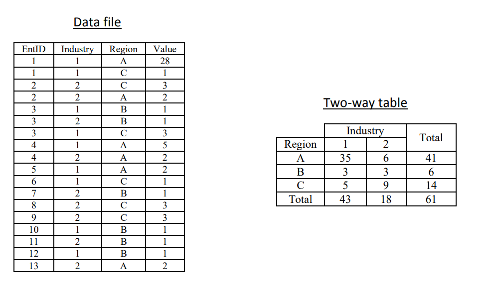
Publishing the two-way table as-is could result in disclosing confidential data of one or more responding enterprises. In this example, we will demonstrate the main use of G-Confid to guarantee the confidentiality of these data. The main G-Confid components are gconfid.sensitiv() and the gconfid.Suppression(). Additionally, the gconfid.Auditing() is important when making alterations to results of the gconfid.Suppression(). This example highlights these three processes. We should note that the example is somewhat simple and aims to demonstrate the general steps of using G-Confid.
Step 1: Creating the data files in Python¶
Input and output table specification¶
For both input and output tables, users can specify in-memory objects or files on disk. A number of different formats are supported for both types. Objects are associated with identifiers (e.g., "pandas dataframe") while files are associated with extensions (e.g., "filename.parquet"); please see the table below for details. Note that some are recommended for testing purposes only, and not all formats are supported for outputs tables.
Supported formats¶
| Format | Type | Supported identifier(s) or extension(s) | Notes |
|---|---|---|---|
| PyArrow Table | Object | "pyarrow", "table", "pyarrow table" |
Recommended format for in-memory objects. |
| Pandas DataFrame | Object | "pandas", "dataframe", "pandas dataframe" |
|
| Apache Parquet | File | .parquet, .parq |
Minimal RAM usage, good performance with large tables. |
| Apache Feather | File | .feather |
Least RAM usage, good performance with large tables. |
| SAS Dataset | File | .sas7bdat |
For testing purposes, input only; not recommended in production. |
| Comma Separated Value | File | .csv |
For testing purposes only; not recommended in production. |
For tips related to file paths in Python, see https://gitlab.k8s.cloud.statcan.ca/gensys/g-confid/-/blob/main/docs/EN/user_guide.md?ref_type=heads#escape-characters-and-file-paths
We will be using Pandas DataFrame(in-memory objects) in this guide since the examples we are showing in this guide is small. For more details on the input and output format and their perfromance, please refer to https://gitlab.k8s.cloud.statcan.ca/gensys/g-confid/-/blob/main/docs/EN/user_guide.md?ref_type=heads#performance-considerations
To execute a G-Confid procedure in a Python script, we first import the G-Confid package alongside any other packages we plan on using:
import gconfid
import pandas as pd
The following code is used to create the Pandas DataFrame that contains the data previously described. It is important that the unique identifier (Entid) and the dimension variables (Industry and Region) be in character format and that the variable of interest (Value) be in numeric format so that the file may be used in the next step within gconfid.sensitiv(). Also, note that the data needs to be in skinny format (see Section 2.1 for more information).
# initialize data of lists.
data = {"Entid": ['1', '1', '2', '2', '3',
'3', '3', '4', '4', '5',
'6', '7' ,'8', '9', '10',
'11', '12', '13'],
"Industry" : ['1', '1', '2', '2', '1',
'2', '1', '1', '2', '1',
'1', '2', '2', '2', '1',
'2', '1', '2'],
"Region" : ['A', 'C', 'C', 'A', 'B',
'B', 'C', 'A', 'A', 'A',
'C', 'B', 'C', 'C', 'B',
'B', 'B', 'A'],
"Value" : [28, 1, 3, 2, 1,
1, 3, 5, 2, 2,
1, 1, 3, 3, 1,
1, 1, 2]}
df = pd.DataFrame(data)
df
| Entid | Industry | Region | Value | |
|---|---|---|---|---|
| 0 | 1 | 1 | A | 28 |
| 1 | 1 | 1 | C | 1 |
| 2 | 2 | 2 | C | 3 |
| 3 | 2 | 2 | A | 2 |
| 4 | 3 | 1 | B | 1 |
| 5 | 3 | 2 | B | 1 |
| 6 | 3 | 1 | C | 3 |
| 7 | 4 | 1 | A | 5 |
| 8 | 4 | 2 | A | 2 |
| 9 | 5 | 1 | A | 2 |
| 10 | 6 | 1 | C | 1 |
| 11 | 7 | 2 | B | 1 |
| 12 | 8 | 2 | C | 3 |
| 13 | 9 | 2 | C | 3 |
| 14 | 10 | 1 | B | 1 |
| 15 | 11 | 2 | B | 1 |
| 16 | 12 | 1 | B | 1 |
| 17 | 13 | 2 | A | 2 |
Step 2: Calling sensitiv()¶
When executing a G-Confid module, we create a new object with a name of our choosing (in this case, "example"):
Modules must be referenced using the G-Confid package name, i.e., gconfid.sensitiv()
Parameters (e.g., hierarchy) and tables (e.g., indata) are specified as comma-separated key-value pairs, and can appear in any order
example = gconfid.sensitiv(
indata=df,
outcell = "pandas", # ouput a pandas dataframe
outconstraint= "pandas",
s_rule="pq 0.1",
hierarchy="""TOT_INDUSTRY 1 2;
TOT_REGION A B C;""",
unit_id="Entid",
var="Value",
dimension="Industry Region"
)
Some explanation of the code that is used:
- indata specifies the input micro data, in this case we refer to the Pandas Dataframe
df - outcell and outconstraint are used to specify the output data type, it could be stored in memory or saved to disk(If you want to save it to disk, you will input a file path). In this case, we stored it in memory as a Panda Dataframe
- In s_rule, we enter the rule to use that calculates the sensitivity of the cells of the table. Different rules exist to calculate the sensitivity of the cells of a table, so here we use a “PQ 0.1” rule. For more information on the different rules that are available, see 2.2 Sensitivity rules.
- Two dimensions appear in our two-way table: Industry and Region. To specify them in gconfid.sensitiv(), we must both write the names of these variables in
dimension, and also specify the categories pertaining to each dimension in theHIERARCHY, including the totals. See 2.3 Hierarchies for more information on how to define correctly a hierarchy in gconfid.sensitiv(). - In
unit_id, the unique identifier is to be specified, which in this case is Entid. - In
var, we specify the name of the numeric variable of interest, which here is called Value. - To conclude, note that many other options exist in
gconfid.sensitiv(), but they are not described here to keep it simple.
Outputs can be stored in memory or saved to disk. If stored in memory, they are stored in the user-created object (e.g., example) created when the procedure was executed. You can access in-memory outputs by running example.outcell and example.outconstraint.
example.outcell
| CellId | NbAnonym | AnonymTotalVar | NbRespondents | TotalVar | Sensitivity | Status | Type | TotalNoise | Industry | Region | |
|---|---|---|---|---|---|---|---|---|---|---|---|
| 0 | 1.0 | 0.0 | 0.0 | 3.0 | 35.0 | 0.8 | S | C | 35.0 | 1 | A |
| 1 | 2.0 | 0.0 | 0.0 | 3.0 | 5.0 | -0.7 | V | C | 5.0 | 1 | C |
| 2 | 3.0 | 0.0 | 0.0 | 3.0 | 9.0 | -2.7 | V | C | 9.0 | 2 | C |
| 3 | 4.0 | 0.0 | 0.0 | 3.0 | 6.0 | -1.8 | V | C | 6.0 | 2 | A |
| 4 | 5.0 | 0.0 | 0.0 | 3.0 | 3.0 | -0.9 | V | C | 3.0 | 1 | B |
| 5 | 6.0 | 0.0 | 0.0 | 3.0 | 3.0 | -0.9 | V | C | 3.0 | 2 | B |
| 6 | 7.0 | 0.0 | 0.0 | 13.0 | 61.0 | -22.1 | V | C | 61.0 | TOT_INDUSTRY | TOT_REGION |
| 7 | 8.0 | 0.0 | 0.0 | 7.0 | 43.0 | -6.1 | V | C | 43.0 | 1 | TOT_REGION |
| 8 | 9.0 | 0.0 | 0.0 | 8.0 | 18.0 | -9.5 | V | C | 18.0 | 2 | TOT_REGION |
| 9 | 10.0 | 0.0 | 0.0 | 5.0 | 41.0 | -3.2 | V | C | 41.0 | TOT_INDUSTRY | A |
| 10 | 11.0 | 0.0 | 0.0 | 5.0 | 6.0 | -2.8 | V | C | 6.0 | TOT_INDUSTRY | B |
| 11 | 12.0 | 0.0 | 0.0 | 6.0 | 14.0 | -7.7 | V | C | 14.0 | TOT_INDUSTRY | C |
Key things to know about the outcell file:
- In the Outcell file, each row represents a cell of the two-way table. Moreover, each cell receives an assigned serial number identified in the variable CellId
- For each cell, the number of respondents is calculated, the cell total(
TotalVar) and the sensitivity - A cell with sensitivity greater than zero is considered sensitive, regardless of the sensitivity rule that is used. If a cell is sensitive, it receives the value “S” in the variable Status. We therefore observe that the cell referring to industry 1 and region A is sensitive. Non-sensitive cells take the value “V”.
example.outconstraint
| ConstraintId | CellId | Coefficient | |
|---|---|---|---|
| 0 | 1.0 | 8.0 | 1.0 |
| 1 | 1.0 | 9.0 | 1.0 |
| 2 | 1.0 | 7.0 | -1.0 |
| 3 | 2.0 | 10.0 | 1.0 |
| 4 | 2.0 | 11.0 | 1.0 |
| 5 | 2.0 | 12.0 | 1.0 |
| 6 | 2.0 | 7.0 | -1.0 |
| 7 | 3.0 | 1.0 | 1.0 |
| 8 | 3.0 | 4.0 | 1.0 |
| 9 | 3.0 | 10.0 | -1.0 |
| 10 | 4.0 | 5.0 | 1.0 |
| 11 | 4.0 | 6.0 | 1.0 |
| 12 | 4.0 | 11.0 | -1.0 |
| 13 | 5.0 | 2.0 | 1.0 |
| 14 | 5.0 | 3.0 | 1.0 |
| 15 | 5.0 | 12.0 | -1.0 |
| 16 | 6.0 | 1.0 | 1.0 |
| 17 | 6.0 | 5.0 | 1.0 |
| 18 | 6.0 | 2.0 | 1.0 |
| 19 | 6.0 | 8.0 | -1.0 |
| 20 | 7.0 | 4.0 | 1.0 |
| 21 | 7.0 | 6.0 | 1.0 |
| 22 | 7.0 | 3.0 | 1.0 |
| 23 | 7.0 | 9.0 | -1.0 |
Key things to know about the outconstraint file:
- This file describes the linear constraints of the two-way table that is specified.
- The
CellIdvariable corresponds to the variable with the same name in theoutcellfile. It follows that we observe in theoutcellfile that cellId 7 corresponds to the grand total, where (Industry=“TOT_INDUSTRY” and Region=“TOT_REGION”). - Each constraint ConstraintId represents a linear equation. There are seven equations in use here.
- For each constraint, the sum of the cells each with a coefficient of 1 must equal the value of the cell with coefficient -1.
- For example, constraint 1 indicates that the sum of cells 8 and 9 should equal the value of cell 7. Put another way, the sum of the two subtotals of industries 1 and 2 should equal the value of the grand total.
- This file is especially useful for the next steps of the example.
For more detail on specifying the input and acess the output, please refer to the Input and output table specification section of the technoical guide:https://gitlab.k8s.cloud.statcan.ca/gensys/g-confid/-/blob/main/docs/EN/user_guide.md?ref_type=heads#input-and-output-table-specification
Step 3: gconfid.Suppression()¶
To begin with, we identified one sensitive cell in our two-way table. However, suppressing the value of this cell is not enough to ensure confidentiality. If we suppressed this value and did nothing with the rest of the two-way table, it would be easy to deduce the value of the cell from the other information available in the table.
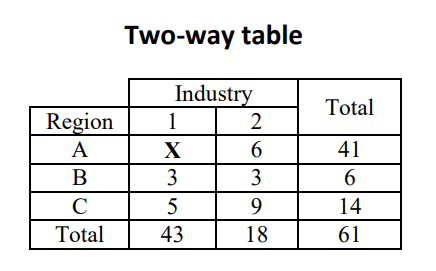
To ensure confidentiality of the cell, we need to suppress the values of other cells so that it is not possible to estimate too precisely the value of the sensitive cell. There are different ways to choose the other cells to suppress; these are called “suppression patterns”. The purpose of the gconfid.Suppression() is to choose a suppression pattern that minimizes the loss of information, but is the most efficient in terms of time and computer resources. The suppression pattern chosen is not necessarily optimal in terms of the loss of information, since it would be too costly in terms of time and computer resources to test all possible patterns, especially for large or complex files.
Coming back to our example, the simplest possible code for using the gconfid.Suppression() would be the one presented below. We simply enter the filenames outcell and outconstraint in the previous step and specify the desired output, i.e., Outpattern. Of course, many other options could be specified in gconfid.Suppression(), but they are not presented here.
result=gconfid.Suppression(
incell=example.outcell,
inconstraint=example.outconstraint,
outsuppress= "pandas"
)
Time zone for log entries: Eastern Daylight Time (UTC-4.0)
Loading input datasets
[TIME] TOTAL load input: 0.000 seconds (WALL), 0.000 seconds (CPU)
Pre Execute
[TIME] TOTAL pre execute: 0.026 seconds (WALL), 0.016 seconds (CPU)
Execute
====================================================================================================
G-Confid Version : 2.0.0b15
Support Email : statcan.gconfid-gconfid.statcan@statcan.gc.ca
Start Time : Mon Apr 20 09:52:34 2026 (Eastern Daylight Time)
====================================================================================================
Phase 1 iteration: 0 CurrentCell: 1.0 cells_to_treat: 1
****************************************************************************************************
Summary of the suppression process phase 1:
Number Value Percent of total number of cells
=========================== ========== ========== ================================
All suppressed cells 4.00 47.00 33.33
Suppressed sensitive cells 1.00 35.00 8.33
Suppressed complements 3.00 12.00 25.00
Cells suppressed by user 0.00 0.00 0.00
Suppressed aggregates 0.00 0.00 0.00
Published cells 8.00 197.00 66.67
****************************************************************************************************
Loading input datasets
[TIME] TOTAL load input: 0.000 seconds (WALL), 0.000 seconds (CPU)
Pre Execute
[TIME] TOTAL pre execute: 0.026 seconds (WALL), 0.016 seconds (CPU)
Execute
====================================================================================================
G-Confid Version : 2.0.0b15
Support Email : statcan.gconfid-gconfid.statcan@statcan.gc.ca
Start Time : Mon Apr 20 09:52:34 2026 (Eastern Daylight Time)
====================================================================================================
Phase 1 iteration: 0 CurrentCell: 1.0 cells_to_treat: 1
****************************************************************************************************
Summary of the suppression process phase 1:
Number Value Percent of total number of cells
=========================== ========== ========== ================================
All suppressed cells 4.00 47.00 33.33
Suppressed sensitive cells 1.00 35.00 8.33
Suppressed complements 3.00 12.00 25.00
Cells suppressed by user 0.00 0.00 0.00
Suppressed aggregates 0.00 0.00 0.00
Published cells 8.00 197.00 66.67
****************************************************************************************************
Phase 1 Time: 0:00:00.01
****************************************************************************************************
Summary of the entire suppression process:
Number Value Percent of total number of cells
=========================== ========== ========== ================================
All suppressed cells 4.00 47.00 33.33
Suppressed sensitive cells 1.00 35.00 8.33
Suppressed complements 3.00 12.00 25.00
Cells suppressed by user 0.00 0.00 0.00
Suppressed aggregates 0.00 0.00 0.00
Published cells 8.00 197.00 66.67
****************************************************************************************************
====================================================================================================
Total number of cell suppressed: 4
Total value amount suppressed: 47.0
Total duration: 0:00:00.07
====================================================================================================
G-Confid suppress completed: Mon Apr 20 09:52:34 2026 (Eastern Daylight Time)
====================================================================================================
[TIME] TOTAL execute: 0.085 seconds (WALL), 0.078 seconds (CPU)
Post Execute
[TIME] TOTAL post execute: 0.000 seconds (WALL), 0.000 seconds (CPU)
Free input datasets
[TIME] TOTAL free input: 0.000 seconds (WALL), 0.000 seconds (CPU)
Write output datasets
[TIME] TOTAL write output: 0.001 seconds (WALL), 0.000 seconds (CPU)
The outsuppress file produced here closely resembles the outcell file in the previous step, but it contains the new variable outstatus. This variable has a value of "X" if the cell is suppressed and a value of "P" if the cell is published. In our example, we see that a total of four cells are suppressed, including the one that was identified as sensitive.
result.outsuppress
| CellId | OutStatus | NetVariation | NbAnonym | AnonymTotalVar | NbRespondents | TotalVar | Sensitivity | Status | Type | TotalNoise | Industry | Region | |
|---|---|---|---|---|---|---|---|---|---|---|---|---|---|
| 0 | 1.0 | X | 0.4 | 0.0 | 0.0 | 3.0 | 35.0 | 0.8 | S | C | 35.0 | 1 | A |
| 1 | 2.0 | P | 0.0 | 0.0 | 0.0 | 3.0 | 5.0 | -0.7 | V | C | 5.0 | 1 | C |
| 2 | 3.0 | P | 0.0 | 0.0 | 0.0 | 3.0 | 9.0 | -2.7 | V | C | 9.0 | 2 | C |
| 3 | 4.0 | X | 0.4 | 0.0 | 0.0 | 3.0 | 6.0 | -1.8 | V | C | 6.0 | 2 | A |
| 4 | 5.0 | X | 0.4 | 0.0 | 0.0 | 3.0 | 3.0 | -0.9 | V | C | 3.0 | 1 | B |
| 5 | 6.0 | X | 0.4 | 0.0 | 0.0 | 3.0 | 3.0 | -0.9 | V | C | 3.0 | 2 | B |
| 6 | 7.0 | P | 0.0 | 0.0 | 0.0 | 13.0 | 61.0 | -22.1 | V | C | 61.0 | TOT_INDUSTRY | TOT_REGION |
| 7 | 8.0 | P | 0.0 | 0.0 | 0.0 | 7.0 | 43.0 | -6.1 | V | C | 43.0 | 1 | TOT_REGION |
| 8 | 9.0 | P | 0.0 | 0.0 | 0.0 | 8.0 | 18.0 | -9.5 | V | C | 18.0 | 2 | TOT_REGION |
| 9 | 10.0 | P | 0.0 | 0.0 | 0.0 | 5.0 | 41.0 | -3.2 | V | C | 41.0 | TOT_INDUSTRY | A |
| 10 | 11.0 | P | 0.0 | 0.0 | 0.0 | 5.0 | 6.0 | -2.8 | V | C | 6.0 | TOT_INDUSTRY | B |
| 11 | 12.0 | P | 0.0 | 0.0 | 0.0 | 6.0 | 14.0 | -7.7 | V | C | 14.0 | TOT_INDUSTRY | C |
The resulting file would be as follows:
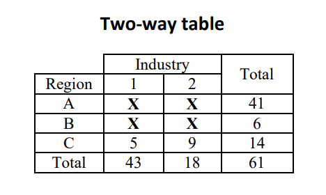
Step 4: gconfid.Auditing()¶
In practice, the gconfid.Auditing() should be used when we decide to change something in the suppression pattern provided by gconfid.Suppression(). However, by making these changes, there is a risk of choosing a suppression pattern that no longer guarantees the confidentiality of the data. To check the validity of a modified suppression pattern, we can use the gconfid.Auditing(). As was the case for gconfid.sensitiv() and gconfid.Suppression(), many other options are available in the gconfid.Auditing(), but they are not discussed here for the sake of conciseness.
Going back to our example, let us see what the gconfid.Auditing() does with the suppression pattern provided by the gconfid.Suppression. We enter into the outsuppress and outconstraint.
audit = gconfid.Auditing(
incell= result.outsuppress,
inconstraint = example.outconstraint,
report_level = 1,
outaudit="pandas"
)
Time zone for log entries: Eastern Daylight Time (UTC-4.0) Loading input datasets [TIME] TOTAL load input: 0.000 seconds (WALL), 0.000 seconds (CPU) Pre Execute [TIME] TOTAL pre execute: 0.018 seconds (WALL), 0.031 seconds (CPU) Execute ==================================================================================================== G-Confid Version : 2.0.0b15 Support Email : statcan.gconfid-gconfid.statcan@statcan.gc.ca Start Time : Mon Apr 20 09:52:34 2026 (Eastern Daylight Time) ==================================================================================================== Computation of Binary Cells completed in: 0:00:00.00 Number of binary constraints: 4 Number of binary cells: 4 Number of binary sets: 1 Solving for max and min values of binary sets: Solving cell 1 | 4 / 4 Left to solve | 100.00% Remaining | Solve duration: 0:00:00.00 Solving complete. ==================================================================================================== Summary Report ==================================================================================================== Number of sensitive cell in good protection: 1 Number of sensitive cell in protection not achieved: 0 Number of sensitive cell in exact disclosure: 0 Number of complement cell good protection: 3 Number of complement cell protection not achieved: 0 Number of complement cell exact disclosure: 0 Number of sensitive aggregate cell in good protection: 0 Number of sensitive aggregate cell in protection not achieved: 0 Number of sensitive aggregate cell in exact disclosure: 0 ==================================================================================================== G-Confid audit completed: Mon Apr 20 09:52:34 2026 (Eastern Daylight Time) ==================================================================================================== [TIME] TOTAL execute: 0.023 seconds (WALL), 0.016 seconds (CPU) Post Execute [TIME] TOTAL post execute: 0.000 seconds (WALL), 0.000 seconds (CPU) Free input datasets [TIME] TOTAL free input: 0.000 seconds (WALL), 0.000 seconds (CPU) Write output datasets [TIME] TOTAL write output: 0.001 seconds (WALL), 0.000 seconds (CPU)
When report_level = 1, gconfid.Auditing generates a summary report indicating whether the protection of the suppressed cells is good (based on the variable ProblemIndicator in the outaudit file). We can see here that all the cells have good protection.
Summary Report should provide you with enough information in determining protection for all the suppressed cells. However, outaudit contains more information on the audit result.
audit.outaudit
| CellId | OutStatus | NetVariation | NbAnonym | AnonymTotalVar | NbRespondents | TotalVar | Sensitivity | Status | Type | TotalNoise | Industry | Region | LBound | LTolerance | MinValue | MidPoint | UTolerance | MaxValue | UBound | IntervalWidth | MaxMinusMin | ProblemIndicator | |
|---|---|---|---|---|---|---|---|---|---|---|---|---|---|---|---|---|---|---|---|---|---|---|---|
| 0 | 1.0 | X | 0.4 | 0.0 | 0.0 | 3.0 | 35.0 | 0.8 | S | C | 35.0 | 1 | A | 17.5 | 34.6 | 33.5 | 35.0 | 35.4 | 36.5 | 52.5 | 8.571429 | 3.0 | 0.0 |
| 1 | 4.0 | X | 0.4 | 0.0 | 0.0 | 3.0 | 6.0 | -1.8 | V | C | 6.0 | 2 | A | 3.0 | 6.0 | 4.5 | 6.0 | 6.0 | 7.5 | 9.0 | 50.000000 | 3.0 | 0.0 |
| 2 | 5.0 | X | 0.4 | 0.0 | 0.0 | 3.0 | 3.0 | -0.9 | V | C | 3.0 | 1 | B | 1.5 | 3.0 | 1.5 | 3.0 | 3.0 | 4.5 | 4.5 | 100.000000 | 3.0 | 0.0 |
| 3 | 6.0 | X | 0.4 | 0.0 | 0.0 | 3.0 | 3.0 | -0.9 | V | C | 3.0 | 2 | B | 1.5 | 3.0 | 1.5 | 3.0 | 3.0 | 4.5 | 4.5 | 100.000000 | 3.0 | 0.0 |
Modified suppression pattern¶
Let us suppose that a user has incorrectly modified the suppression pattern and applies the gconfid.Auditing() to verify the new pattern. An example of an incorrect modification would be keeping the same suppression pattern, but publishing the result for the cell representing region B and industry 2. Let’s take a look at what would happen in this situation.
result.outsuppress.loc[3, 'OutStatus'] = "P"
result.outsuppress
| CellId | OutStatus | NetVariation | NbAnonym | AnonymTotalVar | NbRespondents | TotalVar | Sensitivity | Status | Type | TotalNoise | Industry | Region | |
|---|---|---|---|---|---|---|---|---|---|---|---|---|---|
| 0 | 1.0 | X | 0.4 | 0.0 | 0.0 | 3.0 | 35.0 | 0.8 | S | C | 35.0 | 1 | A |
| 1 | 2.0 | P | 0.0 | 0.0 | 0.0 | 3.0 | 5.0 | -0.7 | V | C | 5.0 | 1 | C |
| 2 | 3.0 | P | 0.0 | 0.0 | 0.0 | 3.0 | 9.0 | -2.7 | V | C | 9.0 | 2 | C |
| 3 | 4.0 | P | 0.4 | 0.0 | 0.0 | 3.0 | 6.0 | -1.8 | V | C | 6.0 | 2 | A |
| 4 | 5.0 | X | 0.4 | 0.0 | 0.0 | 3.0 | 3.0 | -0.9 | V | C | 3.0 | 1 | B |
| 5 | 6.0 | X | 0.4 | 0.0 | 0.0 | 3.0 | 3.0 | -0.9 | V | C | 3.0 | 2 | B |
| 6 | 7.0 | P | 0.0 | 0.0 | 0.0 | 13.0 | 61.0 | -22.1 | V | C | 61.0 | TOT_INDUSTRY | TOT_REGION |
| 7 | 8.0 | P | 0.0 | 0.0 | 0.0 | 7.0 | 43.0 | -6.1 | V | C | 43.0 | 1 | TOT_REGION |
| 8 | 9.0 | P | 0.0 | 0.0 | 0.0 | 8.0 | 18.0 | -9.5 | V | C | 18.0 | 2 | TOT_REGION |
| 9 | 10.0 | P | 0.0 | 0.0 | 0.0 | 5.0 | 41.0 | -3.2 | V | C | 41.0 | TOT_INDUSTRY | A |
| 10 | 11.0 | P | 0.0 | 0.0 | 0.0 | 5.0 | 6.0 | -2.8 | V | C | 6.0 | TOT_INDUSTRY | B |
| 11 | 12.0 | P | 0.0 | 0.0 | 0.0 | 6.0 | 14.0 | -7.7 | V | C | 14.0 | TOT_INDUSTRY | C |
audit = gconfid.Auditing(
incell= result.outsuppress,
inconstraint = example.outconstraint,
report_level = 1
)
Time zone for log entries: Eastern Daylight Time (UTC-4.0) Loading input datasets [TIME] TOTAL load input: 0.000 seconds (WALL), 0.000 seconds (CPU) Pre Execute [TIME] TOTAL pre execute: 0.014 seconds (WALL), 0.016 seconds (CPU) Execute ==================================================================================================== G-Confid Version : 2.0.0b15 Support Email : statcan.gconfid-gconfid.statcan@statcan.gc.ca Start Time : Mon Apr 20 09:52:34 2026 (Eastern Daylight Time) ==================================================================================================== Computation of Binary Cells completed in: 0:00:00.00 Loading input datasets [TIME] TOTAL load input: 0.000 seconds (WALL), 0.000 seconds (CPU) Pre Execute [TIME] TOTAL pre execute: 0.014 seconds (WALL), 0.016 seconds (CPU) Execute ==================================================================================================== G-Confid Version : 2.0.0b15 Support Email : statcan.gconfid-gconfid.statcan@statcan.gc.ca Start Time : Mon Apr 20 09:52:34 2026 (Eastern Daylight Time) ==================================================================================================== Computation of Binary Cells completed in: 0:00:00.00 Number of binary constraints: 2 Number of binary cells: 3 Number of binary sets: 1 Solving for max and min values of binary sets: Solving cell 1 | 3 / 3 Left to solve | 100.00% Remaining | Solve duration: 0:00:00.00 Solving cell 5 | 2 / 3 Left to solve | 66.67% Remaining | Solve duration: 0:00:00.00 Solving cell 6 | 1 / 3 Left to solve | 33.33% Remaining | Solve duration: 0:00:00.00 Solving complete. ==================================================================================================== Summary Report ==================================================================================================== Number of sensitive cell in good protection: 0 Number of sensitive cell in protection not achieved: 0 Number of sensitive cell in exact disclosure: 1 Number of complement cell good protection: 2 Number of complement cell protection not achieved: 0 Number of complement cell exact disclosure: 0 Number of sensitive aggregate cell in good protection: 0 Number of sensitive aggregate cell in protection not achieved: 0 Number of sensitive aggregate cell in exact disclosure: 0 ==================================================================================================== G-Confid audit completed: Mon Apr 20 09:52:34 2026 (Eastern Daylight Time) ==================================================================================================== [TIME] TOTAL execute: 0.035 seconds (WALL), 0.031 seconds (CPU) Post Execute [TIME] TOTAL post execute: 0.000 seconds (WALL), 0.000 seconds (CPU) Free input datasets [TIME] TOTAL free input: 0.000 seconds (WALL), 0.000 seconds (CPU) Write output datasets [TIME] TOTAL write output: 0.000 seconds (WALL), 0.000 seconds (CPU)
We notice that there are only three lines in the data file since only three cells are now suppressed. This time, in the Summary Report generated by the 'gconfid.Auditing()', we see that the three cells are in an exact disclosure situation(one sensitive cell and two complement cells), which is exactly what we would expect, given that the disclosure of one of the four suppressed cells in our example would make it possible to deduce the values of all the other suppressed cell
This first example is for users less familiar with Python who want to create a file in skinny format so that it can be used by G-Confid. Although this process is not specific to G-Confid, we thought it would be useful to include an example in our documentation, since transposing a file is one of the first obstacles our users may encounter
What is meant by ‘skinny format’?
To perform its analyses, G-Confid requires that files be in skinny format. This means that the variable of interest, such as revenue, must appear in a single column. Below is an example of a file transposition to skinny format:
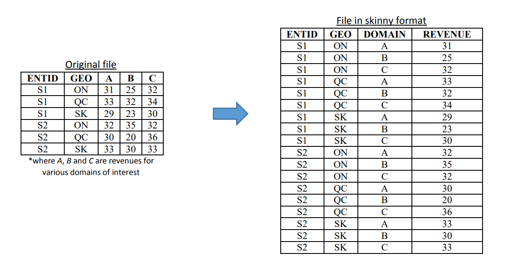
Once the file is in skinny format, we can then perform analyses in G-Confid for revenue by province and domain. There are different ways to transpose a file into skinny format. Here we will only be showing how to use pandas.melt(), since we feel it is the easiest and most effective method:
# Create the DataFrame
data = {
"ENTID": ["S1", "S1", "S1", "S2", "S2", "S2"],
"GEO": ["ON", "QC", "SK", "ON", "QC", "SK"],
"A": [31, 33, 29, 32, 30, 33],
"B": [25, 32, 23, 35, 20, 30],
"C": [32, 34, 30, 32, 36, 33]
}
df = pd.DataFrame(data)
df
| ENTID | GEO | A | B | C | |
|---|---|---|---|---|---|
| 0 | S1 | ON | 31 | 25 | 32 |
| 1 | S1 | QC | 33 | 32 | 34 |
| 2 | S1 | SK | 29 | 23 | 30 |
| 3 | S2 | ON | 32 | 35 | 32 |
| 4 | S2 | QC | 30 | 20 | 36 |
| 5 | S2 | SK | 33 | 30 | 33 |
# Using pandas.melt
df_long = df.melt(id_vars=["ENTID", "GEO"], #Columns to use as identifier variables.
var_name="Domain", #Name to use for the 'variable' column
value_name="Revenue") #Name to use for the 'value' column.
df_long
| ENTID | GEO | Domain | Revenue | |
|---|---|---|---|---|
| 0 | S1 | ON | A | 31 |
| 1 | S1 | QC | A | 33 |
| 2 | S1 | SK | A | 29 |
| 3 | S2 | ON | A | 32 |
| 4 | S2 | QC | A | 30 |
| 5 | S2 | SK | A | 33 |
| 6 | S1 | ON | B | 25 |
| 7 | S1 | QC | B | 32 |
| 8 | S1 | SK | B | 23 |
| 9 | S2 | ON | B | 35 |
| 10 | S2 | QC | B | 20 |
| 11 | S2 | SK | B | 30 |
| 12 | S1 | ON | C | 32 |
| 13 | S1 | QC | C | 34 |
| 14 | S1 | SK | C | 30 |
| 15 | S2 | ON | C | 32 |
| 16 | S2 | QC | C | 36 |
| 17 | S2 | SK | C | 33 |
2.2 Sensitivity rules¶
In the 1. Getting Started section, we presented a basic example that included 13 enterprises. In that example, we indicated that, for each cell in the two-way table, we were calculating the sensitivity (denoted here as S) based on the rule specified in the SRULE option of gconfid.senstiv(). Keep in mind that a cell is considered to be sensitive when S > 0; otherwise, it is protected.
Using the same example, we will show the different rules available in G-Confid to calculate cell sensitivity. The data in that example may be generated as follows:
# initialize data of dictionary.
data = {"Entid": ['1', '1', '2', '2', '3', '3', '3', '4', '4', '5',
'6', '7' ,'8', '9', '10','11', '12', '13'],
"Industry" : ['1', '1', '2', '2', '1', '2', '1', '1', '2', '1',
'1', '2', '2', '2', '1', '2', '1', '2'],
"Region" : ['A', 'C', 'C', 'A', 'B', 'B', 'C', 'A', 'A', 'A',
'C', 'B', 'C', 'C', 'B', 'B', 'B', 'A'],
"Value" : [28, 1, 3, 2, 1, 1, 3, 5, 2, 2,
1, 1, 3, 3, 1, 1, 1, 2]}
df = pd.DataFrame(data)
df
| Entid | Industry | Region | Value | |
|---|---|---|---|---|
| 0 | 1 | 1 | A | 28 |
| 1 | 1 | 1 | C | 1 |
| 2 | 2 | 2 | C | 3 |
| 3 | 2 | 2 | A | 2 |
| 4 | 3 | 1 | B | 1 |
| 5 | 3 | 2 | B | 1 |
| 6 | 3 | 1 | C | 3 |
| 7 | 4 | 1 | A | 5 |
| 8 | 4 | 2 | A | 2 |
| 9 | 5 | 1 | A | 2 |
| 10 | 6 | 1 | C | 1 |
| 11 | 7 | 2 | B | 1 |
| 12 | 8 | 2 | C | 3 |
| 13 | 9 | 2 | C | 3 |
| 14 | 10 | 1 | B | 1 |
| 15 | 11 | 2 | B | 1 |
| 16 | 12 | 1 | B | 1 |
| 17 | 13 | 2 | A | 2 |
Keep in mind that this is the resulting two-way table, for which we wish to check confidentiality:
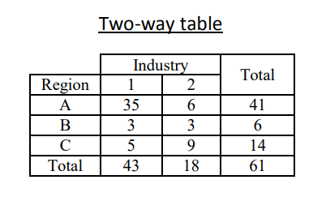
Before we begin¶
As previously stated, a sensitivity rule determines whether a cell is sensitive. It also determines the level of protection the cell needs to be properly protected, which is very important in choosing a suppression pattern. There are five rules that can be specified in the SRULE option of gconfid.sensitiv(): PQ, NK, DUFFETT, C2 and ARB.
These rules can be expressed as follows:
$$ S = \displaystyle\sum_{i = 1}^N \alpha_i x_i $$
Where
- S ia a cell sensitivity
- if S > 0 then the cell is sensitive and must be protected
- N is the number of contributor in a cell
- $x_i, i = 1, 2...N$ is the value of the i^{th} contributor to a cell, with contributions given in decreasing order ($x_1 \geq x_2 \geq ... \geq x_N \geq 0$)
- $\alpha_i$, i = 1, 2... N are the standard coefficients for the sensitivity rule chosen.
PQ rule¶
The PQ rule is often used in practice. Its simplified form is named ‘p-percent rule’, where the q has the value 100%. The PQ rule and p-percent rule are frequently used interchangeably since we generally use a q value of 100%. A cell is considered sensitive if the second largest contributor can estimate within ±(pq)% the value of the largest contributor. In gconfid.sensitiv(), we only need to specify the value of pq (pq or p, varify). The PQ rule can be expressed as follows:
$$ S = (pq) \cdot x_1 - \sum_{i\geq3} x_i $$ Where $$ 0 \leq pq \leq 1$$
This rule may be generalized using the following values for $\alpha_i$: $$ \alpha_i = \begin{cases} pq, & \text{if $i=1$}.\\ 0, & \text{if $i=2$}.\\ -1, & \text{if $i\geq 3$}. \end{cases}$$
As explained above, the idea behind this rule is to verify whether the value of the largest enterprise could easily be estimated by the second largest. If the values of $x_i$ for $i\geq 3$ are relatively small in relation to $x_1$, then it would be easy for enterprise 2 to have a good estimate of $x_1$ by subtracting its value from the cell total.
For information purposes, in this type of scenario, the largest contributor is named the “target”, while the second is named the “intruder” or “suspect” and the others are considered to provide “noise”.
Now, let's looks at our example. There are three contributors for industry 1 and region A:
| Entid | Value | Role |
|---|---|---|
| 1 | 28 | Target |
| 4 | 5 | Intruder/Suspect |
| 5 | 2 | Noise |
With a p-percent rule where $p=0.1$, we obtain $S = 0.1 \times 28 - 2 = 0.8$, which is considered to be sensitive. It is also the only sensitive cell identifies in the table. We can verify this with the following code in G-Confid:
example = gconfid.sensitiv(
indata=df,
outcell = "pandas",
outconstraint= "pandas",
s_rule="pq 0.1", # Sensitivity Rule: p = 0.1
hierarchy="""TOT_INDUSTRY 1 2;
TOT_REGION A B C;""",
unit_id="Entid",
var="Value",
dimension="Industry Region"
)
example.outcell
| CellId | NbAnonym | AnonymTotalVar | NbRespondents | TotalVar | Sensitivity | Status | Type | TotalNoise | Industry | Region | |
|---|---|---|---|---|---|---|---|---|---|---|---|
| 0 | 1.0 | 0.0 | 0.0 | 3.0 | 35.0 | 0.8 | S | C | 35.0 | 1 | A |
| 1 | 2.0 | 0.0 | 0.0 | 3.0 | 5.0 | -0.7 | V | C | 5.0 | 1 | C |
| 2 | 3.0 | 0.0 | 0.0 | 3.0 | 9.0 | -2.7 | V | C | 9.0 | 2 | C |
| 3 | 4.0 | 0.0 | 0.0 | 3.0 | 6.0 | -1.8 | V | C | 6.0 | 2 | A |
| 4 | 5.0 | 0.0 | 0.0 | 3.0 | 3.0 | -0.9 | V | C | 3.0 | 1 | B |
| 5 | 6.0 | 0.0 | 0.0 | 3.0 | 3.0 | -0.9 | V | C | 3.0 | 2 | B |
| 6 | 7.0 | 0.0 | 0.0 | 13.0 | 61.0 | -22.1 | V | C | 61.0 | TOT_INDUSTRY | TOT_REGION |
| 7 | 8.0 | 0.0 | 0.0 | 7.0 | 43.0 | -6.1 | V | C | 43.0 | 1 | TOT_REGION |
| 8 | 9.0 | 0.0 | 0.0 | 8.0 | 18.0 | -9.5 | V | C | 18.0 | 2 | TOT_REGION |
| 9 | 10.0 | 0.0 | 0.0 | 5.0 | 41.0 | -3.2 | V | C | 41.0 | TOT_INDUSTRY | A |
| 10 | 11.0 | 0.0 | 0.0 | 5.0 | 6.0 | -2.8 | V | C | 6.0 | TOT_INDUSTRY | B |
| 11 | 12.0 | 0.0 | 0.0 | 6.0 | 14.0 | -7.7 | V | C | 14.0 | TOT_INDUSTRY | C |
If a larger value is used for p, the rule is stricter. For example, when $p = 0.3, S = 0.3 \times 28 - 2 = 6.4$. If we examine the results presented below, we see that with this new value of $p$, the total for region A becomes sensitive. Note that the procedure also identifies a sensitive aggregate, which can be recognized by the additional line displayed at the bottom of the outcell where Type="A". See the examples on 2.4 Aggregates for more information on aggregates
example = gconfid.sensitiv(
indata=df,
outcell = "pandas",
outconstraint= "pandas",
s_rule="pq 0.3", # Sensitivity Rule: p = 0.3
hierarchy="""TOT_INDUSTRY 1 2;
TOT_REGION A B C;""",
unit_id="Entid",
var="Value",
dimension="Industry Region"
)
example.outcell
| CellId | NbAnonym | AnonymTotalVar | NbRespondents | TotalVar | Sensitivity | Status | Type | TotalNoise | Industry | Region | |
|---|---|---|---|---|---|---|---|---|---|---|---|
| 0 | 1.0 | 0.0 | 0.0 | 3.0 | 35.0 | 6.4 | S | C | 35.0 | 1 | A |
| 1 | 2.0 | 0.0 | 0.0 | 3.0 | 5.0 | -0.1 | V | C | 5.0 | 1 | C |
| 2 | 3.0 | 0.0 | 0.0 | 3.0 | 9.0 | -2.1 | V | C | 9.0 | 2 | C |
| 3 | 4.0 | 0.0 | 0.0 | 3.0 | 6.0 | -1.4 | V | C | 6.0 | 2 | A |
| 4 | 5.0 | 0.0 | 0.0 | 3.0 | 3.0 | -0.7 | V | C | 3.0 | 1 | B |
| 5 | 6.0 | 0.0 | 0.0 | 3.0 | 3.0 | -0.7 | V | C | 3.0 | 2 | B |
| 6 | 7.0 | 0.0 | 0.0 | 13.0 | 61.0 | -16.3 | V | C | 61.0 | TOT_INDUSTRY | TOT_REGION |
| 7 | 8.0 | 0.0 | 0.0 | 7.0 | 43.0 | -0.3 | V | C | 43.0 | 1 | TOT_REGION |
| 8 | 9.0 | 0.0 | 0.0 | 8.0 | 18.0 | -8.5 | V | C | 18.0 | 2 | TOT_REGION |
| 9 | 10.0 | 0.0 | 0.0 | 5.0 | 41.0 | 2.4 | S | C | 41.0 | TOT_INDUSTRY | A |
| 10 | 11.0 | 0.0 | 0.0 | 5.0 | 6.0 | -2.4 | V | C | 6.0 | TOT_INDUSTRY | B |
| 11 | 12.0 | 0.0 | 0.0 | 6.0 | 14.0 | -7.1 | V | C | 14.0 | TOT_INDUSTRY | C |
| 12 | 13.0 | 0.0 | 0.0 | 5.0 | 40.0 | 2.7 | S | A | 40.0 |
The NK rule¶
Another rule often used in practice is the NK rule, also referred to as the NK dominance rule. A cell is considered to be sensitive if the sum of the largest n contributions accounts for more than k percent of the total cell value. The user must provide the two parameters: n and k.
For the specified parameters n and k, sensitivity is defined as follows:
$$ S = \frac{100}{k} \sum_{i=1}^n x_i - \sum_{i= 1}^N x_i = (\frac{100}{k} - 1) \sum_{i<1}^n x_i - \sum_{i = n+1}^N x_i $$
Where $n \geq 1, N \geq 1$ and $50 < k \leq 100$
This rule can be generalized using the following values for $\alpha_i$: $$ \alpha_i = \begin{cases} \frac{100}{k} - 1, & \text{if $1 \leq i \leq n$}.\\ -1, & \text{if $n+1 \leq i \leq N$}. \end{cases} $$
Coming back to our example, if $n = 1$ and $k = 70$, then we get sensitivity $S = (\frac{100}{70} - 1) \cdot 28 - 5 - 2 = 5$ for the cell for industry 1 and region A. This is also what we obtain in G-Confid using following code:
example = gconfid.sensitiv(
indata=df,
outcell = "pandas",
outconstraint= "pandas",
s_rule="NK 1 70", # Sensitivity Rule: N = 1, K = 70
hierarchy="""TOT_INDUSTRY 1 2;
TOT_REGION A B C;""",
unit_id="Entid",
var="Value",
dimension="Industry Region"
)
example.outcell
| CellId | NbAnonym | AnonymTotalVar | NbRespondents | TotalVar | Sensitivity | Status | Type | TotalNoise | Industry | Region | |
|---|---|---|---|---|---|---|---|---|---|---|---|
| 0 | 1.0 | 0.0 | 0.0 | 3.0 | 35.0 | 5.000000 | S | C | 35.0 | 1 | A |
| 1 | 2.0 | 0.0 | 0.0 | 3.0 | 5.0 | -0.714286 | V | C | 5.0 | 1 | C |
| 2 | 3.0 | 0.0 | 0.0 | 3.0 | 9.0 | -4.714286 | V | C | 9.0 | 2 | C |
| 3 | 4.0 | 0.0 | 0.0 | 3.0 | 6.0 | -3.142857 | V | C | 6.0 | 2 | A |
| 4 | 5.0 | 0.0 | 0.0 | 3.0 | 3.0 | -1.571429 | V | C | 3.0 | 1 | B |
| 5 | 6.0 | 0.0 | 0.0 | 3.0 | 3.0 | -1.571429 | V | C | 3.0 | 2 | B |
| 6 | 7.0 | 0.0 | 0.0 | 13.0 | 61.0 | -19.571429 | V | C | 61.0 | TOT_INDUSTRY | TOT_REGION |
| 7 | 8.0 | 0.0 | 0.0 | 7.0 | 43.0 | -1.571429 | V | C | 43.0 | 1 | TOT_REGION |
| 8 | 9.0 | 0.0 | 0.0 | 8.0 | 18.0 | -10.857143 | V | C | 18.0 | 2 | TOT_REGION |
| 9 | 10.0 | 0.0 | 0.0 | 5.0 | 41.0 | -1.000000 | V | C | 41.0 | TOT_INDUSTRY | A |
| 10 | 11.0 | 0.0 | 0.0 | 5.0 | 6.0 | -3.142857 | V | C | 6.0 | TOT_INDUSTRY | B |
| 11 | 12.0 | 0.0 | 0.0 | 6.0 | 14.0 | -9.714286 | V | C | 14.0 | TOT_INDUSTRY | C |
| 12 | 13.0 | 0.0 | 0.0 | 5.0 | 40.0 | 1.428571 | S | A | 40.0 |
With a rule that $n = 2$ and $k = 85$, the sensitivity of this same cell would be $S = (\frac{100}{85} - 1) \cdot (28+5)-2 = 3.82$
example = gconfid.sensitiv(
indata=df,
outcell = "pandas",
outconstraint= "pandas",
s_rule="NK 2 85", # Sensitivity Rule: N = 2, K = 85
hierarchy="""TOT_INDUSTRY 1 2;
TOT_REGION A B C;""",
unit_id="Entid",
var="Value",
dimension="Industry Region"
)
example.outcell
| CellId | NbAnonym | AnonymTotalVar | NbRespondents | TotalVar | Sensitivity | Status | Type | TotalNoise | Industry | Region | |
|---|---|---|---|---|---|---|---|---|---|---|---|
| 0 | 1.0 | 0.0 | 0.0 | 3.0 | 35.0 | 3.823529 | S | C | 35.0 | 1 | A |
| 1 | 2.0 | 0.0 | 0.0 | 3.0 | 5.0 | -0.294118 | V | C | 5.0 | 1 | C |
| 2 | 3.0 | 0.0 | 0.0 | 3.0 | 9.0 | -1.941176 | V | C | 9.0 | 2 | C |
| 3 | 4.0 | 0.0 | 0.0 | 3.0 | 6.0 | -1.294118 | V | C | 6.0 | 2 | A |
| 4 | 5.0 | 0.0 | 0.0 | 3.0 | 3.0 | -0.647059 | V | C | 3.0 | 1 | B |
| 5 | 6.0 | 0.0 | 0.0 | 3.0 | 3.0 | -0.647059 | V | C | 3.0 | 2 | B |
| 6 | 7.0 | 0.0 | 0.0 | 13.0 | 61.0 | -18.647059 | V | C | 61.0 | TOT_INDUSTRY | TOT_REGION |
| 7 | 8.0 | 0.0 | 0.0 | 7.0 | 43.0 | -3.000000 | V | C | 43.0 | 1 | TOT_REGION |
| 8 | 9.0 | 0.0 | 0.0 | 8.0 | 18.0 | -8.588235 | V | C | 18.0 | 2 | TOT_REGION |
| 9 | 10.0 | 0.0 | 0.0 | 5.0 | 41.0 | 0.176471 | S | C | 41.0 | TOT_INDUSTRY | A |
| 10 | 11.0 | 0.0 | 0.0 | 5.0 | 6.0 | -2.470588 | V | C | 6.0 | TOT_INDUSTRY | B |
| 11 | 12.0 | 0.0 | 0.0 | 6.0 | 14.0 | -6.941176 | V | C | 14.0 | TOT_INDUSTRY | C |
It is possible to use several NK rules at the same time. Up to three NK rules can be entered at the same time in gconfid.sensitiv(). In such a situation, for each cell, sensitivity is defined by the maximum of the sensitivities calculated for each NK rule. In our example, if we combine the rules $(n = 1, k = 70)$ and $(n = 2, k = 85)$, the cell for industry 1 and region A has a sensitivity $S = max(5, 3.82) = 5$
example = gconfid.sensitiv(
indata=df,
outcell = "pandas",
outconstraint= "pandas",
s_rule="NK 1 70 2 85", # Sensitivity Rule: (N = 1 and K = 70) and (N = 2, K = 85)
hierarchy="""TOT_INDUSTRY 1 2;
TOT_REGION A B C;""",
unit_id="Entid",
var="Value",
dimension="Industry Region"
)
example.outcell
| CellId | NbAnonym | AnonymTotalVar | NbRespondents | TotalVar | Sensitivity | Status | Type | TotalNoise | Industry | Region | |
|---|---|---|---|---|---|---|---|---|---|---|---|
| 0 | 1.0 | 0.0 | 0.0 | 3.0 | 35.0 | 5.000000 | S | C | 35.0 | 1 | A |
| 1 | 2.0 | 0.0 | 0.0 | 3.0 | 5.0 | -0.294118 | V | C | 5.0 | 1 | C |
| 2 | 3.0 | 0.0 | 0.0 | 3.0 | 9.0 | -1.941176 | V | C | 9.0 | 2 | C |
| 3 | 4.0 | 0.0 | 0.0 | 3.0 | 6.0 | -1.294118 | V | C | 6.0 | 2 | A |
| 4 | 5.0 | 0.0 | 0.0 | 3.0 | 3.0 | -0.647059 | V | C | 3.0 | 1 | B |
| 5 | 6.0 | 0.0 | 0.0 | 3.0 | 3.0 | -0.647059 | V | C | 3.0 | 2 | B |
| 6 | 7.0 | 0.0 | 0.0 | 13.0 | 61.0 | -18.647059 | V | C | 61.0 | TOT_INDUSTRY | TOT_REGION |
| 7 | 8.0 | 0.0 | 0.0 | 7.0 | 43.0 | -1.571429 | V | C | 43.0 | 1 | TOT_REGION |
| 8 | 9.0 | 0.0 | 0.0 | 8.0 | 18.0 | -8.588235 | V | C | 18.0 | 2 | TOT_REGION |
| 9 | 10.0 | 0.0 | 0.0 | 5.0 | 41.0 | 0.176471 | S | C | 41.0 | TOT_INDUSTRY | A |
| 10 | 11.0 | 0.0 | 0.0 | 5.0 | 6.0 | -2.470588 | V | C | 6.0 | TOT_INDUSTRY | B |
| 11 | 12.0 | 0.0 | 0.0 | 6.0 | 14.0 | -6.941176 | V | C | 14.0 | TOT_INDUSTRY | C |
| 12 | 13.0 | 0.0 | 0.0 | 5.0 | 40.0 | 1.428571 | S | A | 40.0 |
Duffett rule¶
The Duffett rule was developed by and for Statistics Canada and can only be used internally. This rule has hardly been used since 2009. In its place, we recommend using Statistics Canada’s C2 rule. This section is therefore presented for information purposes only. The Duffett rule is a combination of NK rules, for which the parameter details are confidential. To use the Duffett rule, it is not necessary to enter a numeric parameter in the SRULE option of gconfid.sensitiv(). Sensitivity is defined as: $$ S = max(S_1, S_2) $$ Where
- $S_1$ is calculated using a rule $(n=1, k=k_1)$
- $S_2$ is calculated using a rule $(n=2, k=k_2)$
We show here the code to use the DUFFETT option (the results are not shown for confidentiality reasons):
example = gconfid.sensitiv(
indata=df,
outcell = "pandas",
outconstraint= "pandas",
s_rule="DUFFETT", # Sensitivity Rule: DUFFETT
hierarchy="""TOT_INDUSTRY 1 2;
TOT_REGION A B C;""",
unit_id="Entid",
var="Value",
dimension="Industry Region"
)
Given that the rule is still available in G-Confid, but not recommended, the following warning message appears when the rule is used:
WARNING: Sensitivity rule parser: Duffett is not recommended. You should use another sensitivity rule.
C2 rule¶
The C2 rule was also developed by and for Statistics Canada and can only be used internally. It is a combination of the PQ and NK rules. The details of the parameters used in this rule are confidential. This rule does not require the input of a numeric parameter in the SRULE option of gconfid.sensitiv(). This rule is recommended for economic data at Statistics Canada. Sensitivity is defined as follows:
$$ S = max(S_D, S_P) $$
Where
- $S_D$ is calculated using a rule similar to the Duffett rule
- $S_P$ is calculated using a p-percent rule
We show here the code to use the C2 option (the results are not shown for confidentiality reasons):
example = gconfid.sensitiv(
indata=df,
outcell = "pandas",
outconstraint= "pandas",
s_rule="C2", # Sensitivity Rule: C2
hierarchy="""TOT_INDUSTRY 1 2;
TOT_REGION A B C;""",
unit_id="Entid",
var="Value",
dimension="Industry Region"
)
ARB(arbitrary rule)¶
With this rule, the user can manually specify the first four $\alpha_i$ values in the general form of the sensitivity equation. For $i \geq 5$, $\alpha_i = -1 $. Sensitivity is then calculated as follows: $$ S = \alpha_1 x_1 + \alpha_2 x_2 + \alpha_3 x_3 + \alpha_4 x_4 - \sum_{i = 5}^N x_i $$
Although this rule offers a lot more flexibility in specifying parameters, it is important to pay attention when specifying them so that the results make sense. This option is mostly used for research purposes
Below is an example of what would happen if $\alpha_1 = 0.3, \alpha_2 = 0$ and $\alpha_3 = -1$ ($\alpha_4$ would be -1 by default since it is not specified):
example = gconfid.sensitiv(
indata=df,
outcell = "pandas",
outconstraint= "pandas",
s_rule="ARB 0.3 0 -1", # Sensitivity Rule ARB
hierarchy="""TOT_INDUSTRY 1 2;
TOT_REGION A B C;""",
unit_id="Entid",
var="Value",
dimension="Industry Region"
)
example.outcell
| CellId | NbAnonym | AnonymTotalVar | NbRespondents | TotalVar | Sensitivity | Status | Type | TotalNoise | Industry | Region | |
|---|---|---|---|---|---|---|---|---|---|---|---|
| 0 | 1.0 | 0.0 | 0.0 | 3.0 | 35.0 | 6.4 | S | C | 35.0 | 1 | A |
| 1 | 2.0 | 0.0 | 0.0 | 3.0 | 5.0 | -0.1 | V | C | 5.0 | 1 | C |
| 2 | 3.0 | 0.0 | 0.0 | 3.0 | 9.0 | -2.1 | V | C | 9.0 | 2 | C |
| 3 | 4.0 | 0.0 | 0.0 | 3.0 | 6.0 | -1.4 | V | C | 6.0 | 2 | A |
| 4 | 5.0 | 0.0 | 0.0 | 3.0 | 3.0 | -0.7 | V | C | 3.0 | 1 | B |
| 5 | 6.0 | 0.0 | 0.0 | 3.0 | 3.0 | -0.7 | V | C | 3.0 | 2 | B |
| 6 | 7.0 | 0.0 | 0.0 | 13.0 | 61.0 | -16.3 | V | C | 61.0 | TOT_INDUSTRY | TOT_REGION |
| 7 | 8.0 | 0.0 | 0.0 | 7.0 | 43.0 | -0.3 | V | C | 43.0 | 1 | TOT_REGION |
| 8 | 9.0 | 0.0 | 0.0 | 8.0 | 18.0 | -8.5 | V | C | 18.0 | 2 | TOT_REGION |
| 9 | 10.0 | 0.0 | 0.0 | 5.0 | 41.0 | 2.4 | S | C | 41.0 | TOT_INDUSTRY | A |
| 10 | 11.0 | 0.0 | 0.0 | 5.0 | 6.0 | -2.4 | V | C | 6.0 | TOT_INDUSTRY | B |
| 11 | 12.0 | 0.0 | 0.0 | 6.0 | 14.0 | -7.1 | V | C | 14.0 | TOT_INDUSTRY | C |
| 12 | 13.0 | 0.0 | 0.0 | 5.0 | 40.0 | 2.7 | S | A | 40.0 |
As expected, the results are identical to those of the example of the PQ rule when $p=0.3$
In practice, we might want to apply a PQ rule that accounts for the collusion of two contributors. To achieve this, we simply need to specify that $\alpha_1 = pq, \alpha_2 = \alpha_3 = 0, \alpha_4 = -1$ (not presented as it was not deemed relevant with the example on which this is based).
MINRESP rule (minimum number of respondents)¶
This final rule, a bit different from the others, determines whether or not a cell is sensitive based on the number of respondents. A cell containing a number of respondents below a certain threshold is considered to be sensitive, and this threshold is chosen by the user. Contrary to other sensitivity rules presented in this document, the min_resp rule is not a s_rule option, but rather a different option that can be added to one of our other sensitivity rules.
We will now return to our first example of the NK rule. By adding a constraint of at least five respondents per cell, we see that several cells become sensitive:
example = gconfid.sensitiv(
indata=df,
outcell = "pandas",
outconstraint= "pandas",
s_rule="NK 1 70",
hierarchy="""TOT_INDUSTRY 1 2;
TOT_REGION A B C;""",
unit_id="Entid",
var="Value",
dimension="Industry Region",
min_resp=5
)
example.outcell
| CellId | NbAnonym | AnonymTotalVar | NbRespondents | TotalVar | Sensitivity | Status | Type | TotalNoise | Industry | Region | |
|---|---|---|---|---|---|---|---|---|---|---|---|
| 0 | 1.0 | 0.0 | 0.0 | 3.0 | 35.0 | 5.000000 | S | C | 35.0 | 1 | A |
| 1 | 2.0 | 0.0 | 0.0 | 3.0 | 5.0 | 1.000000 | S | C | 5.0 | 1 | C |
| 2 | 3.0 | 0.0 | 0.0 | 3.0 | 9.0 | 1.000000 | S | C | 9.0 | 2 | C |
| 3 | 4.0 | 0.0 | 0.0 | 3.0 | 6.0 | 1.000000 | S | C | 6.0 | 2 | A |
| 4 | 5.0 | 0.0 | 0.0 | 3.0 | 3.0 | 1.000000 | S | C | 3.0 | 1 | B |
| 5 | 6.0 | 0.0 | 0.0 | 3.0 | 3.0 | 1.000000 | S | C | 3.0 | 2 | B |
| 6 | 7.0 | 0.0 | 0.0 | 13.0 | 61.0 | -19.571429 | V | C | 61.0 | TOT_INDUSTRY | TOT_REGION |
| 7 | 8.0 | 0.0 | 0.0 | 7.0 | 43.0 | -1.571429 | V | C | 43.0 | 1 | TOT_REGION |
| 8 | 9.0 | 0.0 | 0.0 | 8.0 | 18.0 | -10.857143 | V | C | 18.0 | 2 | TOT_REGION |
| 9 | 10.0 | 0.0 | 0.0 | 5.0 | 41.0 | -1.000000 | V | C | 41.0 | TOT_INDUSTRY | A |
| 10 | 11.0 | 0.0 | 0.0 | 5.0 | 6.0 | -3.142857 | V | C | 6.0 | TOT_INDUSTRY | B |
| 11 | 12.0 | 0.0 | 0.0 | 6.0 | 14.0 | -9.714286 | V | C | 14.0 | TOT_INDUSTRY | C |
- The
min_resprule cannot be used on its own since thes_ruleoption ingconfid.sensitivis mandatory. To make sure that the sensitivity is based only onmin_resp, we can however use SRULE=”ARB -1”. - When
min_respdetermines that a cell does not contain enough respondents, the sensitivity of this cell is the maximum value between 1 and the sensitivity obtained using the rule specified ins_rule(G-Confid retains the higher of the two values, but if that value exceeds the cell total, then the sensitivity equals the total). That is why the cell for industry 1 and region A has a sensitivity of 5 rather than 1.
Which rule should be chosen?¶
For Statistics Canada users, we generally recommend using the C2 rule. However, this rule is not available outside Statistics Canada in order to protect its confidentiality
G-Confid external users may refer to the standards of their own statistical organization to choose the best rule(s) for protecting the confidentiality of their data contributors. For those who have not yet developed such standards, it should be stated that normally, national statistical agencies, including Statistics Canada, never reveal the values of the parameters they use.
However, as a starting point for external users, INSEE (National Institute of Statistics and Economic Studies) identifies the following two rules to maintain the statistical confidentiality of business data:
- No cell must pertain to less than three units.
- No cell must contain data for which one enterprise represents more than 85% of the total.
To do this using G-Confid, we would specify MINRESP=3 and SRULE="NK 1 85".
We can, however, recommend a rule that is similar and modern: the p-percent rule with a value of 0.15, which guarantees that (1) at least three enterprises will contribute to the cell; and (2) the largest contribution cannot be guessed to within 15%. Using G-Confid, we would then specify that s_rule=“PQ 0.15”. In that case, it would not be necessary to specify min_resp=3 since the PQ rule implicitly requires a minimum of three contributors. Of course, that is merely a starting point. Any further strategy requires reflection based on the survey or data type, the need to protect respondents, and the expectations of the statistical organization involved
2.3 Hierarchies¶
One of the most important, and at times most difficult, steps to perform when indicating instructions in gconfid.sensitiv() is specifying the data hierarchy. Using the following examples, we will try to show how it can be specified. All of the examples will be based on the same fictitious data. The data can be produced using following code.
# Initialize empty list to collect rows
data = []
# Set seed for reproducibility
np.random.seed(7005)
# Mapping for Province based on i
province_map = {1: "10", 2: "11", 3: "12", 4: "13", 5: "24", 6: "35", 7: "46",
8: "47", 9: "48", 10: "59"
}
id_counter = 0
for i in range(1, 11): # i from 1 to 10
for j in range(1, 3): # j from 1 to 2
for k in range(1, 6): # k from 1 to 5
id_counter += 1
entid = str(id_counter).zfill(3)
province = province_map[i]
industry = "A" if j == 1 else "B"
value = round(((np.random.rand() + 0.25) ** 7) * 1000) + 1
data.append([entid, province, industry, value])
# Create DataFrame
df = pd.DataFrame(data, columns=["Entid", "Province", "Industry", "Value"])
pd.set_option('display.max_rows', 10) # Show 10 rows
pd.set_option('display.max_columns', 10) # Show 10 columns
df
| Entid | Province | Industry | Value | |
|---|---|---|---|---|
| 0 | 001 | 10 | A | 732 |
| 1 | 002 | 10 | A | 515 |
| 2 | 003 | 10 | A | 168 |
| 3 | 004 | 10 | A | 2 |
| 4 | 005 | 10 | A | 1992 |
| ... | ... | ... | ... | ... |
| 95 | 096 | 59 | B | 59 |
| 96 | 097 | 59 | B | 3973 |
| 97 | 098 | 59 | B | 2 |
| 98 | 099 | 59 | B | 3455 |
| 99 | 100 | 59 | B | 1493 |
100 rows × 4 columns
It is not important to understand this code, but rather to know the contents of Pandas Dataframe named df that has been generated. First of all, the dataframe contains 100 enterprises, numbered from 1 to 100 in the variable Entid (the above table only shows the first 5 and last 5). These enterprises are spread across 10 provinces (10, 11, 12, 13, 24, 35, 46, 47, 48, 59) and divided into two types of industries: A and B. The Value variable contains the revenue of each of the enterprises and this is our variable of interest. If you would like to see the full table, you may run the following to show all the rows and columns of the dataframe:
pd.set_option('display.max_rows', None) # Show all rows
pd.set_option('display.max_columns', None) # Show all columns
Example 1: One single dimension variable¶
For this first example, we will assume that we only want to publish one table with the total revenues by province. To do this, we will use the following code in gconfid.sensitiv()
example = gconfid.sensitiv(
indata=df,
outcell = "pandas",
outconstraint= "pandas",
s_rule="pq 0.1",
hierarchy="TOT_PROVINCE 10 11 12 13 24 35 46 47 48 59;",
unit_id="Entid",
var="Value",
dimension="Province"
)
example.outcell
| CellId | NbAnonym | AnonymTotalVar | NbRespondents | TotalVar | Sensitivity | Status | Type | TotalNoise | Province | |
|---|---|---|---|---|---|---|---|---|---|---|
| 0 | 1.0 | 0.0 | 0.0 | 10.0 | 6215.0 | -1697.4 | V | C | 6215.0 | 10 |
| 1 | 2.0 | 0.0 | 0.0 | 10.0 | 7352.0 | -1335.2 | V | C | 7352.0 | 11 |
| 2 | 3.0 | 0.0 | 0.0 | 10.0 | 16655.0 | -7179.7 | V | C | 16655.0 | 12 |
| 3 | 4.0 | 0.0 | 0.0 | 10.0 | 4617.0 | -564.2 | V | C | 4617.0 | 13 |
| 4 | 5.0 | 0.0 | 0.0 | 10.0 | 8118.0 | -1266.3 | V | C | 8118.0 | 24 |
| ... | ... | ... | ... | ... | ... | ... | ... | ... | ... | ... |
| 6 | 7.0 | 0.0 | 0.0 | 10.0 | 6545.0 | -1399.8 | V | C | 6545.0 | 46 |
| 7 | 8.0 | 0.0 | 0.0 | 10.0 | 8039.0 | -782.4 | V | C | 8039.0 | 47 |
| 8 | 9.0 | 0.0 | 0.0 | 10.0 | 4480.0 | -1077.3 | V | C | 4480.0 | 48 |
| 9 | 10.0 | 0.0 | 0.0 | 10.0 | 13384.0 | -5558.7 | V | C | 13384.0 | 59 |
| 10 | 11.0 | 0.0 | 0.0 | 100.0 | 82682.0 | -73053.3 | V | C | 82682.0 | TOT_PROVINCE |
11 rows × 10 columns
A few notes regarding the hierarchy option:
- It is necessary to specify that we are interested in the
Provincevariable in thedimensionoption ofgconfid.sensitiv(). Without that, G-Confid would not know which variable to look at for our hierarchy. - The total for each province is named “TOT_PROVINCE”, but we could have given it any other name.
- It is important to first specify the name that we wish to give the total, before specifying the values of the categories (in this case the provinces). Otherwise, there is a risk of obtaining results that do not make sense in the
outcellfile. - If we had forgotten to name one of the provinces in the
hierarchy, it would not have appeared in theoutcellfile and the total would not have accounted for it. The total is always based on the values specified in thehierarchyoption rather than the values in the input file. - If we had added to the
hierarchya province that did not exist in the input file (e.g., province “70”), it would not have appeared in theoutcelltable since it does not exist. - Once the entire hierarchy has been specified, it is necessary to insert a ‘;’ to indicate to
gconfid.sensitiv()that everything has been specified.
We will now present two alternative ways that we could have written this code to obtain the same results
Option B: Using an assigned String variable¶
It is frequent in practice to specify the hierarchy as a String variable. This is particularly useful for writing complex hierarchies that extend over several lines. We will be using variable in our next examples to specify the hierarchy. Below is code that is equivalent to the preceding code:
hierarchy_ex1b = "TOT_PROVINCE 10 11 12 13 24 35 46 47 48 59;"
example = gconfid.sensitiv(
indata=df,
outcell = "pandas",
outconstraint= "pandas",
s_rule="pq 0.1",
hierarchy=hierarchy_ex1b,
unit_id="Entid",
var="Value",
dimension="Province"
)
As we can see, the variable named hierarchy_ex1b contains the text for specifying the hierarchy. Then we specify hierarchy_ex1b in the hierarchy parameter.
Option C: Using the -1 shortcut¶
As previously mentioned, if we put non-existent values in the province hierarchy, these values will simply be ignored since they do not exist in the input file. So, if the hierarchy lists all of the numbers from 10 to 59, we should obtain the same results as when we specify only the provinces present in the input file. In the HIERARCHY option, there is a shortcut that can be used if the user wants to include all of the values from one number to another. The user simply needs to indicate the start number, then -1, then the end number. Let’s see how the shortcut could have been used in this situation:
hierarchy_ex1c="TOT_PROVINCE 10 -1 59;"
example = gconfid.sensitiv(
indata=df,
outcell = "pandas",
outconstraint= "pandas",
s_rule="pq 0.1",
hierarchy=hierarchy_ex1c,
unit_id="Entid",
var="Value",
dimension="Province"
)
Advantages of using the -1 shortcut:
- The code may be easier to write and read
- Less risk of forgetting values that need to be included
- May be easier to update the list of values to be included
Disadvantages of using the -1 shortcut:
- Running time may be longer since
gconfid.sensitiv()must test each of the values in the list - The user cannot exclude certain values from the list
Note: The use of the -1 shortcut may be applied to a variable that takes only positive integers. The shortcut works even though the variable is in alphanumeric format, as required by G-Confid
Example 2: Two dimension variables¶
Now let’s assume that we want to publish a two-way table showing the revenues for our enterprises by province and by industry. To do this, we need to specify the name of the variables in dimension and their respective hierarchies in hierarchy. Below is how the code could be written:
hierarchy_ex2 = """TOT_INDUSTRY A B;
TOT_PROVINCE 10 11 12 13 24 35 46 47 48 59;"""
example = gconfid.sensitiv(
indata=df,
outcell = "pandas",
outconstraint= "pandas",
s_rule="pq 0.1",
hierarchy=hierarchy_ex2,
unit_id="Entid",
var="Value",
dimension="Industry Province" # Two dimension variable
)
This code generates the outcell file shown below. Each of the lines in the file corresponds to a cell in the two-way table that we wish to publish. In order, we have the different combinations for the Industry and Province variables, the grand total, the marginal total by industry, then the marginal total by province. It is important to indicate in the hierarchy that the industries are ‘A’ and ‘B’, and not ‘a’ and ‘b’ (since this variable is written in upper case in the input file). In the hierarchy, the categories for our dimension variables must be written exactly the same as they appear in the input file,
otherwise they will not be recognized by G-Confid.
pd.set_option('display.max_rows', None) # Show all rows
pd.set_option('display.max_columns', None) # Show all columns
example.outcell
| CellId | NbAnonym | AnonymTotalVar | NbRespondents | TotalVar | Sensitivity | Status | Type | TotalNoise | Industry | Province | |
|---|---|---|---|---|---|---|---|---|---|---|---|
| 0 | 1.0 | 0.0 | 0.0 | 5.0 | 3409.0 | -485.8 | V | C | 3409.0 | A | 10 |
| 1 | 2.0 | 0.0 | 0.0 | 5.0 | 2806.0 | 111.6 | S | C | 2806.0 | B | 10 |
| 2 | 3.0 | 0.0 | 0.0 | 5.0 | 4820.0 | -118.2 | V | C | 4820.0 | A | 11 |
| 3 | 4.0 | 0.0 | 0.0 | 5.0 | 2532.0 | 144.7 | S | C | 2532.0 | B | 11 |
| 4 | 5.0 | 0.0 | 0.0 | 5.0 | 3800.0 | 40.0 | S | C | 3800.0 | A | 12 |
| 5 | 6.0 | 0.0 | 0.0 | 5.0 | 12855.0 | -3379.7 | V | C | 12855.0 | B | 12 |
| 6 | 7.0 | 0.0 | 0.0 | 5.0 | 751.0 | -278.4 | V | C | 751.0 | A | 13 |
| 7 | 8.0 | 0.0 | 0.0 | 5.0 | 3866.0 | 186.8 | S | C | 3866.0 | B | 13 |
| 8 | 9.0 | 0.0 | 0.0 | 5.0 | 6227.0 | -401.3 | V | C | 6227.0 | A | 24 |
| 9 | 10.0 | 0.0 | 0.0 | 5.0 | 1891.0 | 170.6 | S | C | 1891.0 | B | 24 |
| 10 | 11.0 | 0.0 | 0.0 | 5.0 | 4262.0 | -614.7 | V | C | 4262.0 | A | 35 |
| 11 | 12.0 | 0.0 | 0.0 | 5.0 | 3015.0 | 230.7 | S | C | 3015.0 | B | 35 |
| 12 | 13.0 | 0.0 | 0.0 | 5.0 | 3323.0 | -555.3 | V | C | 3323.0 | A | 46 |
| 13 | 14.0 | 0.0 | 0.0 | 5.0 | 3222.0 | 248.2 | S | C | 3222.0 | B | 46 |
| 14 | 15.0 | 0.0 | 0.0 | 5.0 | 2769.0 | 182.1 | S | C | 2769.0 | A | 47 |
| 15 | 16.0 | 0.0 | 0.0 | 5.0 | 5270.0 | 360.6 | S | C | 5270.0 | B | 47 |
| 16 | 17.0 | 0.0 | 0.0 | 5.0 | 2630.0 | -318.9 | V | C | 2630.0 | A | 48 |
| 17 | 18.0 | 0.0 | 0.0 | 5.0 | 1850.0 | 47.7 | S | C | 1850.0 | B | 48 |
| 18 | 19.0 | 0.0 | 0.0 | 5.0 | 4402.0 | -536.7 | V | C | 4402.0 | A | 59 |
| 19 | 20.0 | 0.0 | 0.0 | 5.0 | 8982.0 | -1156.7 | V | C | 8982.0 | B | 59 |
| 20 | 21.0 | 0.0 | 0.0 | 100.0 | 82682.0 | -73053.3 | V | C | 82682.0 | TOT_INDUSTRY | TOT_PROVINCE |
| 21 | 22.0 | 0.0 | 0.0 | 50.0 | 36393.0 | -27529.3 | V | C | 36393.0 | A | TOT_PROVINCE |
| 22 | 23.0 | 0.0 | 0.0 | 50.0 | 46289.0 | -36813.7 | V | C | 46289.0 | B | TOT_PROVINCE |
| 23 | 24.0 | 0.0 | 0.0 | 10.0 | 6215.0 | -1697.4 | V | C | 6215.0 | TOT_INDUSTRY | 10 |
| 24 | 25.0 | 0.0 | 0.0 | 10.0 | 7352.0 | -1335.2 | V | C | 7352.0 | TOT_INDUSTRY | 11 |
| 25 | 26.0 | 0.0 | 0.0 | 10.0 | 16655.0 | -7179.7 | V | C | 16655.0 | TOT_INDUSTRY | 12 |
| 26 | 27.0 | 0.0 | 0.0 | 10.0 | 4617.0 | -564.2 | V | C | 4617.0 | TOT_INDUSTRY | 13 |
| 27 | 28.0 | 0.0 | 0.0 | 10.0 | 8118.0 | -1266.3 | V | C | 8118.0 | TOT_INDUSTRY | 24 |
| 28 | 29.0 | 0.0 | 0.0 | 10.0 | 7277.0 | -2093.3 | V | C | 7277.0 | TOT_INDUSTRY | 35 |
| 29 | 30.0 | 0.0 | 0.0 | 10.0 | 6545.0 | -1399.8 | V | C | 6545.0 | TOT_INDUSTRY | 46 |
| 30 | 31.0 | 0.0 | 0.0 | 10.0 | 8039.0 | -782.4 | V | C | 8039.0 | TOT_INDUSTRY | 47 |
| 31 | 32.0 | 0.0 | 0.0 | 10.0 | 4480.0 | -1077.3 | V | C | 4480.0 | TOT_INDUSTRY | 48 |
| 32 | 33.0 | 0.0 | 0.0 | 10.0 | 13384.0 | -5558.7 | V | C | 13384.0 | TOT_INDUSTRY | 59 |
Below are a few important notes regarding the code to enter in gconfid.sensitiv() when there are two or more dimensions:
- The variable names in
dimensionmust be specified in the same order that they are specified inhierarchy. - Each dimension is placed on a different line in
hierarchy, but the ";" symbol is what is important to separate the dimensions. Everything could have been written on the same line. - When we are done writing the instructions in
hierarchyfor a dimension, we need to add a ";" symbol. This ensures that each dimension is separated by a ";" inhierarchy. - There must be the same number of dimensions in
dimensionandhierarchy. Otherwise,gconfid.sensitiv()generates an error message and does not run. - In python, multiple line of string can be created with triple qoute """String""".
Example 3: Provinces and regions¶
We would now like to publish a table that contains the results by province and by region. For the purposes of this example, it will be assumed that the provinces are divided into five regions, and that the first number of the province identifier corresponds to the home region. To do this, we will use the following code:
hierarchy_ex3="""TOT_REGION 1 2 3 4 5:
1 10 11 12 13:
2 24:
3 35:
4 46 47 48:
5 59;
"""
example = gconfid.sensitiv(
indata=df,
outcell = "pandas",
outconstraint= "pandas",
s_rule="pq 0.1",
hierarchy=hierarchy_ex3,
unit_id="Entid",
var="Value",
dimension="Province" # one dimension variable - Province
)
example.outcell
| CellId | NbAnonym | AnonymTotalVar | NbRespondents | TotalVar | Sensitivity | Status | Type | TotalNoise | Province | |
|---|---|---|---|---|---|---|---|---|---|---|
| 0 | 1.0 | 0.0 | 0.0 | 10.0 | 6215.0 | -1697.4 | V | C | 6215.0 | 10 |
| 1 | 2.0 | 0.0 | 0.0 | 10.0 | 7352.0 | -1335.2 | V | C | 7352.0 | 11 |
| 2 | 3.0 | 0.0 | 0.0 | 10.0 | 16655.0 | -7179.7 | V | C | 16655.0 | 12 |
| 3 | 4.0 | 0.0 | 0.0 | 10.0 | 4617.0 | -564.2 | V | C | 4617.0 | 13 |
| 4 | 5.0 | 0.0 | 0.0 | 10.0 | 8118.0 | -1266.3 | V | C | 8118.0 | 24 |
| 5 | 6.0 | 0.0 | 0.0 | 10.0 | 7277.0 | -2093.3 | V | C | 7277.0 | 35 |
| 6 | 7.0 | 0.0 | 0.0 | 10.0 | 6545.0 | -1399.8 | V | C | 6545.0 | 46 |
| 7 | 8.0 | 0.0 | 0.0 | 10.0 | 8039.0 | -782.4 | V | C | 8039.0 | 47 |
| 8 | 9.0 | 0.0 | 0.0 | 10.0 | 4480.0 | -1077.3 | V | C | 4480.0 | 48 |
| 9 | 10.0 | 0.0 | 0.0 | 10.0 | 13384.0 | -5558.7 | V | C | 13384.0 | 59 |
| 10 | 11.0 | 0.0 | 0.0 | 100.0 | 82682.0 | -73053.3 | V | C | 82682.0 | TOT_REGION |
| 11 | 12.0 | 0.0 | 0.0 | 40.0 | 34839.0 | -25363.7 | V | C | 34839.0 | 1 |
| 12 | 13.0 | 0.0 | 0.0 | 10.0 | 8118.0 | -1266.3 | V | C | 8118.0 | 2 |
| 13 | 14.0 | 0.0 | 0.0 | 10.0 | 7277.0 | -2093.3 | V | C | 7277.0 | 3 |
| 14 | 15.0 | 0.0 | 0.0 | 30.0 | 19064.0 | -11276.4 | V | C | 19064.0 | 4 |
| 15 | 16.0 | 0.0 | 0.0 | 10.0 | 13384.0 | -5558.7 | V | C | 13384.0 | 5 |
In this hierarchy, we see the use of the ":" symbol for the first time. These are used when a dimension has several levels. In this case, the most general level is the region, then each region is divided into provinces. Note:
- It is important to remember that the first term of each expression is supposed to be a total. So, when we write “4 46 47 48:”, we are indicating that region 4 corresponds to the total of provinces 46, 47 and 48.
- Each expression has been placed on a different line in our example, but the ":" symbols are what is important to separate the expressions. Everything could have been written on the same line.
- We cannot forget the expression "TOT_REGION 1 2 3 4 5 :" in the hierarchy.
gconfid.sensitiv()requires that all categories are connected and joined together to make a grand total. Otherwise, an error message appears explaining that there are multiple roots, and there can only be one root.
Example 4: Results by region only¶
In the previous example, we were interested in the results by region and by province, but we could easily be interested in the results by region only. A simple way to obtain results by region only is to create a new variable in our data file:
df['Region'] = df['Province'].str[0]
example = gconfid.sensitiv(
indata=df,
outcell = "pandas",
outconstraint= "pandas",
s_rule="pq 0.1",
hierarchy="TOT_REGION 1 2 3 4 5;",
unit_id="Entid",
var="Value",
dimension="Region" # one dimension variable - Province
)
example.outcell
| CellId | NbAnonym | AnonymTotalVar | NbRespondents | TotalVar | Sensitivity | Status | Type | TotalNoise | Region | |
|---|---|---|---|---|---|---|---|---|---|---|
| 0 | 1.0 | 0.0 | 0.0 | 40.0 | 34839.0 | -25363.7 | V | C | 34839.0 | 1 |
| 1 | 2.0 | 0.0 | 0.0 | 10.0 | 8118.0 | -1266.3 | V | C | 8118.0 | 2 |
| 2 | 3.0 | 0.0 | 0.0 | 10.0 | 7277.0 | -2093.3 | V | C | 7277.0 | 3 |
| 3 | 4.0 | 0.0 | 0.0 | 30.0 | 19064.0 | -11276.4 | V | C | 19064.0 | 4 |
| 4 | 5.0 | 0.0 | 0.0 | 10.0 | 13384.0 | -5558.7 | V | C | 13384.0 | 5 |
| 5 | 6.0 | 0.0 | 0.0 | 100.0 | 82682.0 | -73053.3 | V | C | 82682.0 | TOT_REGION |
We can see that this time, only the results by region are displayed. There are no results for provinces.
Option B: Using a range¶
There is another way to obtain the same results without having to modify the dffile. Starting with the
provinces only, we can use the code_range option to combine provinces into regions without the provinces being displayed in the outcell file:
example = gconfid.sensitiv(
indata=df,
outcell = "pandas",
outconstraint= "pandas",
s_rule="pq 0.1",
hierarchy="TOT_REGION 1 2 3 4 5;",
code_range="""1 10 11 12 13:
2 24:
3 35:
4 46 47 48:
5 59;""", # code_range specified
unit_id="Entid",
var="Value",
dimension="Region"
)
Here, the code_range option has the same form as the hierarchy presented in example 3 to explain which provinces are included in each region.
Option C: Using range and variables¶
Similar to specifying a hierarchy, we can create a String variable for the RANGE option. By creating a String variable for the code_range and another variable for the HIERARCHY option, we can produce the same instructions as those presented in option B
range_ex4c="""1 10 11 12 13:
2 24:
3 35:
4 46 47 48:
5 59;
"""
hierarchy_ex4c = "TOT_REGION 1 2 3 4 5;"
example = gconfid.sensitiv(
indata=df,
outcell = "pandas",
outconstraint= "pandas",
s_rule="pq 0.1",
hierarchy=hierarchy_ex4c,
code_range=range_ex4c, # code_range specified
unit_id="Entid",
var="Value",
dimension="Province"
)
Example 5: Range when there is more than one variable¶
Now let’s assume that we want to determine the sensitivity of cells in a two-way table based on region and industry. We would like to know how to specify the range when there is more than one dimension.
First of all, it is important to note that the dimension, hierarchy and code_range options must have the same number of dimensions, and these must be specified in the same order. If there is nothing to be written in the range for one of the dimensions, a ";" symbol should be added to indicate that the range is blank for that dimension.
In the following code, we see that ";" is specified in the range before the instructions to classify provinces by region. The ";" symbol is placed here because the Industry variable is listed before the
Province variable in the dimension statement.
range_ex5="""
;
1 10 11 12 13:
2 24:
3 35:
4 46 47 48:
5 59;
"""
hierarchy_ex5="""
TOT_INDUSTRY A B;
TOT_REGION 1 2 3 4 5;
"""
example = gconfid.sensitiv(
indata=df,
outcell = "pandas",
outconstraint= "pandas",
s_rule="pq 0.1",
hierarchy=hierarchy_ex5,
code_range=range_ex5, # code_range specified
unit_id="Entid",
var="Value",
dimension="Industry Province"
)
example.outcell
| CellId | NbAnonym | AnonymTotalVar | NbRespondents | TotalVar | Sensitivity | Status | Type | TotalNoise | Industry | Province | |
|---|---|---|---|---|---|---|---|---|---|---|---|
| 0 | 1.0 | 0.0 | 0.0 | 20.0 | 12780.0 | -5570.2 | V | C | 12780.0 | A | 1 |
| 1 | 2.0 | 0.0 | 0.0 | 20.0 | 22059.0 | -12583.7 | V | C | 22059.0 | B | 1 |
| 2 | 3.0 | 0.0 | 0.0 | 5.0 | 6227.0 | -401.3 | V | C | 6227.0 | A | 2 |
| 3 | 4.0 | 0.0 | 0.0 | 5.0 | 1891.0 | 170.6 | S | C | 1891.0 | B | 2 |
| 4 | 5.0 | 0.0 | 0.0 | 5.0 | 4262.0 | -614.7 | V | C | 4262.0 | A | 3 |
| 5 | 6.0 | 0.0 | 0.0 | 5.0 | 3015.0 | 230.7 | S | C | 3015.0 | B | 3 |
| 6 | 7.0 | 0.0 | 0.0 | 15.0 | 8722.0 | -4160.9 | V | C | 8722.0 | A | 4 |
| 7 | 8.0 | 0.0 | 0.0 | 15.0 | 10342.0 | -2554.4 | V | C | 10342.0 | B | 4 |
| 8 | 9.0 | 0.0 | 0.0 | 5.0 | 4402.0 | -536.7 | V | C | 4402.0 | A | 5 |
| 9 | 10.0 | 0.0 | 0.0 | 5.0 | 8982.0 | -1156.7 | V | C | 8982.0 | B | 5 |
| 10 | 11.0 | 0.0 | 0.0 | 100.0 | 82682.0 | -73053.3 | V | C | 82682.0 | TOT_INDUSTRY | TOT_REGION |
| 11 | 12.0 | 0.0 | 0.0 | 50.0 | 36393.0 | -27529.3 | V | C | 36393.0 | A | TOT_REGION |
| 12 | 13.0 | 0.0 | 0.0 | 50.0 | 46289.0 | -36813.7 | V | C | 46289.0 | B | TOT_REGION |
| 13 | 14.0 | 0.0 | 0.0 | 40.0 | 34839.0 | -25363.7 | V | C | 34839.0 | TOT_INDUSTRY | 1 |
| 14 | 15.0 | 0.0 | 0.0 | 10.0 | 8118.0 | -1266.3 | V | C | 8118.0 | TOT_INDUSTRY | 2 |
| 15 | 16.0 | 0.0 | 0.0 | 10.0 | 7277.0 | -2093.3 | V | C | 7277.0 | TOT_INDUSTRY | 3 |
| 16 | 17.0 | 0.0 | 0.0 | 30.0 | 19064.0 | -11276.4 | V | C | 19064.0 | TOT_INDUSTRY | 4 |
| 17 | 18.0 | 0.0 | 0.0 | 10.0 | 13384.0 | -5558.7 | V | C | 13384.0 | TOT_INDUSTRY | 5 |
Example 6: Multi-level hierarchy¶
Now, let’s assume that we want to obtain the results by province, region and direction (East/West). We would like to create the following hierarchy:
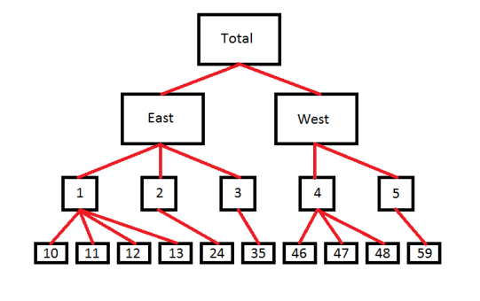
Specifying this hierarchy is not really any more complex than when we had only the regions and provinces to indicate. To achieve this, we simply need to focus on the different red lines in the diagram. If we start at the top of the diagram, we first state that the total corresponds to the sum of East and West, then we indicate which regions make up East and West, and which provinces make up these regions. That is how we obtain the following code:
hierarchy_ex6="""TOT_REGION EAST WEST:
EAST 1 2 3:
WEST 4 5:
1 10 11 12 13:
2 24:
3 35:
4 46 47 48:
5 59;"""
example = gconfid.sensitiv(
indata=df,
outcell = "pandas",
outconstraint= "pandas",
s_rule="pq 0.1",
hierarchy=hierarchy_ex6,
unit_id="Entid",
var="Value",
dimension="Province"
)
example.outcell
| CellId | NbAnonym | AnonymTotalVar | NbRespondents | TotalVar | Sensitivity | Status | Type | TotalNoise | Province | |
|---|---|---|---|---|---|---|---|---|---|---|
| 0 | 1.0 | 0.0 | 0.0 | 10.0 | 6215.0 | -1697.4 | V | C | 6215.0 | 10 |
| 1 | 2.0 | 0.0 | 0.0 | 10.0 | 7352.0 | -1335.2 | V | C | 7352.0 | 11 |
| 2 | 3.0 | 0.0 | 0.0 | 10.0 | 16655.0 | -7179.7 | V | C | 16655.0 | 12 |
| 3 | 4.0 | 0.0 | 0.0 | 10.0 | 4617.0 | -564.2 | V | C | 4617.0 | 13 |
| 4 | 5.0 | 0.0 | 0.0 | 10.0 | 8118.0 | -1266.3 | V | C | 8118.0 | 24 |
| 5 | 6.0 | 0.0 | 0.0 | 10.0 | 7277.0 | -2093.3 | V | C | 7277.0 | 35 |
| 6 | 7.0 | 0.0 | 0.0 | 10.0 | 6545.0 | -1399.8 | V | C | 6545.0 | 46 |
| 7 | 8.0 | 0.0 | 0.0 | 10.0 | 8039.0 | -782.4 | V | C | 8039.0 | 47 |
| 8 | 9.0 | 0.0 | 0.0 | 10.0 | 4480.0 | -1077.3 | V | C | 4480.0 | 48 |
| 9 | 10.0 | 0.0 | 0.0 | 10.0 | 13384.0 | -5558.7 | V | C | 13384.0 | 59 |
| 10 | 11.0 | 0.0 | 0.0 | 100.0 | 82682.0 | -73053.3 | V | C | 82682.0 | TOT_REGION |
| 11 | 12.0 | 0.0 | 0.0 | 60.0 | 50234.0 | -40605.3 | V | C | 50234.0 | EAST |
| 12 | 13.0 | 0.0 | 0.0 | 40.0 | 32448.0 | -23749.4 | V | C | 32448.0 | WEST |
| 13 | 14.0 | 0.0 | 0.0 | 40.0 | 34839.0 | -25363.7 | V | C | 34839.0 | 1 |
| 14 | 15.0 | 0.0 | 0.0 | 10.0 | 8118.0 | -1266.3 | V | C | 8118.0 | 2 |
| 15 | 16.0 | 0.0 | 0.0 | 10.0 | 7277.0 | -2093.3 | V | C | 7277.0 | 3 |
| 16 | 17.0 | 0.0 | 0.0 | 30.0 | 19064.0 | -11276.4 | V | C | 19064.0 | 4 |
| 17 | 18.0 | 0.0 | 0.0 | 10.0 | 13384.0 | -5558.7 | V | C | 13384.0 | 5 |
Example 7: Multiple decomposition¶
We will now look at a more advanced example. Suppose we want to break down Canada geographically as we did in the previous example: by direction, then by region, followed by province at the lowest level of the hierarchy. However, our external client requests that we present separate results for the set of provinces with a coastline separate from the set of provinces that are landlocked. This decomposition represents an alternative to obtaining results by direction. G-Confid permits us to specify a hierarchy by regrouping cells at lower levels of the hierarchy in more than one way.
We can now reconstruct the hierarchy diagram as follows, where the red lines and blue lines represent two ways to calculate the total:
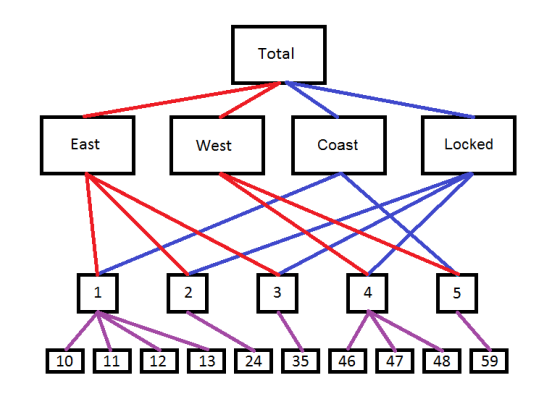
As we can see from the diagram, both the EAST + WEST set and the LOCKED + COAST set represent two different ways to regroup the five different regions (1=Atlantic, 2=Quebec, 3=Ontario, 4=Prairie, and 5=British Columbia). G-Confid only requires that the cells at the most detailed level of the hierarchy collectively represent the cell at the highest level of the hierarchy. We may regroup the intermediate levels in different ways, as we want. Moreover, if G-Confid detects that the cell at the highest level of the hierarchy is represented only by a subset of cells at the most detailed level of the hierarchy, G-Confid posts an error message in the log.
Now let’s write down the hierarchy. When describing the hierarchy in gconfid.sensitiv(), it is important to clarify each of the lines that appear in the above diagram. gconfid.sensitiv() needs to be able to link each of the categories to the grand total in order for everything to work properly. If a link is forgotten, The program stops running the code and displays an error message that several roots have been detected, when only one is allowed. To get a good grasp of the categories and the links between them in the hierarchy, it may be quite useful to prepare a diagram.
If we take the time to specify each of the coloured lines in our diagram, we obtain the code and results below. In this case, we added three clarifications compared to example 6: COAST and LOCKED sum to the total, COAST is made up of regions 1 and 5, and LOCKED is made up of regions 2, 3 and 4.
hierarchy_ex7="""TOT_REGION EAST WEST:
TOT_REGION COAST LOCKED:
EAST 1 2 3:
WEST 4 5:
COAST 1 5:
LOCKED 2 3 4:
1 10 11 12 13:
2 24:
3 35:
4 46 47 48:
5 59;
"""
example = gconfid.sensitiv(
indata=df,
outcell = "pandas",
outconstraint= "pandas",
s_rule="pq 0.1",
hierarchy=hierarchy_ex7,
unit_id="Entid",
var="Value",
dimension="Province"
)
pd.set_option('display.max_rows', None) # Show all rows
pd.set_option('display.max_columns', None) # Show all columns
example.outcell
| CellId | NbAnonym | AnonymTotalVar | NbRespondents | TotalVar | Sensitivity | Status | Type | TotalNoise | Province | |
|---|---|---|---|---|---|---|---|---|---|---|
| 0 | 1.0 | 0.0 | 0.0 | 10.0 | 6215.0 | -1697.4 | V | C | 6215.0 | 10 |
| 1 | 2.0 | 0.0 | 0.0 | 10.0 | 7352.0 | -1335.2 | V | C | 7352.0 | 11 |
| 2 | 3.0 | 0.0 | 0.0 | 10.0 | 16655.0 | -7179.7 | V | C | 16655.0 | 12 |
| 3 | 4.0 | 0.0 | 0.0 | 10.0 | 4617.0 | -564.2 | V | C | 4617.0 | 13 |
| 4 | 5.0 | 0.0 | 0.0 | 10.0 | 8118.0 | -1266.3 | V | C | 8118.0 | 24 |
| 5 | 6.0 | 0.0 | 0.0 | 10.0 | 7277.0 | -2093.3 | V | C | 7277.0 | 35 |
| 6 | 7.0 | 0.0 | 0.0 | 10.0 | 6545.0 | -1399.8 | V | C | 6545.0 | 46 |
| 7 | 8.0 | 0.0 | 0.0 | 10.0 | 8039.0 | -782.4 | V | C | 8039.0 | 47 |
| 8 | 9.0 | 0.0 | 0.0 | 10.0 | 4480.0 | -1077.3 | V | C | 4480.0 | 48 |
| 9 | 10.0 | 0.0 | 0.0 | 10.0 | 13384.0 | -5558.7 | V | C | 13384.0 | 59 |
| 10 | 11.0 | 0.0 | 0.0 | 100.0 | 82682.0 | -73053.3 | V | C | 82682.0 | TOT_REGION |
| 11 | 12.0 | 0.0 | 0.0 | 60.0 | 50234.0 | -40605.3 | V | C | 50234.0 | EAST |
| 12 | 13.0 | 0.0 | 0.0 | 40.0 | 32448.0 | -23749.4 | V | C | 32448.0 | WEST |
| 13 | 14.0 | 0.0 | 0.0 | 50.0 | 48223.0 | -38747.7 | V | C | 48223.0 | COAST |
| 14 | 15.0 | 0.0 | 0.0 | 50.0 | 34459.0 | -25117.3 | V | C | 34459.0 | LOCKED |
| 15 | 16.0 | 0.0 | 0.0 | 40.0 | 34839.0 | -25363.7 | V | C | 34839.0 | 1 |
| 16 | 17.0 | 0.0 | 0.0 | 10.0 | 8118.0 | -1266.3 | V | C | 8118.0 | 2 |
| 17 | 18.0 | 0.0 | 0.0 | 10.0 | 7277.0 | -2093.3 | V | C | 7277.0 | 3 |
| 18 | 19.0 | 0.0 | 0.0 | 30.0 | 19064.0 | -11276.4 | V | C | 19064.0 | 4 |
| 19 | 20.0 | 0.0 | 0.0 | 10.0 | 13384.0 | -5558.7 | V | C | 13384.0 | 5 |
Example 8: Summary example¶
This example combines the hierarchy concepts that previous examples already introduced. Suppose that, in addition to the request of our external client, the National Hockey League (NHL) has expressed interest in our project and has asked that at the direction level (EAST + WEST) we provide separate results for provinces with a NHL team separately from provinces that do not have an NHL team.
Each direction, EAST and WEST, is subdivided according to whether the provinces of each direction include NHL teams (Quebec, Ontario, Manitoba, Alberta, and British Columbia have NHL hockey teams). We therefore include four new subtotals in our hierarchy: E_TEAM, E_NOTEAM, W_TEAM, and W_NOTEAM. Now, the hierarchy for the province dimension will look like this:
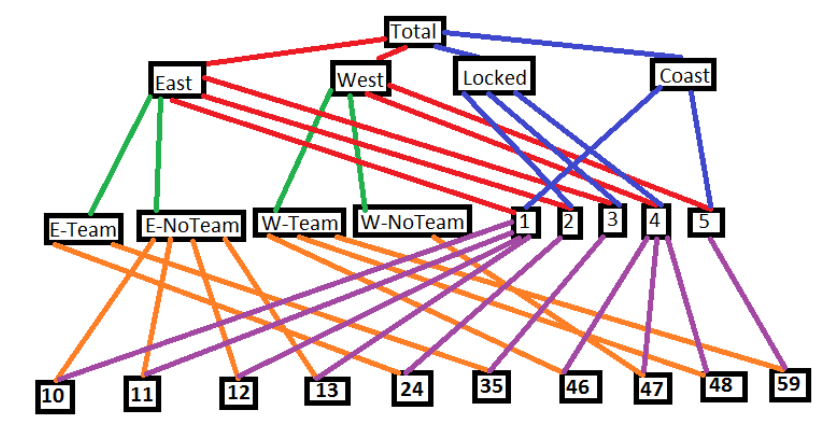
If we update the hierarchy for our province dimension and add the industry dimension (with categories A and B), we obtain the following code and results (the resulting Outcell file is only displayed in part):
hierarchy_ex8="""TOTAL EAST WEST:
TOTAL LOCKED COAST:
EAST 1 2 3:
EAST E_TEAM E_NOTEAM:
WEST 4 5:
WEST W_TEAM W_NOTEAM:
LOCKED 2 3 4:
COAST 1 5:
E_TEAM 24 35:
E_NOTEAM 10 11 12 13:
W_TEAM 46 48 59:
W_NOTEAM 47:
1 10 11 12 13:
2 24:
3 35:
4 46 47 48:
5 59;
IND_TOT A B;"""
example = gconfid.sensitiv(
indata=df,
outcell = "pandas",
outconstraint= "pandas",
s_rule="pq 0.1",
hierarchy=hierarchy_ex8,
unit_id="Entid",
var="Value",
dimension=" province industry"
)
example.outcell
| CellId | NbAnonym | AnonymTotalVar | NbRespondents | TotalVar | Sensitivity | Status | Type | TotalNoise | province | industry | |
|---|---|---|---|---|---|---|---|---|---|---|---|
| 0 | 1.0 | 0.0 | 0.0 | 5.0 | 3409.0 | -485.8 | V | C | 3409.0 | 10 | A |
| 1 | 2.0 | 0.0 | 0.0 | 5.0 | 2806.0 | 111.6 | S | C | 2806.0 | 10 | B |
| 2 | 3.0 | 0.0 | 0.0 | 5.0 | 4820.0 | -118.2 | V | C | 4820.0 | 11 | A |
| 3 | 4.0 | 0.0 | 0.0 | 5.0 | 2532.0 | 144.7 | S | C | 2532.0 | 11 | B |
| 4 | 5.0 | 0.0 | 0.0 | 5.0 | 3800.0 | 40.0 | S | C | 3800.0 | 12 | A |
| 5 | 6.0 | 0.0 | 0.0 | 5.0 | 12855.0 | -3379.7 | V | C | 12855.0 | 12 | B |
| 6 | 7.0 | 0.0 | 0.0 | 5.0 | 751.0 | -278.4 | V | C | 751.0 | 13 | A |
| 7 | 8.0 | 0.0 | 0.0 | 5.0 | 3866.0 | 186.8 | S | C | 3866.0 | 13 | B |
| 8 | 9.0 | 0.0 | 0.0 | 5.0 | 6227.0 | -401.3 | V | C | 6227.0 | 24 | A |
| 9 | 10.0 | 0.0 | 0.0 | 5.0 | 1891.0 | 170.6 | S | C | 1891.0 | 24 | B |
| 10 | 11.0 | 0.0 | 0.0 | 5.0 | 4262.0 | -614.7 | V | C | 4262.0 | 35 | A |
| 11 | 12.0 | 0.0 | 0.0 | 5.0 | 3015.0 | 230.7 | S | C | 3015.0 | 35 | B |
| 12 | 13.0 | 0.0 | 0.0 | 5.0 | 3323.0 | -555.3 | V | C | 3323.0 | 46 | A |
| 13 | 14.0 | 0.0 | 0.0 | 5.0 | 3222.0 | 248.2 | S | C | 3222.0 | 46 | B |
| 14 | 15.0 | 0.0 | 0.0 | 5.0 | 2769.0 | 182.1 | S | C | 2769.0 | 47 | A |
| 15 | 16.0 | 0.0 | 0.0 | 5.0 | 5270.0 | 360.6 | S | C | 5270.0 | 47 | B |
| 16 | 17.0 | 0.0 | 0.0 | 5.0 | 2630.0 | -318.9 | V | C | 2630.0 | 48 | A |
| 17 | 18.0 | 0.0 | 0.0 | 5.0 | 1850.0 | 47.7 | S | C | 1850.0 | 48 | B |
| 18 | 19.0 | 0.0 | 0.0 | 5.0 | 4402.0 | -536.7 | V | C | 4402.0 | 59 | A |
| 19 | 20.0 | 0.0 | 0.0 | 5.0 | 8982.0 | -1156.7 | V | C | 8982.0 | 59 | B |
| 20 | 21.0 | 0.0 | 0.0 | 100.0 | 82682.0 | -73053.3 | V | C | 82682.0 | TOTAL | IND_TOT |
| 21 | 22.0 | 0.0 | 0.0 | 60.0 | 50234.0 | -40605.3 | V | C | 50234.0 | EAST | IND_TOT |
| 22 | 23.0 | 0.0 | 0.0 | 40.0 | 32448.0 | -23749.4 | V | C | 32448.0 | WEST | IND_TOT |
| 23 | 24.0 | 0.0 | 0.0 | 50.0 | 34459.0 | -25117.3 | V | C | 34459.0 | LOCKED | IND_TOT |
| 24 | 25.0 | 0.0 | 0.0 | 50.0 | 48223.0 | -38747.7 | V | C | 48223.0 | COAST | IND_TOT |
| 25 | 26.0 | 0.0 | 0.0 | 50.0 | 36393.0 | -27529.3 | V | C | 36393.0 | TOTAL | A |
| 26 | 27.0 | 0.0 | 0.0 | 50.0 | 46289.0 | -36813.7 | V | C | 46289.0 | TOTAL | B |
| 27 | 28.0 | 0.0 | 0.0 | 30.0 | 23269.0 | -14405.3 | V | C | 23269.0 | EAST | A |
| 28 | 29.0 | 0.0 | 0.0 | 20.0 | 13124.0 | -7608.7 | V | C | 13124.0 | WEST | A |
| 29 | 30.0 | 0.0 | 0.0 | 25.0 | 19211.0 | -11634.3 | V | C | 19211.0 | LOCKED | A |
| 30 | 31.0 | 0.0 | 0.0 | 25.0 | 17182.0 | -9972.2 | V | C | 17182.0 | COAST | A |
| 31 | 32.0 | 0.0 | 0.0 | 30.0 | 26965.0 | -17489.7 | V | C | 26965.0 | EAST | B |
| 32 | 33.0 | 0.0 | 0.0 | 20.0 | 19324.0 | -10625.4 | V | C | 19324.0 | WEST | B |
| 33 | 34.0 | 0.0 | 0.0 | 25.0 | 15248.0 | -7460.4 | V | C | 15248.0 | LOCKED | B |
| 34 | 35.0 | 0.0 | 0.0 | 25.0 | 31041.0 | -21565.7 | V | C | 31041.0 | COAST | B |
| 35 | 36.0 | 0.0 | 0.0 | 40.0 | 34839.0 | -25363.7 | V | C | 34839.0 | 1 | IND_TOT |
| 36 | 37.0 | 0.0 | 0.0 | 10.0 | 8118.0 | -1266.3 | V | C | 8118.0 | 2 | IND_TOT |
| 37 | 38.0 | 0.0 | 0.0 | 10.0 | 7277.0 | -2093.3 | V | C | 7277.0 | 3 | IND_TOT |
| 38 | 39.0 | 0.0 | 0.0 | 20.0 | 15395.0 | -7712.3 | V | C | 15395.0 | E_TEAM | IND_TOT |
| 39 | 40.0 | 0.0 | 0.0 | 40.0 | 34839.0 | -25363.7 | V | C | 34839.0 | E_NOTEAM | IND_TOT |
| 40 | 41.0 | 0.0 | 0.0 | 20.0 | 12780.0 | -5570.2 | V | C | 12780.0 | 1 | A |
| 41 | 42.0 | 0.0 | 0.0 | 5.0 | 6227.0 | -401.3 | V | C | 6227.0 | 2 | A |
| 42 | 43.0 | 0.0 | 0.0 | 5.0 | 4262.0 | -614.7 | V | C | 4262.0 | 3 | A |
| 43 | 44.0 | 0.0 | 0.0 | 10.0 | 10489.0 | -3160.3 | V | C | 10489.0 | E_TEAM | A |
| 44 | 45.0 | 0.0 | 0.0 | 20.0 | 12780.0 | -5570.2 | V | C | 12780.0 | E_NOTEAM | A |
| 45 | 46.0 | 0.0 | 0.0 | 20.0 | 22059.0 | -12583.7 | V | C | 22059.0 | 1 | B |
| 46 | 47.0 | 0.0 | 0.0 | 5.0 | 1891.0 | 170.6 | S | C | 1891.0 | 2 | B |
| 47 | 48.0 | 0.0 | 0.0 | 5.0 | 3015.0 | 230.7 | S | C | 3015.0 | 3 | B |
| 48 | 49.0 | 0.0 | 0.0 | 10.0 | 4906.0 | -199.3 | V | C | 4906.0 | E_TEAM | B |
| 49 | 50.0 | 0.0 | 0.0 | 20.0 | 22059.0 | -12583.7 | V | C | 22059.0 | E_NOTEAM | B |
| 50 | 51.0 | 0.0 | 0.0 | 10.0 | 6215.0 | -1697.4 | V | C | 6215.0 | 10 | IND_TOT |
| 51 | 52.0 | 0.0 | 0.0 | 10.0 | 7352.0 | -1335.2 | V | C | 7352.0 | 11 | IND_TOT |
| 52 | 53.0 | 0.0 | 0.0 | 10.0 | 16655.0 | -7179.7 | V | C | 16655.0 | 12 | IND_TOT |
| 53 | 54.0 | 0.0 | 0.0 | 10.0 | 4617.0 | -564.2 | V | C | 4617.0 | 13 | IND_TOT |
| 54 | 55.0 | 0.0 | 0.0 | 10.0 | 8118.0 | -1266.3 | V | C | 8118.0 | 24 | IND_TOT |
| 55 | 56.0 | 0.0 | 0.0 | 10.0 | 7277.0 | -2093.3 | V | C | 7277.0 | 35 | IND_TOT |
| 56 | 57.0 | 0.0 | 0.0 | 30.0 | 19064.0 | -11276.4 | V | C | 19064.0 | 4 | IND_TOT |
| 57 | 58.0 | 0.0 | 0.0 | 10.0 | 13384.0 | -5558.7 | V | C | 13384.0 | 5 | IND_TOT |
| 58 | 59.0 | 0.0 | 0.0 | 30.0 | 24409.0 | -16583.7 | V | C | 24409.0 | W_TEAM | IND_TOT |
| 59 | 60.0 | 0.0 | 0.0 | 10.0 | 8039.0 | -782.4 | V | C | 8039.0 | W_NOTEAM | IND_TOT |
| 60 | 61.0 | 0.0 | 0.0 | 15.0 | 8722.0 | -4160.9 | V | C | 8722.0 | 4 | A |
| 61 | 62.0 | 0.0 | 0.0 | 5.0 | 4402.0 | -536.7 | V | C | 4402.0 | 5 | A |
| 62 | 63.0 | 0.0 | 0.0 | 15.0 | 10355.0 | -5593.7 | V | C | 10355.0 | W_TEAM | A |
| 63 | 64.0 | 0.0 | 0.0 | 5.0 | 2769.0 | 182.1 | S | C | 2769.0 | W_NOTEAM | A |
| 64 | 65.0 | 0.0 | 0.0 | 15.0 | 10342.0 | -2554.4 | V | C | 10342.0 | 4 | B |
| 65 | 66.0 | 0.0 | 0.0 | 5.0 | 8982.0 | -1156.7 | V | C | 8982.0 | 5 | B |
| 66 | 67.0 | 0.0 | 0.0 | 15.0 | 14054.0 | -6228.7 | V | C | 14054.0 | W_TEAM | B |
| 67 | 68.0 | 0.0 | 0.0 | 5.0 | 5270.0 | 360.6 | S | C | 5270.0 | W_NOTEAM | B |
| 68 | 69.0 | 0.0 | 0.0 | 10.0 | 6545.0 | -1399.8 | V | C | 6545.0 | 46 | IND_TOT |
| 69 | 70.0 | 0.0 | 0.0 | 10.0 | 8039.0 | -782.4 | V | C | 8039.0 | 47 | IND_TOT |
| 70 | 71.0 | 0.0 | 0.0 | 10.0 | 4480.0 | -1077.3 | V | C | 4480.0 | 48 | IND_TOT |
| 71 | 72.0 | 0.0 | 0.0 | 10.0 | 13384.0 | -5558.7 | V | C | 13384.0 | 59 | IND_TOT |
2.4 Aggregates¶
In the series of examples of 2.2 Sensitivity rules, we saw that sensitive aggregates appear in Outcell output files. We will now show what these aggregates are and how to identify them.
An aggregate is the union of two or more cells sharing common values for all but one of the classification variables. In other words, an aggregate is a set of cells that appear in the same row or column of a table. In the table below, the cells highlighted in red are an example of an aggregate (of course, there are other aggregates possible in this table!):
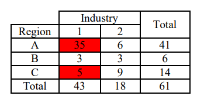
When we run gconfid.sensitiv(), G-Confid looks at the different possible combinations of aggregates and predicts in the outcell table whether there are any sensitive aggregates. We can imagine different scenarios where sensitive aggregates may be found. We will look at three simple examples to show situations in which this may occur. Each example is based on a different data file.
Example 1¶
Our first example shows a case where enterprise S2 has contributed to two cells (A and B) on the same line of our table, and one of these two cells is sensitive. The first step is to create the data file:
data = {"Entid": ['S1', 'S2', 'S3', 'S2', 'S4',
'S5', 'S6', 'S7', 'S8'],
"Region" : ['A', 'A', 'A', 'B', 'B',
'B', 'C', 'C', 'C'],
"Value" : [100, 50, 4, 20, 5,
4, 20, 5, 4]}
df = pd.DataFrame(data)
df
| Entid | Region | Value | |
|---|---|---|---|
| 0 | S1 | A | 100 |
| 1 | S2 | A | 50 |
| 2 | S3 | A | 4 |
| 3 | S2 | B | 20 |
| 4 | S4 | B | 5 |
| 5 | S5 | B | 4 |
| 6 | S6 | C | 20 |
| 7 | S7 | C | 5 |
| 8 | S8 | C | 4 |
We see that S2 is the second largest contributor in region A and the largest contributor in region B. The other contributors are all different.
We will now show what happens when we run gconfid.sensitiv() with a p-percent rule where p=0.15. Both outcell and outconstraint output tables are both important to fully understand the situation.
example = gconfid.sensitiv(
indata=df,
outcell = "pandas",
outconstraint= "pandas",
s_rule="pq 0.15",
hierarchy="TOT_REGION A B C;",
unit_id="Entid",
var="Value",
dimension="Region"
)
example.outcell
| CellId | NbAnonym | AnonymTotalVar | NbRespondents | TotalVar | Sensitivity | Status | Type | TotalNoise | Region | |
|---|---|---|---|---|---|---|---|---|---|---|
| 0 | 1.0 | 0.0 | 0.0 | 3.0 | 154.0 | 11.0 | S | C | 154.0 | A |
| 1 | 2.0 | 0.0 | 0.0 | 3.0 | 29.0 | -1.0 | V | C | 29.0 | B |
| 2 | 3.0 | 0.0 | 0.0 | 3.0 | 29.0 | -1.0 | V | C | 29.0 | C |
| 3 | 4.0 | 0.0 | 0.0 | 8.0 | 212.0 | -27.0 | V | C | 212.0 | TOT_REGION |
| 4 | 5.0 | 0.0 | 0.0 | 5.0 | 183.0 | 2.0 | S | A | 183.0 |
example.outconstraint
| ConstraintId | CellId | Coefficient | |
|---|---|---|---|
| 0 | 1.0 | 1.0 | 1.0 |
| 1 | 1.0 | 2.0 | 1.0 |
| 2 | 1.0 | 3.0 | 1.0 |
| 3 | 1.0 | 4.0 | -1.0 |
| 4 | 2.0 | 1.0 | 1.0 |
| 5 | 2.0 | 2.0 | 1.0 |
| 6 | 2.0 | 5.0 | -1.0 |
In the outcell table, there is a cell with Type="A". This is the sensitive aggregate. If we look at the outcell file only, we cannot tell which cells make up the sensitive aggregate. We need to look at the outconstraint table to get the answer. This latter file indicates the relationships between cells
In outconstraint, every ConstraintId represents a linear constraint and the CellId variable is a number assigned to each of the cells, including the aggregates. The numbering of the CellId variable in outconstraint matches that of the CellIdvariable in the outcell file. For each constraint, the sum of the cells with a coefficient of 1 must equal the cell with a coefficient of -1. So, we have two linear constraints described below:
- The sum of cells 1, 2 and 3 is equal to cell 4. If we look at the
CellIdvalues in the outcell table, we see thatCellId= 1, 2 and 3 correspond respectively to the values of regions A, B and C, whileCellId= 4 is the cell corresponding to the total (named “TOT_REGION”). This linear constraint states that if we add regions A, B and C, we should obtain our total. - The second linear constraint indicates that the sum of cells 1 and 2 is equal to cell 5. In other words, our aggregate (cell 5) consists of the sum of cells A and B
If S1 is the target and S2 is the intruder, we can verify the calculation of the aggregate sensitivity by:
$$ S_{AB} = 0.15 \cdot 100 - 5 - 4 - 4 =2 $$
Example 2¶
Our second example deals with two sensitive cells (A and B), each of which has only one respondent. This is a typical example where sensitive cells cannot protect each other.
data = {"Entid": ['S1', 'S2', 'S6', 'S7', 'S8'],
"Region" : ['A', 'B', 'C', 'C', 'C'],
"Value" : [80, 40, 20, 5, 4]}
df = pd.DataFrame(data)
df
| Entid | Region | Value | |
|---|---|---|---|
| 0 | S1 | A | 80 |
| 1 | S2 | B | 40 |
| 2 | S6 | C | 20 |
| 3 | S7 | C | 5 |
| 4 | S8 | C | 4 |
Once again applying a p-percent rule where p=0.15, we obtain the following results:
example = gconfid.sensitiv(
indata=df,
outcell = "pandas",
outconstraint= "pandas",
s_rule="pq 0.15",
hierarchy="TOT_REGION A B C;",
unit_id="Entid",
var="Value",
dimension="Region"
)
example.outcell
| CellId | NbAnonym | AnonymTotalVar | NbRespondents | TotalVar | Sensitivity | Status | Type | TotalNoise | Region | |
|---|---|---|---|---|---|---|---|---|---|---|
| 0 | 1.0 | 0.0 | 0.0 | 1.0 | 80.0 | 12.0 | S | C | 80.0 | A |
| 1 | 2.0 | 0.0 | 0.0 | 1.0 | 40.0 | 6.0 | S | C | 40.0 | B |
| 2 | 3.0 | 0.0 | 0.0 | 3.0 | 29.0 | -1.0 | V | C | 29.0 | C |
| 3 | 4.0 | 0.0 | 0.0 | 5.0 | 149.0 | -17.0 | V | C | 149.0 | TOT_REGION |
| 4 | 5.0 | 0.0 | 0.0 | 2.0 | 120.0 | 12.0 | S | A | 120.0 |
example.outconstraint
| ConstraintId | CellId | Coefficient | |
|---|---|---|---|
| 0 | 1.0 | 1.0 | 1.0 |
| 1 | 1.0 | 2.0 | 1.0 |
| 2 | 1.0 | 3.0 | 1.0 |
| 3 | 1.0 | 4.0 | -1.0 |
| 4 | 2.0 | 1.0 | 1.0 |
| 5 | 2.0 | 2.0 | 1.0 |
| 6 | 2.0 | 5.0 | -1.0 |
We see in the outcell table that cells A and B are sensitive and there is also a sensitive aggregate. According to the outconstraint file, the sensitive aggregate consists of cells A and B.
As mentioned above, cells A and B cannot mutually protect each other. In other words, suppressing cells A and B is not enough to ensure confidentiality. If we know the total of (A+B), S1 can guess the revenue of enterprise S2 and vice versa. That is why we need to protect not only A and B, but also (A+B). If S2 is the intruder, the sensitivity calculation is as follows for aggregate (A+B):
$$ S_{AB} = 0.15 \cdot 80 = 12 $$
Example 3¶
This final example shows a situation where the largest respondent for cell B is the second largest respondent for the aggregate (A+B), while cell A is sensitive
data = {"Entid": ['S1', 'S2', 'S3', 'S4', 'S5',
'S6', 'S7', 'S8', 'S9'],
"Region" : ['A', 'A', 'A', 'B', 'B',
'B', 'C', 'C', 'C'],
"Value" : [100, 3, 1, 20, 5,
4, 20, 12, 4]}
df = pd.DataFrame(data)
df
| Entid | Region | Value | |
|---|---|---|---|
| 0 | S1 | A | 100 |
| 1 | S2 | A | 3 |
| 2 | S3 | A | 1 |
| 3 | S4 | B | 20 |
| 4 | S5 | B | 5 |
| 5 | S6 | B | 4 |
| 6 | S7 | C | 20 |
| 7 | S8 | C | 12 |
| 8 | S9 | C | 4 |
example = gconfid.sensitiv(
indata=df,
outcell = "pandas",
outconstraint= "pandas",
s_rule="pq 0.15",
hierarchy="TOT_REGION A B C;",
unit_id="Entid",
var="Value",
dimension="Region"
)
example.outcell
| CellId | NbAnonym | AnonymTotalVar | NbRespondents | TotalVar | Sensitivity | Status | Type | TotalNoise | Region | |
|---|---|---|---|---|---|---|---|---|---|---|
| 0 | 1.0 | 0.0 | 0.0 | 3.0 | 104.0 | 14.0 | S | C | 104.0 | A |
| 1 | 2.0 | 0.0 | 0.0 | 3.0 | 29.0 | -1.0 | V | C | 29.0 | B |
| 2 | 3.0 | 0.0 | 0.0 | 3.0 | 36.0 | -1.0 | V | C | 36.0 | C |
| 3 | 4.0 | 0.0 | 0.0 | 9.0 | 169.0 | -34.0 | V | C | 169.0 | TOT_REGION |
| 4 | 5.0 | 0.0 | 0.0 | 6.0 | 133.0 | 2.0 | S | A | 133.0 |
example.outconstraint
| ConstraintId | CellId | Coefficient | |
|---|---|---|---|
| 0 | 1.0 | 1.0 | 1.0 |
| 1 | 1.0 | 2.0 | 1.0 |
| 2 | 1.0 | 3.0 | 1.0 |
| 3 | 1.0 | 4.0 | -1.0 |
| 4 | 2.0 | 1.0 | 1.0 |
| 5 | 2.0 | 2.0 | 1.0 |
| 6 | 2.0 | 5.0 | -1.0 |
In this example, enterprise S1 in cell A is at risk of being disclosed. S1 is also at risk of being disclosed if we know the total of (A+B). Therefore, we need to protect not only A, but also (A+B).
If S4 is the intruder, the sensitivity calculation is as follows for our aggregate:
$$ S = 0.15 \cdot 100 -5-4-3-1 = 2 $$
2.5 Waivers¶
When an enterprise contributes significantly to the total of a cell that we want to publish, then the cell cannot be published without compromising the confidentiality of the data for this enterprise. To get around this problem, we can request a waiver from the enterprise, i.e., the enterprise agrees that all or part of the data it produces for this survey are no longer considered confidential. The purpose of such an exercise is to be able to publish the cell(s) of interest in the results table. G-Confid protects the confidentiality of all the other enterprises contributing to the cell.
import pandas as pd
# Define the data using a dictionary
data = {
'Entid': ['111', '002', '003', '004', '111', '111', '007', '008', '009', '010', '011', '012',
'111', '111', '015', '016', '017', '018', '019', '020', '021', '022', '022', '024', '025'],
'Industry': ['A', 'A', 'A', 'A', 'A', 'A', 'A', 'A', 'A', 'A', 'A', 'A',
'B', 'B', 'B', 'B', 'B', 'B', 'B', 'B', 'B', 'B', 'B', 'B', 'B'],
'Region': ['1', '1', '1', '1', '2', '2', '2', '2', '2', '3', '3', '3',
'1', '1', '1', '1', '1', '2', '2', '2', '2', '3', '3', '3', '3'],
'value': [720, 700, 40, 20, 290, 200, 25, 15, 10, 60, 50, 40,
450, 270, 60, 40, 30, 6, 4, 3, 2, 90, 80, 75, 70],
'wafl_1': [1, 0, 0, 0, 1, 1, 0, 0, 0, 0, 0, 0,
1, 1, 0, 0, 0, 0, 0, 0, 0, 0, 0, 0, 0],
'wafl_2': [1, 1, 0, 0, 1, 1, 0, 0, 0, 0, 0, 0,
1, 1, 0, 0, 0, 0, 0, 0, 0, 0, 0, 0, 0],
'wafl_3': [0, 1, 0, 0, 0, 0, 0, 0, 0, 0, 0, 0,
0, 0, 0, 0, 0, 0, 0, 0, 0, 0, 0, 0, 0],
'wafl_4': [1, 1, 0, 0, 0, 0, 0, 0, 0, 0, 0, 0,
1, 1, 0, 0, 0, 0, 0, 0, 0, 0, 0, 0, 0],
}
# Create the DataFrame
df = pd.DataFrame(data)
# Display the DataFrame
df
| Entid | Industry | Region | value | wafl_1 | wafl_2 | wafl_3 | wafl_4 | |
|---|---|---|---|---|---|---|---|---|
| 0 | 111 | A | 1 | 720 | 1 | 1 | 0 | 1 |
| 1 | 002 | A | 1 | 700 | 0 | 1 | 1 | 1 |
| 2 | 003 | A | 1 | 40 | 0 | 0 | 0 | 0 |
| 3 | 004 | A | 1 | 20 | 0 | 0 | 0 | 0 |
| 4 | 111 | A | 2 | 290 | 1 | 1 | 0 | 0 |
| 5 | 111 | A | 2 | 200 | 1 | 1 | 0 | 0 |
| 6 | 007 | A | 2 | 25 | 0 | 0 | 0 | 0 |
| 7 | 008 | A | 2 | 15 | 0 | 0 | 0 | 0 |
| 8 | 009 | A | 2 | 10 | 0 | 0 | 0 | 0 |
| 9 | 010 | A | 3 | 60 | 0 | 0 | 0 | 0 |
| 10 | 011 | A | 3 | 50 | 0 | 0 | 0 | 0 |
| 11 | 012 | A | 3 | 40 | 0 | 0 | 0 | 0 |
| 12 | 111 | B | 1 | 450 | 1 | 1 | 0 | 1 |
| 13 | 111 | B | 1 | 270 | 1 | 1 | 0 | 1 |
| 14 | 015 | B | 1 | 60 | 0 | 0 | 0 | 0 |
| 15 | 016 | B | 1 | 40 | 0 | 0 | 0 | 0 |
| 16 | 017 | B | 1 | 30 | 0 | 0 | 0 | 0 |
| 17 | 018 | B | 2 | 6 | 0 | 0 | 0 | 0 |
| 18 | 019 | B | 2 | 4 | 0 | 0 | 0 | 0 |
| 19 | 020 | B | 2 | 3 | 0 | 0 | 0 | 0 |
| 20 | 021 | B | 2 | 2 | 0 | 0 | 0 | 0 |
| 21 | 022 | B | 3 | 90 | 0 | 0 | 0 | 0 |
| 22 | 022 | B | 3 | 80 | 0 | 0 | 0 | 0 |
| 23 | 024 | B | 3 | 75 | 0 | 0 | 0 | 0 |
| 24 | 025 | B | 3 | 70 | 0 | 0 | 0 | 0 |
Example 0 – Results without a waive¶
To begin, let’s calculate the sensitivity with the assumption that no waivers will be obtained for our data file. In the next few examples, we will look at different scenarios where there are waivers, while keeping the same parameters in gconfid.sensitiv(), so that we can make an effective comparison. If there are no waivers, we obtain the following results:
example = gconfid.sensitiv(
indata=df,
outcell = "pandas",
outconstraint= "pandas",
s_rule="pq 0.1",
hierarchy="TOT_INDUSTRY A B; TOT_REGION 1 2 3;",
unit_id="Entid",
var="Value",
dimension="Industry Region"
)
example.outcell
| CellId | NbAnonym | AnonymTotalVar | NbRespondents | TotalVar | Sensitivity | Status | Type | TotalNoise | Industry | Region | |
|---|---|---|---|---|---|---|---|---|---|---|---|
| 0 | 1.0 | 0.0 | 0.0 | 4.0 | 1480.0 | 12.0 | S | C | 1480.0 | A | 1 |
| 1 | 2.0 | 0.0 | 0.0 | 4.0 | 540.0 | 24.0 | S | C | 540.0 | A | 2 |
| 2 | 3.0 | 0.0 | 0.0 | 3.0 | 150.0 | -34.0 | V | C | 150.0 | A | 3 |
| 3 | 4.0 | 0.0 | 0.0 | 4.0 | 850.0 | 2.0 | S | C | 850.0 | B | 1 |
| 4 | 5.0 | 0.0 | 0.0 | 4.0 | 15.0 | -4.4 | V | C | 15.0 | B | 2 |
| 5 | 6.0 | 0.0 | 0.0 | 3.0 | 315.0 | -53.0 | V | C | 315.0 | B | 3 |
| 6 | 7.0 | 0.0 | 0.0 | 20.0 | 3350.0 | -527.0 | V | C | 3350.0 | TOT_INDUSTRY | TOT_REGION |
| 7 | 8.0 | 0.0 | 0.0 | 10.0 | 2170.0 | -139.0 | V | C | 2170.0 | A | TOT_REGION |
| 8 | 9.0 | 0.0 | 0.0 | 11.0 | 1180.0 | -218.0 | V | C | 1180.0 | B | TOT_REGION |
| 9 | 10.0 | 0.0 | 0.0 | 7.0 | 2330.0 | -46.0 | V | C | 2330.0 | TOT_INDUSTRY | 1 |
| 10 | 11.0 | 0.0 | 0.0 | 8.0 | 555.0 | 9.0 | S | C | 555.0 | TOT_INDUSTRY | 2 |
| 11 | 12.0 | 0.0 | 0.0 | 6.0 | 465.0 | -203.0 | V | C | 465.0 | TOT_INDUSTRY | 3 |
| 12 | 13.0 | 0.0 | 0.0 | 7.0 | 2020.0 | 11.0 | S | A | 2020.0 |
We see that there are several sensitive cells due to enterprise 111, which is a significant contributor in some domains.
Example 1 - Waiver from one enterprise¶
Since enterprise 111 is a significant contributor to our problem cells, we will look at what happens when we obtain a waiver from this enterprise. This scenario is represented by the variable wafl_1, where there is a ‘1’ for the contributions from enterprise 111 and a ‘0’ otherwise. The following code is indicated in gconfid.sensitiv()
example = gconfid.sensitiv(
indata=df,
outcell = "pandas",
outconstraint= "pandas",
s_rule="pq 0.1",
hierarchy="TOT_INDUSTRY A B; TOT_REGION 1 2 3;",
unit_id="Entid",
var="Value",
dimension="Industry Region",
waiver = "wafl_1"
)
example.outcell
| CellId | NbAnonym | AnonymTotalVar | NbRespondents | TotalVar | Sensitivity | Status | Type | TotalNoise | SensitivityBeforeWaivers | FavCost | Industry | Region | |
|---|---|---|---|---|---|---|---|---|---|---|---|---|---|
| 0 | 1.0 | 0.0 | 0.0 | 4.0 | 1480.0 | 10.0 | S | C | 1480.0 | 12.0 | 1480.0 | A | 1 |
| 1 | 2.0 | 0.0 | 0.0 | 4.0 | 540.0 | -22.5 | V | C | 540.0 | 24.0 | 2170.0 | A | 2 |
| 2 | 3.0 | 0.0 | 0.0 | 3.0 | 150.0 | -34.0 | V | C | 150.0 | -34.0 | 150.0 | A | 3 |
| 3 | 4.0 | 0.0 | 0.0 | 4.0 | 850.0 | -64.0 | V | C | 850.0 | 2.0 | 2330.0 | B | 1 |
| 4 | 5.0 | 0.0 | 0.0 | 4.0 | 15.0 | -4.4 | V | C | 15.0 | -4.4 | 15.0 | B | 2 |
| 5 | 6.0 | 0.0 | 0.0 | 3.0 | 315.0 | -53.0 | V | C | 315.0 | -53.0 | 315.0 | B | 3 |
| 6 | 7.0 | 0.0 | 0.0 | 20.0 | 3350.0 | -650.0 | V | C | 3350.0 | -527.0 | 3350.0 | TOT_INDUSTRY | TOT_REGION |
| 7 | 8.0 | 0.0 | 0.0 | 10.0 | 2170.0 | -190.0 | V | C | 2170.0 | -139.0 | 2170.0 | A | TOT_REGION |
| 8 | 9.0 | 0.0 | 0.0 | 11.0 | 1180.0 | -273.0 | V | C | 1180.0 | -218.0 | 1180.0 | B | TOT_REGION |
| 9 | 10.0 | 0.0 | 0.0 | 7.0 | 2330.0 | -120.0 | V | C | 2330.0 | -46.0 | 2330.0 | TOT_INDUSTRY | 1 |
| 10 | 11.0 | 0.0 | 0.0 | 8.0 | 555.0 | -37.5 | V | C | 555.0 | 9.0 | 555.0 | TOT_INDUSTRY | 2 |
| 11 | 12.0 | 0.0 | 0.0 | 6.0 | 465.0 | -203.0 | V | C | 465.0 | -203.0 | 465.0 | TOT_INDUSTRY | 3 |
In the Outcell file, we see that with the waiver from enterprise 111, there is only one sensitive cell left (Industry= "A", Region= "1").
Two new variables appear in the outcell table: SensitivityBeforeWaivers and FavCost. As its name indicates, the SensitivityBeforeWaivers variable gives us results for sensitivity calculations without accounting for waivers. This corresponds to the sensitivity calculation results found in example 0. On the other hand, FavCost is an experimental variable for the gconfid.Suppression, but it is still in development, so its use is not recommended at the moment.
We will now try to better understand the impact of the waiver on the sensitivity in cell "Industry=A, Region=1". Without the waiver, we end up with the following roles, which lead to the sensitivity calculation shown below:
| Entid | Value | Role |
|---|---|---|
| 111 | 720 | Target |
| 2 | 700 | Intruder/Suspect |
| 3 | 40 | Noise |
| 4 | 20 | Noise |
$$ S = 0.1 \times 720 - 40 - 20 = 12 $$
Once we obtain a waiver from enterprise 111, its information is no longer considered to be confidential and therefore no longer needs to be protected. When the cell total is published, enterprise 2 becomes the one with the highest risk of disclosure. That is why it now becomes the target in the sensitivity calculation. In this case, enterprise 111 becomes the intruder, since it is now the one that can most easily estimate the revenue of enterprise 2, by subtracting its own value from the cell total. Taking into account these role changes, sensitivity drops to a value of 10.
| Entid | Value | Role |
|---|---|---|
| 111 | 720 | Intruder/Suspect |
| 2 | 700 | Target |
| 3 | 40 | Noise |
| 4 | 20 | Noise |
$$ S = 0.1 \times 700 - 40 - 20 = 10 $$
Example 2 – Waiver from two enterprises¶
In the previous example, we saw that all of the cells in the table that we wanted to publish were protected except for one: the cell for industry A in region 1. In addition to enterprise 111, this cell also includes enterprise 2, which contributed significantly to the cell total. Obtaining a waiver from both enterprise 111 and enterprise 2 could enable us to publish the cell. This is what is presented in the scenario for variable wafl_2.
example = gconfid.sensitiv(
indata=df,
outcell = "pandas",
outconstraint= "pandas",
s_rule="pq 0.1",
hierarchy="TOT_INDUSTRY A B; TOT_REGION 1 2 3;",
unit_id="Entid",
var="Value",
dimension="Industry Region",
waiver = "wafl_2"
)
example.outcell
| CellId | NbAnonym | AnonymTotalVar | NbRespondents | TotalVar | Sensitivity | Status | Type | TotalNoise | SensitivityBeforeWaivers | FavCost | Industry | Region | |
|---|---|---|---|---|---|---|---|---|---|---|---|---|---|
| 0 | 1.0 | 0.0 | 0.0 | 4.0 | 1480.0 | -716.0 | V | C | 1480.0 | 12.0 | 2330.0 | A | 1 |
| 1 | 2.0 | 0.0 | 0.0 | 4.0 | 540.0 | -22.5 | V | C | 540.0 | 24.0 | 2170.0 | A | 2 |
| 2 | 3.0 | 0.0 | 0.0 | 3.0 | 150.0 | -34.0 | V | C | 150.0 | -34.0 | 150.0 | A | 3 |
| 3 | 4.0 | 0.0 | 0.0 | 4.0 | 850.0 | -64.0 | V | C | 850.0 | 2.0 | 2330.0 | B | 1 |
| 4 | 5.0 | 0.0 | 0.0 | 4.0 | 15.0 | -4.4 | V | C | 15.0 | -4.4 | 15.0 | B | 2 |
| 5 | 6.0 | 0.0 | 0.0 | 3.0 | 315.0 | -53.0 | V | C | 315.0 | -53.0 | 315.0 | B | 3 |
| 6 | 7.0 | 0.0 | 0.0 | 20.0 | 3350.0 | -1233.0 | V | C | 3350.0 | -527.0 | 3350.0 | TOT_INDUSTRY | TOT_REGION |
| 7 | 8.0 | 0.0 | 0.0 | 10.0 | 2170.0 | -894.0 | V | C | 2170.0 | -139.0 | 2170.0 | A | TOT_REGION |
| 8 | 9.0 | 0.0 | 0.0 | 11.0 | 1180.0 | -273.0 | V | C | 1180.0 | -218.0 | 1180.0 | B | TOT_REGION |
| 9 | 10.0 | 0.0 | 0.0 | 7.0 | 2330.0 | -824.0 | V | C | 2330.0 | -46.0 | 2330.0 | TOT_INDUSTRY | 1 |
| 10 | 11.0 | 0.0 | 0.0 | 8.0 | 555.0 | -37.5 | V | C | 555.0 | 9.0 | 555.0 | TOT_INDUSTRY | 2 |
| 11 | 12.0 | 0.0 | 0.0 | 6.0 | 465.0 | -203.0 | V | C | 465.0 | -203.0 | 465.0 | TOT_INDUSTRY | 3 |
We will now show what happens in terms of calculating the sensitivity for cell "Industry=A, Region=1". Since the two largest enterprises (111 and 2) no longer need to be protected, enterprise 3 is now the most at risk of being disclosed and becomes the target. Enterprise 111 is now the intruder since it can most easily estimate the revenue of enterprise 3 by subtracting its own contribution from the cell total. In this situation, enterprise 2 produces a lot of noise (protection) for enterprise 3, which means that the sensitivity is now negative. Using the two waivers therefore enables us to publish the cell total.
| Entid | Value | Role |
|---|---|---|
| 111 | 720 | Intruder/Suspect |
| 2 | 700 | Noise |
| 3 | 40 | Target |
| 4 | 20 | Noise |
$$ S = 0.1 \times 40 - 700 - 20 = -716 $$
Example 3 – Waiver with no impac¶
Up to now, we have looked at situations where the enterprises contributing the most to a cell have produced a waiver. Now let’s imagine a scenario where a waiver is obtained from enterprise 2, but not from enterprise 111. This scenario is presented in the variable wafl_3.
example = gconfid.sensitiv(
indata=df,
outcell = "pandas",
outconstraint= "pandas",
s_rule="pq 0.1",
hierarchy="TOT_INDUSTRY A B; TOT_REGION 1 2 3;",
unit_id="Entid",
var="Value",
dimension="Industry Region",
waiver = "wafl_3"
)
example.outcell
| CellId | NbAnonym | AnonymTotalVar | NbRespondents | TotalVar | Sensitivity | Status | Type | TotalNoise | SensitivityBeforeWaivers | FavCost | Industry | Region | |
|---|---|---|---|---|---|---|---|---|---|---|---|---|---|
| 0 | 1.0 | 0.0 | 0.0 | 4.0 | 1480.0 | 12.0 | S | C | 1480.0 | 12.0 | 1480.0 | A | 1 |
| 1 | 2.0 | 0.0 | 0.0 | 4.0 | 540.0 | 24.0 | S | C | 540.0 | 24.0 | 540.0 | A | 2 |
| 2 | 3.0 | 0.0 | 0.0 | 3.0 | 150.0 | -34.0 | V | C | 150.0 | -34.0 | 150.0 | A | 3 |
| 3 | 4.0 | 0.0 | 0.0 | 4.0 | 850.0 | 2.0 | S | C | 850.0 | 2.0 | 850.0 | B | 1 |
| 4 | 5.0 | 0.0 | 0.0 | 4.0 | 15.0 | -4.4 | V | C | 15.0 | -4.4 | 15.0 | B | 2 |
| 5 | 6.0 | 0.0 | 0.0 | 3.0 | 315.0 | -53.0 | V | C | 315.0 | -53.0 | 315.0 | B | 3 |
| 6 | 7.0 | 0.0 | 0.0 | 20.0 | 3350.0 | -527.0 | V | C | 3350.0 | -527.0 | 3350.0 | TOT_INDUSTRY | TOT_REGION |
| 7 | 8.0 | 0.0 | 0.0 | 10.0 | 2170.0 | -139.0 | V | C | 2170.0 | -139.0 | 2170.0 | A | TOT_REGION |
| 8 | 9.0 | 0.0 | 0.0 | 11.0 | 1180.0 | -218.0 | V | C | 1180.0 | -218.0 | 1180.0 | B | TOT_REGION |
| 9 | 10.0 | 0.0 | 0.0 | 7.0 | 2330.0 | -46.0 | V | C | 2330.0 | -46.0 | 2330.0 | TOT_INDUSTRY | 1 |
| 10 | 11.0 | 0.0 | 0.0 | 8.0 | 555.0 | 9.0 | S | C | 555.0 | 9.0 | 555.0 | TOT_INDUSTRY | 2 |
| 11 | 12.0 | 0.0 | 0.0 | 6.0 | 465.0 | -203.0 | V | C | 465.0 | -203.0 | 465.0 | TOT_INDUSTRY | 3 |
| 12 | 13.0 | 0.0 | 0.0 | 7.0 | 2020.0 | 11.0 | S | A | 2020.0 | 11.0 | 2020.0 |
In this example, we can see that the waiver from enterprise 2 does not change the sensitivity calculations in comparison to the scenario where there is no waiver. The reason is simple: in such a situation, enterprise 111 remains the target and enterprise 2 remains the intruder. Obtaining a waiver from enterprise 2 does not change the roles of the enterprises, so the sensitivity calculation does not change.
4 – Partial waiver¶
In all of the examples so far, the enterprises were providing a full waiver, i.e., the enterprise agreed to have its data published for all domains being studied. In practice, an enterprise may only agree to publish a portion of its data. Enterprise 111 might decide, for example, to keep its data confidential in industry A for region 2. The variable wafl_4presents the scenario where enterprise 111 decides to produce this partial waiver and enterprise 2 waives confidentiality for the only contribution it has made in the dataset. Due to the partial waiver from enterprise 111, we must use the p_waiver option rather than the waiver statement in gconfid.sensitiv():
example = gconfid.sensitiv(
indata=df,
outcell = "pandas",
outconstraint= "pandas",
s_rule="pq 0.1",
hierarchy="TOT_INDUSTRY A B; TOT_REGION 1 2 3;",
unit_id="Entid",
var="Value",
dimension="Industry Region",
p_waiver = "wafl_4"
)
example.outcell
| CellId | NbAnonym | AnonymTotalVar | NbRespondents | TotalVar | Sensitivity | Status | Type | TotalNoise | SensitivityBeforeWaivers | FavCost | Industry | Region | |
|---|---|---|---|---|---|---|---|---|---|---|---|---|---|
| 0 | 1.0 | 0.0 | 0.0 | 4.0 | 1480.0 | -716.0 | V | C | 1480.0 | 12.0 | 2330.0 | A | 1 |
| 1 | 2.0 | 0.0 | 0.0 | 4.0 | 540.0 | 24.0 | S | C | 540.0 | 24.0 | 540.0 | A | 2 |
| 2 | 3.0 | 0.0 | 0.0 | 3.0 | 150.0 | -34.0 | V | C | 150.0 | -34.0 | 150.0 | A | 3 |
| 3 | 4.0 | 0.0 | 0.0 | 4.0 | 850.0 | -64.0 | V | C | 850.0 | 2.0 | 2330.0 | B | 1 |
| 4 | 5.0 | 0.0 | 0.0 | 4.0 | 15.0 | -4.4 | V | C | 15.0 | -4.4 | 15.0 | B | 2 |
| 5 | 6.0 | 0.0 | 0.0 | 3.0 | 315.0 | -53.0 | V | C | 315.0 | -53.0 | 315.0 | B | 3 |
| 6 | 7.0 | 0.0 | 0.0 | 20.0 | 3350.0 | -527.0 | V | C | 3350.0 | -527.0 | 3350.0 | TOT_INDUSTRY | TOT_REGION |
| 7 | 8.0 | 0.0 | 0.0 | 10.0 | 2170.0 | -139.0 | V | C | 2170.0 | -139.0 | 2170.0 | A | TOT_REGION |
| 8 | 9.0 | 0.0 | 0.0 | 11.0 | 1180.0 | -273.0 | V | C | 1180.0 | -218.0 | 1180.0 | B | TOT_REGION |
| 9 | 10.0 | 0.0 | 0.0 | 7.0 | 2330.0 | -824.0 | V | C | 2330.0 | -46.0 | 2330.0 | TOT_INDUSTRY | 1 |
| 10 | 11.0 | 0.0 | 0.0 | 8.0 | 555.0 | 9.0 | S | C | 555.0 | 9.0 | 555.0 | TOT_INDUSTRY | 2 |
| 11 | 12.0 | 0.0 | 0.0 | 6.0 | 465.0 | -203.0 | V | C | 465.0 | -203.0 | 465.0 | TOT_INDUSTRY | 3 |
| 12 | 13.0 | 0.0 | 0.0 | 7.0 | 2020.0 | 11.0 | S | A | 2020.0 | 11.0 | 2020.0 |
As expected, the sensitivity of cell "Industry=A, Region=2" has not changed, while the domains for which a waiver has been received have decreased sensitivities.
Note:
- For partial waivers:
- It is essential to use the
p_waiveroption. - The
waiveroption causes an error message if an enterprise has partial waivers, so it does not work in this situation
- It is essential to use the
- For full waivers:
- The
p_waiverandwaiverstatements work properly, as long as they are not specified ingconfid.sensitiv()at the same time. - The
waiverstatement should be more efficient than thep_waiverstatement in terms of running time - Furthermore, the
waiverstatement can be used to check if any errors were made in the input data once we know that only full waivers are being applied.
- The
Supplementary note: NK rule with waivers¶
For more advanced users, below is a supplementary note that might prove helpful.
Applying an NK rule is less evident with the presence of waivers. G-Confid uses a p-percent rule. To do this, the following calculations are performed:
- Sensitivity without taking waivers into account: $$ S_0 = \frac{100-k}{k} \sum_{i=1}^n x_i - \sum_{i> n} x_i $$
- Relative protection provided to largest contributor: $$ P = \frac{1}{x_1}(S_0 + \sum_{i\geq 3} x_i)$$
- Sensitivity: $$S = PX_t - \sum_{i\neq1,t} xi$$
Where $x_i$ are the contributor values, n and k are parameters of the NK rule, and x_t is the value of the target contributor.
2.6 Survey weights¶
Survey weights can be included in sensitivity calculations. Accounting for weights may prove important in determining whether or not a cell total is sensitive. In practice, the first thing we notice when we account for weights in sensitivity calculations is that the cell total for which we wish to calculate sensitivity is now weighted:
$$ Total = \sum_{i} w_i x_i$$
This has the following implications:
- A contributor with a large weight needs less protection than a contributor with a weight of 1 since we assume that contributors are not aware of the survey weights. For example, if an enterprise has a revenue of $250 with a weight of 3, its contribution to the cell total is $750. It is then difficult for an intruder to obtain a good estimate of the true revenue of $250, because if the intruder subtracts its own value from the cell total, the best guess is now $750 rather than $250. Therefore, a good sensitivity rule should take into account not only the protection offered by noise, but also the protection offered by weights.
- There are different approaches for taking weights into account in the sensitivity calculation; here, they are referred to as "protection levels". Before the introduction of G-Confid 1.07, the guideline was to consider that a contribution with a weight of 3 or more did not require protection. Based on this guideline, two approaches were created in G-Confid to calculate sensitivity with consideration for weights: LINEAR and STEP.4 Using these approaches, we can now take into account the weights of all contributors in the sensitivity calculation, and also the protection offered by a weight between 1 and 3. More details on the LINEAR and STEP protection levels will be provided in the examples.
- Both the value and weight of each contributor must be taken into account to determine its role (target, intruder, noise). In general, the contributor with the highest value will be the target and the second largest contributor will be the intruder. However, with weights, the calculated sensitivity may be higher by choosing a target that is not the largest contributing enterprise. If we wish to cover the worst case scenario, we need to find the target/intruder pair with the highest sensitivity. G-Confid has an algorithm to identify this pair.
Bearing all of this in mind, let’s now look at a few examples where weights are used in practice in G-Confid.
Creating the fictitious data file¶
The fictitious file on which we will be basing our examples can be created using the following code:
# Define the data as a dictionary of lists
data = {
'ENTID': ['S01', 'S02', 'S03', 'S04', 'S05', 'S06', 'S07', 'S08',
'S09', 'S10', 'S11', 'S12', 'S13', 'S14', 'S15', 'S16',
'S17', 'S18', 'S19', 'S20', 'S21', 'S22', 'S23', 'S24',
'S25', 'S26', 'S27', 'S28'],
'VARIABLE': ['D1', 'D1', 'D1', 'D1', 'D2', 'D2', 'D2', 'D2',
'D3', 'D3', 'D3', 'D3', 'D4', 'D4', 'D4', 'D4',
'D5', 'D5', 'D5', 'D5', 'D6', 'D6', 'D6', 'D6',
'D7', 'D7', 'D7', 'D7'],
'DATAVALUE': [200, 180, 30, 5, 200, 180, 30, 5,
200, 180, 30, 5, 200, 180, 30, 5,
200, 180, 30, 5, 200, 180, 30, 5,
200, 180, 30, 5],
'WEIGHT_A': [1]*28,
'WEIGHT_B': [1, 1, 1, 1, 3, 1, 1, 1, 2.9, 1, 1, 1, 2.5, 1, 1, 1,
2.5, 1.5, 1, 1, 2.5, 1.5, 2, 1, 1, 1.5, 2, 1]
}
# Create DataFrame
df = pd.DataFrame(data)
df
| ENTID | VARIABLE | DATAVALUE | WEIGHT_A | WEIGHT_B | |
|---|---|---|---|---|---|
| 0 | S01 | D1 | 200 | 1 | 1.0 |
| 1 | S02 | D1 | 180 | 1 | 1.0 |
| 2 | S03 | D1 | 30 | 1 | 1.0 |
| 3 | S04 | D1 | 5 | 1 | 1.0 |
| 4 | S05 | D2 | 200 | 1 | 3.0 |
| 5 | S06 | D2 | 180 | 1 | 1.0 |
| 6 | S07 | D2 | 30 | 1 | 1.0 |
| 7 | S08 | D2 | 5 | 1 | 1.0 |
| 8 | S09 | D3 | 200 | 1 | 2.9 |
| 9 | S10 | D3 | 180 | 1 | 1.0 |
| 10 | S11 | D3 | 30 | 1 | 1.0 |
| 11 | S12 | D3 | 5 | 1 | 1.0 |
| 12 | S13 | D4 | 200 | 1 | 2.5 |
| 13 | S14 | D4 | 180 | 1 | 1.0 |
| 14 | S15 | D4 | 30 | 1 | 1.0 |
| 15 | S16 | D4 | 5 | 1 | 1.0 |
| 16 | S17 | D5 | 200 | 1 | 2.5 |
| 17 | S18 | D5 | 180 | 1 | 1.5 |
| 18 | S19 | D5 | 30 | 1 | 1.0 |
| 19 | S20 | D5 | 5 | 1 | 1.0 |
| 20 | S21 | D6 | 200 | 1 | 2.5 |
| 21 | S22 | D6 | 180 | 1 | 1.5 |
| 22 | S23 | D6 | 30 | 1 | 2.0 |
| 23 | S24 | D6 | 5 | 1 | 1.0 |
| 24 | S25 | D7 | 200 | 1 | 1.0 |
| 25 | S26 | D7 | 180 | 1 | 1.5 |
| 26 | S27 | D7 | 30 | 1 | 2.0 |
| 27 | S28 | D7 | 5 | 1 | 1.0 |
Note that the file only contains seven domains, named D1 to D7, each containing 4 enterprises with the same values (200, 180, 30 and 5). These seven domains were created in order to compare different scenarios with varying survey weights.
Example 0 – No weight¶
To begin, let’s try to perform sensitivity calculations with the assumption that no weights were obtained for our data file. In the next few examples, we will try different scenarios with weights, keeping the same parameters in gconfid.senstiv() so that we can make reasonable comparisons. With no weights, we obtain the following results:
example = gconfid.sensitiv(
indata=df,
outcell = "pandas",
outconstraint= "pandas",
s_rule="pq 0.2",
hierarchy="TOT D1 D2 D3 D4 D5 D6 D7;",
unit_id="Entid",
var="DATAVALUE",
dimension="VARIABLE"
)
example.outcell
| CellId | NbAnonym | AnonymTotalVar | NbRespondents | TotalVar | Sensitivity | Status | Type | TotalNoise | VARIABLE | |
|---|---|---|---|---|---|---|---|---|---|---|
| 0 | 1.0 | 0.0 | 0.0 | 4.0 | 415.0 | 5.0 | S | C | 415.0 | D1 |
| 1 | 2.0 | 0.0 | 0.0 | 4.0 | 415.0 | 5.0 | S | C | 415.0 | D2 |
| 2 | 3.0 | 0.0 | 0.0 | 4.0 | 415.0 | 5.0 | S | C | 415.0 | D3 |
| 3 | 4.0 | 0.0 | 0.0 | 4.0 | 415.0 | 5.0 | S | C | 415.0 | D4 |
| 4 | 5.0 | 0.0 | 0.0 | 4.0 | 415.0 | 5.0 | S | C | 415.0 | D5 |
| 5 | 6.0 | 0.0 | 0.0 | 4.0 | 415.0 | 5.0 | S | C | 415.0 | D6 |
| 6 | 7.0 | 0.0 | 0.0 | 4.0 | 415.0 | 5.0 | S | C | 415.0 | D7 |
| 7 | 8.0 | 0.0 | 0.0 | 28.0 | 2905.0 | -2465.0 | V | C | 2905.0 | TOT |
Note that the same results are obtained in domains D1 to D7 since all of our domains have an identical profile. Here, the sensitivity calculation is based on a p-percent rule where $p=0.2$. We see four contributors in each domain with the following roles:
| Value | Role |
|---|---|
| 200 | Target |
| 180 | Intruder/Suspect |
| 30 | Noise |
| 5 | Noise |
For each of our domains, we obtain $S = 0.2 \times 200 - 30 - 5 = 5$, which is considered to be sensitive.
Example 1 – Weight of 1¶
Now let’s show what happens when we include a weight variable that provides a weight of "1" for each enterprise in our example. This corresponds to the variable WEIGHT_A in our data fileà
example = gconfid.sensitiv(
indata=df,
outcell = "pandas",
outconstraint= "pandas",
s_rule="pq 0.2",
hierarchy="TOT D1 D2 D3 D4 D5 D6 D7;",
unit_id="Entid",
var="DATAVALUE",
dimension="VARIABLE",
weight="WEIGHT_A", # Weight variable
weight_prot_level="LINEAR" # LINEAR protection level
)
example.outcell
| CellId | NbAnonym | AnonymTotalVar | NbRespondents | WeightedNbRespondents | TotalVar | Sensitivity | Status | Type | TotalNoise | VARIABLE | |
|---|---|---|---|---|---|---|---|---|---|---|---|
| 0 | 1.0 | 0.0 | 0.0 | 4.0 | 4.0 | 415.0 | 5.0 | S | C | 415.0 | D1 |
| 1 | 2.0 | 0.0 | 0.0 | 4.0 | 4.0 | 415.0 | 5.0 | S | C | 415.0 | D2 |
| 2 | 3.0 | 0.0 | 0.0 | 4.0 | 4.0 | 415.0 | 5.0 | S | C | 415.0 | D3 |
| 3 | 4.0 | 0.0 | 0.0 | 4.0 | 4.0 | 415.0 | 5.0 | S | C | 415.0 | D4 |
| 4 | 5.0 | 0.0 | 0.0 | 4.0 | 4.0 | 415.0 | 5.0 | S | C | 415.0 | D5 |
| 5 | 6.0 | 0.0 | 0.0 | 4.0 | 4.0 | 415.0 | 5.0 | S | C | 415.0 | D6 |
| 6 | 7.0 | 0.0 | 0.0 | 4.0 | 4.0 | 415.0 | 5.0 | S | C | 415.0 | D7 |
| 7 | 8.0 | 0.0 | 0.0 | 28.0 | 28.0 | 2905.0 | -2465.0 | V | C | 2905.0 | TOT |
As expected, we obtained the same results using a weight of 1 as we did with no weight specified. In weight_prot_level, we specify the protection level that we want to use to account for the weight during the sensitivity calculation. Here we have selected LINEAR, which is also the default option.
If we had chosen STEP instead of LINEAR, we would have obtained the same results due to the weight of 1. The next few examples will present varied weights so that we can better understand the differences between these options.
Example 2 – Varied weights with a LINEAR protection level¶
Let’s begin by presenting the LINEAR protection level, which is, as previously stated, the default option. With this option, sensitivity is calculated as follows:
$$ S = pfx_1 - (w_2 - 1)x_2 - \sum_{i\geq 3} w_ix_i$$
Where $w_i$ are the weights and $x_i$ are the values of each contributor $i$, $p$ is the value of $p$ in the p-percent rule and $f$ is defined as below:
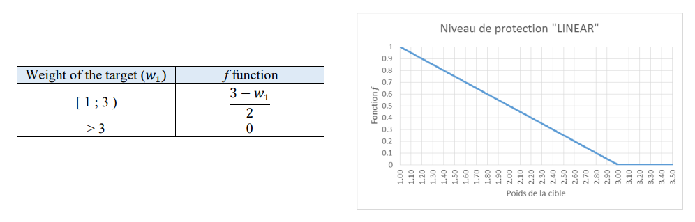
It should be noted that if the target has a weight of 3, sensitivity should be zero or negative since the $f$ function has a value of 0. The $f$ function decreases linearly between weights 1 and 3, hence the name LINEAR to designate this level of protection. The greater the weight, the less protection is needed, until a weight of 3 is reached, at which point the target
is no longer considered to require protection.
Now, let’s look at the LINEAR protection level in practice. In the variable WEIGHT_B, we have different weights for each domain, which means that we obtain different sensitivity calculations from one domain to the next. We obtain the following results:
example = gconfid.sensitiv(
indata=df,
outcell = "pandas",
outconstraint= "pandas",
s_rule="pq 0.2",
hierarchy="TOT D1 D2 D3 D4 D5 D6 D7;",
unit_id="Entid",
var="DATAVALUE",
dimension="VARIABLE",
weight="WEIGHT_B", # Weight variableù
weight_prot_level="LINEAR" # LINEAR protection level
)
example.outcell
| CellId | NbAnonym | AnonymTotalVar | NbRespondents | WeightedNbRespondents | TotalVar | Sensitivity | Status | Type | TotalNoise | VARIABLE | |
|---|---|---|---|---|---|---|---|---|---|---|---|
| 0 | 1.0 | 0.0 | 0.0 | 4.0 | 4.0 | 415.0 | 5.0 | S | C | 415.0 | D1 |
| 1 | 2.0 | 0.0 | 0.0 | 4.0 | 6.0 | 815.0 | -35.0 | V | C | 815.0 | D2 |
| 2 | 3.0 | 0.0 | 0.0 | 4.0 | 5.9 | 795.0 | -33.0 | V | C | 795.0 | D3 |
| 3 | 4.0 | 0.0 | 0.0 | 4.0 | 5.5 | 715.0 | -25.0 | V | C | 715.0 | D4 |
| 4 | 5.0 | 0.0 | 0.0 | 4.0 | 6.0 | 805.0 | -115.0 | V | C | 805.0 | D5 |
| 5 | 6.0 | 0.0 | 0.0 | 4.0 | 7.0 | 835.0 | -145.0 | V | C | 835.0 | D6 |
| 6 | 7.0 | 0.0 | 0.0 | 4.0 | 5.5 | 535.0 | -38.0 | V | C | 535.0 | D7 |
| 7 | 8.0 | 0.0 | 0.0 | 28.0 | 39.9 | 4915.0 | -4115.0 | V | C | 4915.0 | TOT |
We will now show how each of the domains obtained its sensitivity:
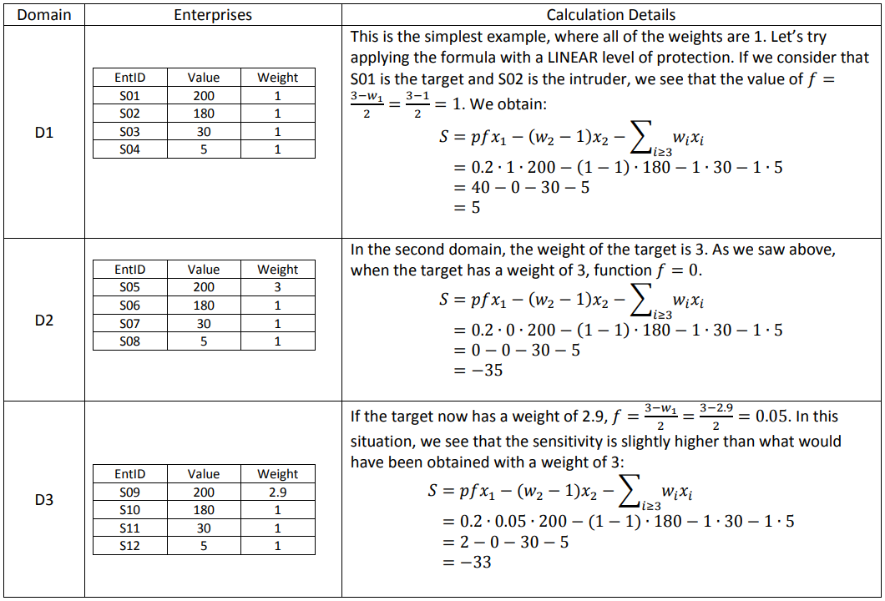
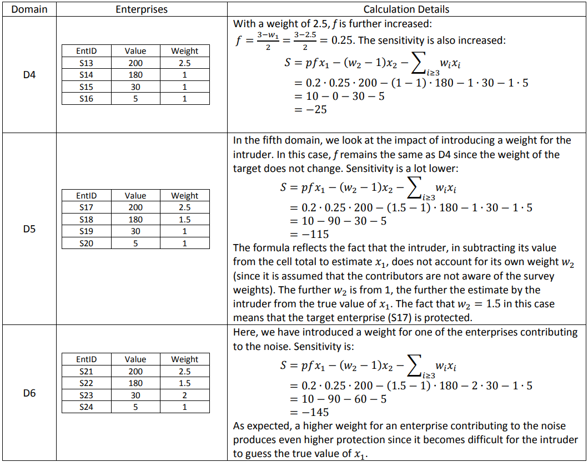
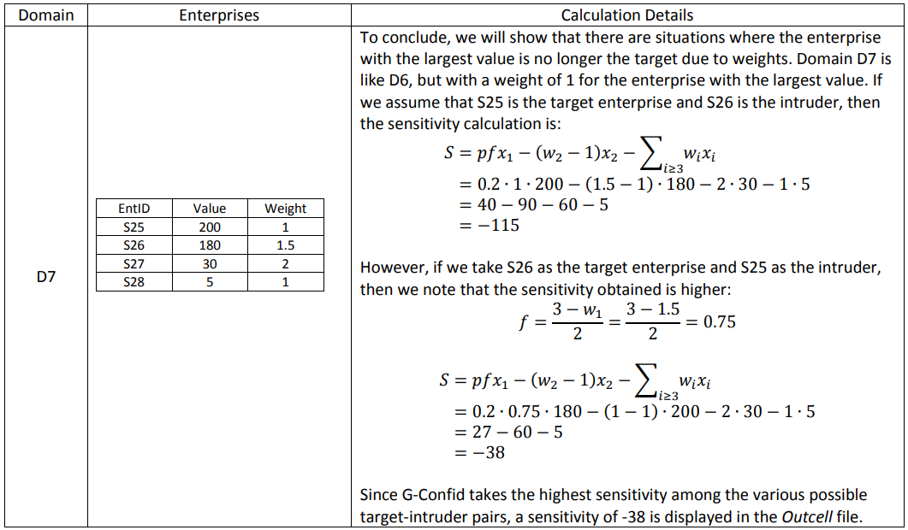
Example 3 – Varied weights with the STEP protection level¶
With the STEP protection level, sensitivity is calculated as follows: $$S = pfx_1 - (w_2-1)x_2 - \sum_{i\geq 3}w_ix_i $$
Where $w_i$ are the weights and x_i are the values of each contributor $i$ and $p$ is the value of $p$ in the p-percent rule. What changes in this case is the $f$ function. It is defined as:
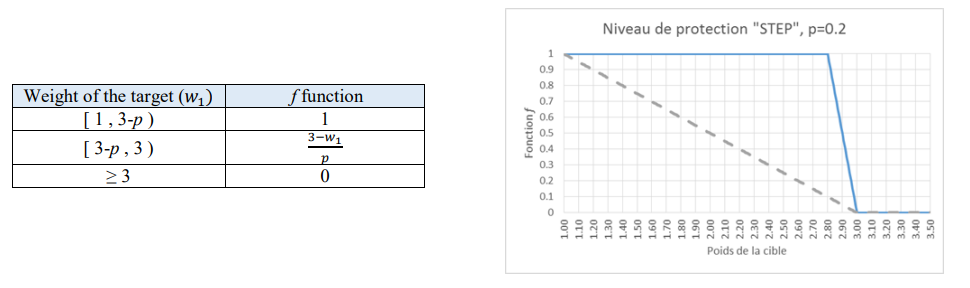
Similar to the $f$ function in the LINEAR option(grey dotted line), the $f$ function in the $STEP$ option (blue line) has a value of 1 when the target weight is 1 and a value of 0 when the weight exceeds 3. The difference is between weights 1 to 3. Instead of decreasing linearly, the function remains at 1 for weights between 1 and $3-p$, then decreases linearly between
$3-p$ and 3. The $f$ function in STEP is therefore more conservative than the $f$ function in LINEAR.
Now let’s look at the STEP protection level in practice. Continuing to use the variable WEIGHT_B for the weight, we obtain the following results:
example = gconfid.sensitiv(
indata=df,
outcell = "pandas",
outconstraint= "pandas",
s_rule="pq 0.2",
hierarchy="TOT D1 D2 D3 D4 D5 D6 D7;",
unit_id="Entid",
var="DATAVALUE",
dimension="VARIABLE",
weight="WEIGHT_B", # Weight variableù
weight_prot_level="STEP" # STEP protection level
)
example.outcell
| CellId | NbAnonym | AnonymTotalVar | NbRespondents | WeightedNbRespondents | TotalVar | Sensitivity | Status | Type | TotalNoise | VARIABLE | |
|---|---|---|---|---|---|---|---|---|---|---|---|
| 0 | 1.0 | 0.0 | 0.0 | 4.0 | 4.0 | 415.0 | 5.0 | S | C | 415.0 | D1 |
| 1 | 2.0 | 0.0 | 0.0 | 4.0 | 6.0 | 815.0 | -35.0 | V | C | 815.0 | D2 |
| 2 | 3.0 | 0.0 | 0.0 | 4.0 | 5.9 | 795.0 | -15.0 | V | C | 795.0 | D3 |
| 3 | 4.0 | 0.0 | 0.0 | 4.0 | 5.5 | 715.0 | 5.0 | S | C | 715.0 | D4 |
| 4 | 5.0 | 0.0 | 0.0 | 4.0 | 6.0 | 805.0 | -85.0 | V | C | 805.0 | D5 |
| 5 | 6.0 | 0.0 | 0.0 | 4.0 | 7.0 | 835.0 | -115.0 | V | C | 835.0 | D6 |
| 6 | 7.0 | 0.0 | 0.0 | 4.0 | 5.5 | 535.0 | -29.0 | V | C | 535.0 | D7 |
| 7 | 8.0 | 0.0 | 0.0 | 28.0 | 39.9 | 4915.0 | -4115.0 | V | C | 4915.0 | TOT |
As we did in example 2, we will now show the calculation details for each of the seven domains D1 to D7.
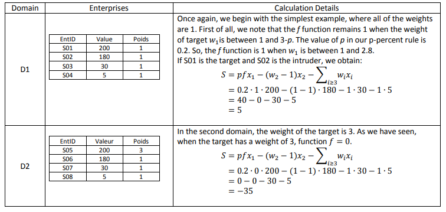
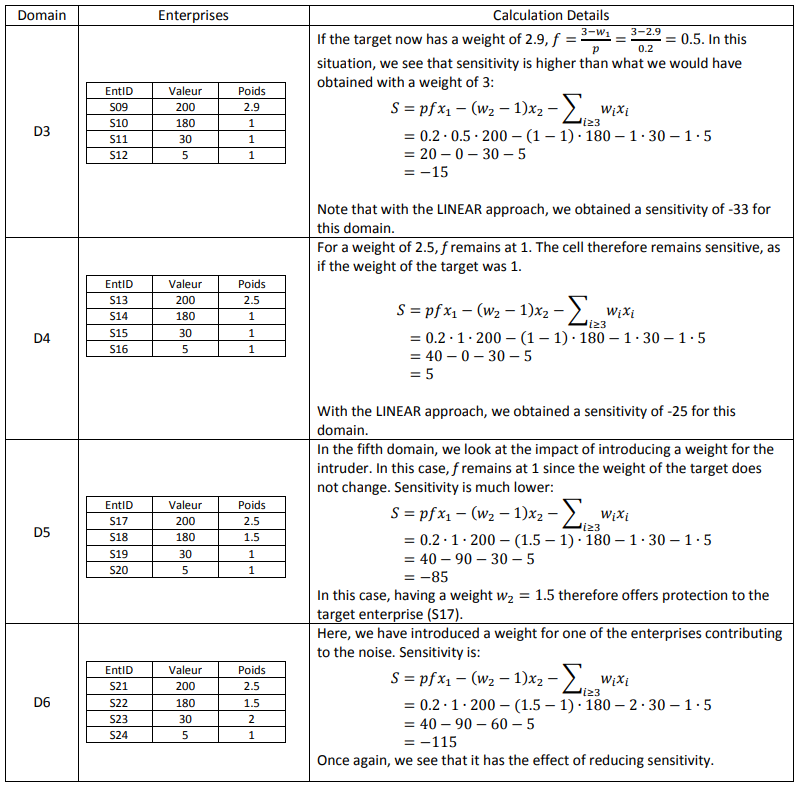
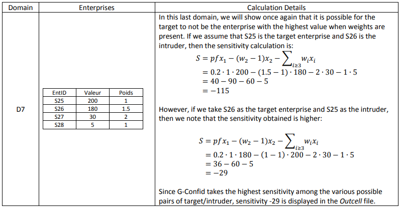
Supplementary notes¶
To conclude, below are a few notes about working with weights in G-Confid:
EXACT protection level:
- For information purposes, here is how sensitivity is calculated with an EXACT protection level: $$S = pw_1x_1 - \sum_{i\geq 3} w_ix_i$$
- This formula is for a case where the intruder knows its own survey weight and the target’s weight. In such a case, we can simply adjust the $x_i$ values by $w_i$ weights in the basic sensitivity formula: $S = px_1 - \sum_{i\geq 3}x_i$
- Unlike other levels of protection, a high weight for the target increases the sensitivity rather than lowering it. The user must therefore have good reason to believe that the intruder knows the survey weights before using this formula; otherwise, there is a general risk of obtaining a sensitivity that is too high.
- However, in practice, it is highly unlikely that the intruder is aware of the survey weights. This level of protection is not recommended when the intruder is not aware of the survey weights. That is why we have not presented examples for this level of protection.
Handling weights smaller than 1 and negative weights¶
- The three levels of protection available (LINEAR, STEP and EXACT) can handle weights smaller than 1 and negative weights to calculate sensitivity. However, at the present time, we cannot claim that the way these weights are handled in G-Confid is optimal. We therefore recommend that users exercise caution when using these types of weights.
- For the LINEAR and STEP protection levels, the sensitivity formula is:
$$S = pf|x_1| - (|w_2| - 1)|x_2| - \sum_{i \geq 3} |w_i| \cdot |x_i|$$
- Where the $f$ functions are:
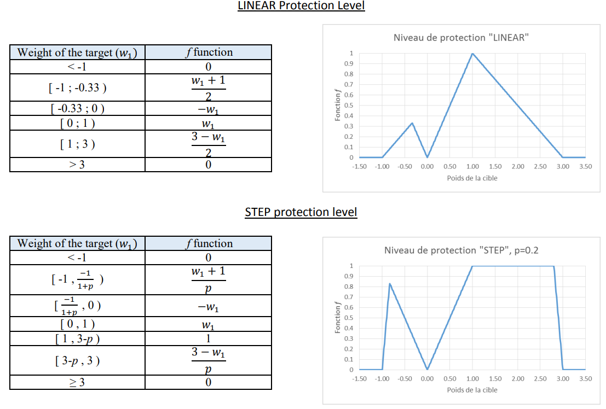
Multiple contributions with different weights for an enterprise¶
- We know that it is possible to have several contributions from the same enterprise included in a cell total. Having different weights for each contribution can cause a problem since it is uncertain which weight to use to determine the value of $f$ if the enterprise is the target. The actual weight is then used.
- For example, if the target enterprise has two contributions, A and B, its actual weight is: $w_i* = \frac{w_{1A}x_{1A} + w_{1B}x_{1B}}{x_{1A}+x_{1B}}$. Based on this $𝑤_{1*}$, we can determine the value of $f$, then calculate the sensitivity: $S = pf(x_{1A}+x_{1B}) - (w_2 - 1)x_2 - \sum_{i\geq 3}w_ix_i $
- The same type of formula applies when there are more than two contributions for the same target enterprise.
NK rule and weights¶
- Without weights, sensitivity is calculated as follows with the NK rule: $S = \frac{100-k}{k} \sum_{i\leq n} x_i - \sum_{i>n}x_i$
- With weights, the formula is: $S = \frac{100-k}{k} \sum_{i\leq n} f_ix_i - \sum_{i>n}w_ix_i $
- In other words, if $n=2$, we must calculate $f_1$ and $f_2$ for both dominant enterprises.
- Note that the n dominant enterprises are not necessarily the ones with the largest values, since we also need to account for the weights. We must therefore test different combinations of n dominant enterprises and choose those that give the greatest sensitivity.
2.7 Negative values¶
As mentioned in the examples of 2.2 Sensitivity rules, he normal method for calculating the sensitivity of various cells in a table requires that the data are not negative. Prior to version 1.07 in SAS, G-Confid automatically excluded negative values from processing, displaying a warning message in the SAS log. One of the new features of G-Confid 1.07 and carry over to this Python version is that it is now possible to work with negative values.
Obviously, when dealing with negative values, a slightly different strategy is needed to perform sensitivity calculations. The following examples will show different ways of handling negative values in G-Confid.
data = {
"Entid": ['S01', 'S02', 'S03', 'S04', 'S01', 'S05', 'S02', 'S06', 'S07', 'S08', 'S02', 'S09', 'S10', 'S11'],
"Region": ['A', 'A', 'A', 'A', 'B', 'B', 'B', 'B', 'C', 'C', 'C', 'D', 'D', 'D'],
"Profit": [180, -35, 30, 15, -90, 40, 30, 20, -95, 40, -40, 100, 0, 40],
"Size": [9125, 10000, 985, 35, -50000, 45, 15000, 760, 4570, 3875, 10000, 500, 8000, 7025]
}
df = pd.DataFrame(data)
df
| Entid | Region | Profit | Size | |
|---|---|---|---|---|
| 0 | S01 | A | 180 | 9125 |
| 1 | S02 | A | -35 | 10000 |
| 2 | S03 | A | 30 | 985 |
| 3 | S04 | A | 15 | 35 |
| 4 | S01 | B | -90 | -50000 |
| 5 | S05 | B | 40 | 45 |
| 6 | S02 | B | 30 | 15000 |
| 7 | S06 | B | 20 | 760 |
| 8 | S07 | C | -95 | 4570 |
| 9 | S08 | C | 40 | 3875 |
| 10 | S02 | C | -40 | 10000 |
| 11 | S09 | D | 100 | 500 |
| 12 | S10 | D | 0 | 8000 |
| 13 | S11 | D | 40 | 7025 |
The file contains data on the profits of 11 enterprises in four different regions (A, B, C and D). Note that enterprise S01 is in regions A and B, and enterprise S02 is in regions A, B and C. All of the other enterprises are in one region only. The Profit variable has a few negative values and one zero value. Note that the Size variable will be used in example 3, which deals with proxy variables. We will come back to it at that time.
Example 0: Rejected negative values¶
As explained above, earlier versions of G-Confid did not allow us to work with negative values. To ensure consistency between version 1.07 and earlier versions, G-Confid rejects negative values by default, as it did in the past. We will begin by looking at what happens when G-Confid encounters negative values with no further instructions
example = gconfid.sensitiv(
indata=df,
outcell = "pandas",
outconstraint= "pandas",
s_rule="pq 0.15",
hierarchy="TOT_REGION A B C D;",
unit_id="Entid",
var="Profit",
dimension="Region",
capture=True
)
example.outcell
NOTE: --- G-Confid System 2.00.000b14 developed by Statistics Canada ---
NOTE: PROCEDURE SENSITIVITY Version 2.00.000b14
NOTE: Created on Apr 9 2026 at 21:07:49
NOTE: Email: G-Confid@statcan.gc.ca
NOTE: indata: 4 column(s), 14 row(s)
NOTE: outcell: enabled
NOTE: outconstraint: enabled
NOTE: outlargest: disabled
NOTE: outpairs: disabled
NOTE: outtargets: disabled
NOTE: s_rule = pq 0.15
NOTE: hierarchy = TOT_REGION A B C D;
NOTE: code_range not specified.
NOTE: m = 5 (default)
NOTE: x = 0.00000 (default)
NOTE: y = 0.00000 (default)
NOTE: z = 0.00000 (default)
NOTE: tolerance = 0.00000 (default)
NOTE: min_resp not specified.
NOTE: proxy_diag = False
NOTE: weight_prot_level = LINEAR
NOTE: min_resp_w not specified.
NOTE: additive_noise = True
NOTE: weight_diag = False
NOTE: accept_negative = False
NOTE: unit_id = Entid
NOTE: var = Profit
NOTE: shadow not specified.
NOTE: proxy_size not specified.
NOTE: weight not specified.
NOTE: dimension = Region
NOTE: waiver not specified.
NOTE: p_waiver not specified.
NOTE: by not specified.
NOTE: timer
NOTE: print_codes = True
NOTE: limit_warnings = True
SRule Alpha[0][0] = 0.150000
SRule Alpha[0][1] = 0.000000
SRule Alpha[0][2] = -1.000000
SRule Alpha[0][3] = -1.000000
SRule Alpha[0][4] = -1.000000
Dimension Region
Code TOT_REGION - Decomposition [1/1]
Code A - Decomposition [0/0]
Code B - Decomposition [0/0]
Code C - Decomposition [0/0]
Code D - Decomposition [0/0]
Range for dimension Region
Range is empty
WARNING: There were 4 observations dropped from the indata data set because the variable Profit is negative.
WARNING: These observations will not be used for sensitivity calculation.
Microdata Statistics
Total number of observations 14
1. Number of valid observations 10
a. # of valid observs from anonymous respondents 0
b. # of valid observs from non-anonymous respondents 10
c. # of valid observs with negative data for respondents 0
d. # of valid observs with negative or missing data for proxy variable 0
e. # of valid observs with zero or negative data for weight variable 0
f. # of valid observs with invalid data for waiver variable 0
2. Number of valid observations with zero value 1
3. Number of invalid observations 4
a. # of observs invalid due to missing data for respondents 0
b. # of observs invalid due to negative data for respondents 4
c. # of observs invalid due to missing code for dimension 0
d. # of observs invalid due to invalid code for dimension 0
e. # of observs invalid due to missing data for shadow variable 0
f. # of observs invalid due to missing data for weight variable 0
4. # of observs invalid because dimension code set not in hierarchy 0
Cell Statistics
Number calculated Number sensitive Percent sensitive
All cells with zero value 0 0 0.00
All cells with non-zero value
Internal cells 4 3 75.00
Marginal cells 1 0 0.00
All cells 5 3 60.00
Aggregates 1 0 0.00
Total 6 3 50.00
| CellId | NbAnonym | AnonymTotalVar | NbRespondents | TotalVar | Sensitivity | Status | Type | TotalNoise | Region | |
|---|---|---|---|---|---|---|---|---|---|---|
| 0 | 1.0 | 0.0 | 0.0 | 3.0 | 225.0 | 12.0 | S | C | 225.0 | A |
| 1 | 2.0 | 0.0 | 0.0 | 3.0 | 90.0 | -14.0 | V | C | 90.0 | B |
| 2 | 3.0 | 0.0 | 0.0 | 1.0 | 40.0 | 6.0 | S | C | 40.0 | C |
| 3 | 4.0 | 0.0 | 0.0 | 3.0 | 140.0 | 15.0 | S | C | 140.0 | D |
| 4 | 5.0 | 0.0 | 0.0 | 10.0 | 495.0 | -188.0 | V | C | 495.0 | TOT_REGION |
We see that in the outcell file, some of the contributors have not been included (see the NbRespondents variable). Our four negative values were automatically excluded and are not considered at all in the outcell file. The same is observed in the sensitivity calculations. If we attempt to reproduce the sensitivity calculation for region A, we obtain $𝑆_A = 0.15 \cdot 180 − 15 = 12$. In other words, the value -35 is not considered at all in the calculation
It may be interesting to examine the log. There is a warning message due to the negative values:
WARNING: There were 4 observations dropped from the DATA data set because the variable Profit is negative.
WARNING: These observations will not be used for sensitivity calculation.
Also note that trace=True and capture=True are used to show all the log in jupternotebook. More deatil information on the log can be found here: https://gitlab.k8s.cloud.statcan.ca/gensys/g-confid/-/blob/main/docs/EN/user_guide.md#g-confid-log
G-Confid is warning that the four negative values for the Profit variable have been excluded and will not be considered in the sensitivity calculation. The Microdata Statistics table is also interesting in the log. We see that we have 10 valid observations, including a zero, but that four of the observations are considered invalid because they are negative.
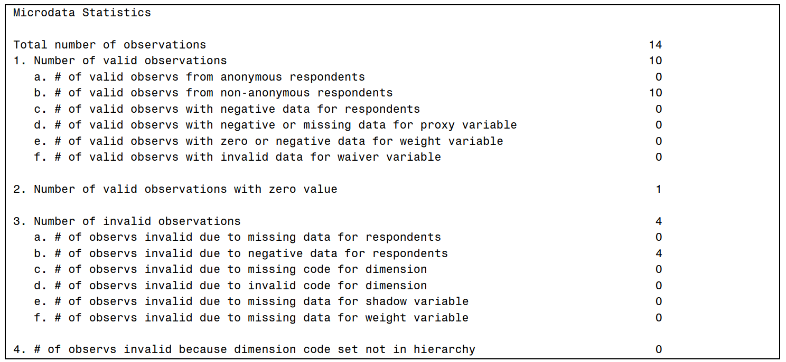
Example 1: PQ rule¶
In order to work with negative values, G-Confid requires the ACCEPTNEGATIVE option. If we redo the above example including this option, we obtain the following results:
example = gconfid.sensitiv(
indata=df,
outcell = "pandas",
outconstraint= "pandas",
s_rule="pq 0.15",
hierarchy="TOT_REGION A B C D;",
unit_id="Entid",
var="Profit",
dimension="Region",
accept_negative= True,
capture=True
)
example.outcell
NOTE: --- G-Confid System 2.00.000b14 developed by Statistics Canada ---
NOTE: PROCEDURE SENSITIVITY Version 2.00.000b14
NOTE: Created on Apr 9 2026 at 21:07:49
NOTE: Email: G-Confid@statcan.gc.ca
NOTE: indata: 4 column(s), 14 row(s)
NOTE: outcell: enabled
NOTE: outconstraint: enabled
NOTE: outlargest: disabled
NOTE: outpairs: disabled
NOTE: outtargets: disabled
NOTE: s_rule = pq 0.15
NOTE: hierarchy = TOT_REGION A B C D;
NOTE: code_range not specified.
NOTE: m = 5 (default)
NOTE: x = 0.00000 (default)
NOTE: y = 0.00000 (default)
NOTE: z = 0.00000 (default)
NOTE: tolerance = 0.00000 (default)
NOTE: min_resp not specified.
NOTE: proxy_diag = False
NOTE: weight_prot_level = LINEAR
NOTE: min_resp_w not specified.
NOTE: additive_noise = True
NOTE: weight_diag = False
NOTE: accept_negative = True
NOTE: unit_id = Entid
NOTE: var = Profit
NOTE: shadow not specified.
NOTE: proxy_size not specified.
NOTE: weight not specified.
NOTE: dimension = Region
NOTE: waiver not specified.
NOTE: p_waiver not specified.
NOTE: by not specified.
NOTE: timer
NOTE: print_codes = True
NOTE: limit_warnings = True
SRule Alpha[0][0] = 0.150000
SRule Alpha[0][1] = 0.000000
SRule Alpha[0][2] = -1.000000
SRule Alpha[0][3] = -1.000000
SRule Alpha[0][4] = -1.000000
Dimension Region
Code TOT_REGION - Decomposition [1/1]
Code A - Decomposition [0/0]
Code B - Decomposition [0/0]
Code C - Decomposition [0/0]
Code D - Decomposition [0/0]
Range for dimension Region
Range is empty
NOTE: There were 4 observations read from the indata data with negative values in variable Profit.
Microdata Statistics
Total number of observations 14
1. Number of valid observations 14
a. # of valid observs from anonymous respondents 0
b. # of valid observs from non-anonymous respondents 14
c. # of valid observs with negative data for respondents 4
d. # of valid observs with negative or missing data for proxy variable 0
e. # of valid observs with zero or negative data for weight variable 0
f. # of valid observs with invalid data for waiver variable 0
2. Number of valid observations with zero value 1
3. Number of invalid observations 0
a. # of observs invalid due to missing data for respondents 0
b. # of observs invalid due to negative data for respondents 0
c. # of observs invalid due to missing code for dimension 0
d. # of observs invalid due to invalid code for dimension 0
e. # of observs invalid due to missing data for shadow variable 0
f. # of observs invalid due to missing data for weight variable 0
4. # of observs invalid because dimension code set not in hierarchy 0
Cell Statistics
Number calculated Number sensitive Percent sensitive
All cells with zero value 1 0 0.00
All cells with non-zero value
Internal cells 3 1 33.33
Marginal cells 1 0 0.00
All cells 4 1 25.00
Aggregates 4 0 0.00
Total 8 1 12.50
| CellId | NbAnonym | AnonymTotalVar | NbRespondents | TotalVar | Sensitivity | Status | Type | TotalNoise | Region | |
|---|---|---|---|---|---|---|---|---|---|---|
| 0 | 1.0 | 0.0 | 0.0 | 4.0 | 190.0 | -18.00 | V | C | 260.0 | A |
| 1 | 2.0 | 0.0 | 0.0 | 4.0 | 0.0 | -36.50 | V | C | 180.0 | B |
| 2 | 3.0 | 0.0 | 0.0 | 3.0 | -95.0 | -25.75 | V | C | 175.0 | C |
| 3 | 4.0 | 0.0 | 0.0 | 3.0 | 140.0 | 15.00 | S | C | 140.0 | D |
| 4 | 5.0 | 0.0 | 0.0 | 11.0 | 235.0 | -339.50 | V | C | 755.0 | TOT_REGION |
This time, when we look at each of the regions, we find the expected number of contributors in the NbRespondents variable. In the log, instead of a warning message, we see the following note:
NOTE: There were 4 observations read from the indata data with negative values in variable Profit.
Also, in the Microdata Statistics table in the log, we see that the four negative values are now considered to be valid:
c. # of valid observs with negative data for respondents 4
The negative values now contribute to sensitivity calculations. The question becomes: how do we account for them? In reality, the answer is rather intuitive. We simply take the absolute value of our values to perform the calculations and to determine the roles of the contributors in each cell. For example, for region A, there are four contributors with the following values: 180, -35, 30 and 15. If we take the absolute value of each of these values, we get: 180, 35, 30 and 15. The value of 180 is our target, 35 is the intruder and the other two values contribute to the noise. We obtain the following sensitivity calculation: $𝑆_A = 0.15 \cdot 180 − 30 − 15 = −18$.
To obtain the results for regions B, C and D, we apply the same process. However, things get a bit complicated for the marginal value representing the total for all the regions. As a reminder, we have two enterprises, S01 and S02, spread across different regions.
First approach: ADDITIVENOISE (additive_noise = True)¶
The first way of accounting for the negative values is to simply add the absolute values from the Profit variable by enterprise and then determine the roles of the enterprises accordingly.
We see that enterprise S01 has made two contributions to the total: 180 and -90. If we add the absolute values of these contributions, we get: |180| + |−90| = 270. Using the same principle for S02, we get: |−35| + |30| + |−40| = 105. These enterprises are the two largest contributors to the total. The first is therefore considered to be the target, while the second is the intruder. We then obtain the following sensitivity calculation: $$S_{TOT} = 0.15 \cdot 270 − (100 + 95 + 40 + 40 + 40 + 30 + 20 + 15) = −339.5$$
We end up with the sensitivity as calculated in our outcell table for the total. Note that this approach is referred to as ADDITIVENOISE in G-Confid and it is the default option used when accept_negative = True is indicated with no further details. The same results are obtained by specifying accept_negative = True alone or by specifying accept_negative = True and additive_noise = True in the gconfid.sensitiv() options.
Second approach: NOADDITIVENOISE (additive_noise = False)¶
There is, however, another approach in G-Confid to resolve this problem. To use this approach, additive_noise must be specified as False:
example = gconfid.sensitiv(
indata=df,
outcell = "pandas",
outconstraint= "pandas",
s_rule="pq 0.15",
hierarchy="TOT_REGION A B C D;",
unit_id="Entid",
var="Profit",
dimension="Region",
accept_negative= True,
additive_noise = False
)
example.outcell
| CellId | NbAnonym | AnonymTotalVar | NbRespondents | TotalVar | Sensitivity | Status | Type | TotalNoise | Region | |
|---|---|---|---|---|---|---|---|---|---|---|
| 0 | 1.0 | 0.0 | 0.0 | 4.0 | 190.0 | -18.00 | V | C | 260.0 | A |
| 1 | 2.0 | 0.0 | 0.0 | 4.0 | 0.0 | -36.50 | V | C | 180.0 | B |
| 2 | 3.0 | 0.0 | 0.0 | 3.0 | -95.0 | -25.75 | V | C | 175.0 | C |
| 3 | 4.0 | 0.0 | 0.0 | 3.0 | 140.0 | 15.00 | S | C | 140.0 | D |
| 4 | 5.0 | 0.0 | 0.0 | 11.0 | 235.0 | -305.00 | V | C | 515.0 | TOT_REGION |
We see that the sensitivity calculations give the same results, other than the cell that contains the total. This is normal, since the ADDITIVENOISE and NOADDITIVENOISE approaches may obtain different results for marginal cells, but not for internal cells.
When there are different contributions for the same enterprise, ADDITIVENOISE takes the absolute value for each of the contributions and adds them together. Conversely, NOADDITIVENOISE begins by adding the contributions, then takes the absolute value of the sum.
So, if we want to calculate the sensitivity of the total with NOADDITIVENOISE, we use the value |180 − 90| = 90 for S1 and the value |−35 + 30 − 40| = 45 for S2. Note that S01 and S02 will no longer be the target and intruder, since there are two enterprises (S09 and S07) with values greater than 100 and 95. S09 therefore plays the role of target and S07 is the intruder, while all of the other enterprises contribute to the noise. We obtain the following sensitivity calculation for the total cell: $$S_{TOT} = = 0.15 \cdot 100 − (90 + 45 + 40 + 40 + 40 + 30 + 20 + 15) = -305 $$
Example 2: NK rule¶
In this second example, we want to show what happens to the sensitivity calculation when a NK rule is used with negative values. Let’s begin with the ADDITIVENOISE approach:
example = gconfid.sensitiv(
indata=df,
outcell = "pandas",
outconstraint= "pandas",
s_rule="NK 2 80",
hierarchy="TOT_REGION A B C D;",
unit_id="Entid",
var="Profit",
dimension="Region",
accept_negative= True,
additive_noise = True
)
example.outcell
| CellId | NbAnonym | AnonymTotalVar | NbRespondents | TotalVar | Sensitivity | Status | Type | TotalNoise | Region | |
|---|---|---|---|---|---|---|---|---|---|---|
| 0 | 1.0 | 0.0 | 0.0 | 4.0 | 190.0 | 8.75 | S | C | 260.0 | A |
| 1 | 2.0 | 0.0 | 0.0 | 4.0 | 0.0 | -17.50 | V | C | 180.0 | B |
| 2 | 3.0 | 0.0 | 0.0 | 3.0 | -95.0 | -6.25 | V | C | 175.0 | C |
| 3 | 4.0 | 0.0 | 0.0 | 3.0 | 140.0 | 35.00 | S | C | 140.0 | D |
| 4 | 5.0 | 0.0 | 0.0 | 11.0 | 235.0 | -286.25 | V | C | 755.0 | TOT_REGION |
Similar to the PQ rule, the method for calculating sensitivity with negative values is rather intuitive. As a reminder, we have four contributors to region A: 180, -35, 30 and 15. Once again, we take the absolute value of these values to perform our calculations. We then obtain: 180, 35, 30 and 15. Given that we have a NK rule where $n = 2$ and $k = 80$, the calculation is:
$$S_A = \frac{100-80}{80} \cdot (180 + 35) - (30 + 15) = 8.75$$
The same calculation is performed to obtain the sensitivity for the other regions. As for the total, remember that we are using the ADDITIVENOISE approach in this example, which means that the absolute values of the contributions by enterprise will be added together before their roles are determined. Enterprise S01 has a total contribution of 270 and S02 has a total contribution of 105. They are therefore the two dominant enterprises, and we obtain: $$S_{TOT} = \frac{100-80}{80} \cdot (270 + 105) - (100+95+40+40+40+30+20+15) = -286.25$$
Second approach: NOADDITIVENOISE (additive_noise = False)¶
Now let’s see what happens when NOADDITIVENOISE is specified
example = gconfid.sensitiv(
indata=df,
outcell = "pandas",
outconstraint= "pandas",
s_rule="NK 2 80",
hierarchy="TOT_REGION A B C D;",
unit_id="Entid",
var="Profit",
dimension="Region",
accept_negative= True,
additive_noise = False
)
example.outcell
| CellId | NbAnonym | AnonymTotalVar | NbRespondents | TotalVar | Sensitivity | Status | Type | TotalNoise | Region | |
|---|---|---|---|---|---|---|---|---|---|---|
| 0 | 1.0 | 0.0 | 0.0 | 4.0 | 190.0 | 8.75 | S | C | 260.0 | A |
| 1 | 2.0 | 0.0 | 0.0 | 4.0 | 0.0 | -17.50 | V | C | 180.0 | B |
| 2 | 3.0 | 0.0 | 0.0 | 3.0 | -95.0 | -6.25 | V | C | 175.0 | C |
| 3 | 4.0 | 0.0 | 0.0 | 3.0 | 140.0 | 35.00 | S | C | 140.0 | D |
| 4 | 5.0 | 0.0 | 0.0 | 11.0 | 235.0 | -271.25 | V | C | 515.0 | TOT_REGION |
As explained in example 1, using this second approach does not change the sensitivity calculation for internal cells. The difference is seen in the marginal cells. In this example, we see that the sensitivity for the total is not the same as it was with the first method
In this case, the contributions by enterprise are added together before obtaining the absolute value. S01 therefore has a value of 90 and S02 has a value of 45. Our two dominant enterprises are now S09 with a value of 100 and S07 with a value of 95. The sensitivity calculation for the total cell is: $$S_{TOT} = \frac{100-80}{80} \cdot (100+95) - (90 + 45 + 40 + 40 + 40 + 30 + 20 + 15) = -271.25$$
Example 3: Using a proxy¶
In this third example, we will show how to use a proxy. A proxy is used to get a second view of the importance of an enterprise in a cell. This may be useful in better protecting contributions that are negative or close to zero. In our fictitious data file Data_Neg, Size is the variable that will serve as an auxiliary variable to calculate the proxy variable Z. Let’s begin by showing the code necessary to include a proxy in G-Confid. We can then explain how this variable is used.
example = gconfid.sensitiv(
indata=df,
outcell = "pandas",
outconstraint= "pandas",
s_rule="pq 0.15",
hierarchy="TOT_REGION A B C D;",
unit_id="Entid",
var="Profit",
dimension="Region",
accept_negative= True,
proxy_size= "Size",
proxy_percentile=0.25,
capture = True
)
example.outcell
NOTE: --- G-Confid System 2.00.000b14 developed by Statistics Canada ---
NOTE: PROCEDURE SENSITIVITY Version 2.00.000b14
NOTE: Created on Apr 9 2026 at 21:07:49
NOTE: Email: G-Confid@statcan.gc.ca
NOTE: indata: 4 column(s), 14 row(s)
NOTE: outcell: enabled
NOTE: outconstraint: enabled
NOTE: outlargest: disabled
NOTE: outpairs: disabled
NOTE: outtargets: disabled
NOTE: s_rule = pq 0.15
NOTE: hierarchy = TOT_REGION A B C D;
NOTE: code_range not specified.
NOTE: m = 5 (default)
NOTE: x = 0.00000 (default)
NOTE: y = 0.00000 (default)
NOTE: z = 0.00000 (default)
NOTE: tolerance = 0.00000 (default)
NOTE: min_resp not specified.
NOTE: proxy_ratio not specified.
NOTE: proxy_percentile = 0.25000
NOTE: proxy_diag = False
NOTE: weight_prot_level = LINEAR
NOTE: min_resp_w not specified.
NOTE: additive_noise = True
NOTE: weight_diag = False
NOTE: accept_negative = True
NOTE: unit_id = Entid
NOTE: var = Profit
NOTE: shadow not specified.
NOTE: proxy_size = Size
NOTE: weight not specified.
NOTE: dimension = Region
NOTE: waiver not specified.
NOTE: p_waiver not specified.
NOTE: by not specified.
NOTE: timer
NOTE: print_codes = True
NOTE: limit_warnings = True
SRule Alpha[0][0] = 0.150000
SRule Alpha[0][1] = 0.000000
SRule Alpha[0][2] = -1.000000
SRule Alpha[0][3] = -1.000000
SRule Alpha[0][4] = -1.000000
Dimension Region
Code TOT_REGION - Decomposition [1/1]
Code A - Decomposition [0/0]
Code B - Decomposition [0/0]
Code C - Decomposition [0/0]
Code D - Decomposition [0/0]
Range for dimension Region
Range is empty
NOTE: There were 4 observations read from the indata data with negative values in variable Profit.
NOTE: There were 1 observations read from the indata data set with missing or negative values in variable Size
ProxyRatio (calculated from ProxyPercentile = 0.25000) = 0.00350
Microdata Statistics
Total number of observations 14
1. Number of valid observations 14
a. # of valid observs from anonymous respondents 0
b. # of valid observs from non-anonymous respondents 14
c. # of valid observs with negative data for respondents 4
d. # of valid observs with negative or missing data for proxy variable 1
e. # of valid observs with zero or negative data for weight variable 0
f. # of valid observs with invalid data for waiver variable 0
2. Number of valid observations with zero value 1
3. Number of invalid observations 0
a. # of observs invalid due to missing data for respondents 0
b. # of observs invalid due to negative data for respondents 0
c. # of observs invalid due to missing code for dimension 0
d. # of observs invalid due to invalid code for dimension 0
e. # of observs invalid due to missing data for shadow variable 0
f. # of observs invalid due to missing data for weight variable 0
4. # of observs invalid because dimension code set not in hierarchy 0
Cell Statistics
Number calculated Number sensitive Percent sensitive
All cells with zero value 1 0 0.00
All cells with non-zero value
Internal cells 3 0 0.00
Marginal cells 1 0 0.00
All cells 4 0 0.00
Aggregates 0 0 0.00
Total 4 0 0.00
| CellId | NbAnonym | AnonymTotalVar | NbRespondents | TotalVar | Sensitivity | Status | Type | TotalNoise | TotalProxySize | Region | |
|---|---|---|---|---|---|---|---|---|---|---|---|
| 0 | 1.0 | 0.0 | 0.0 | 4.0 | 190.0 | -18.00 | V | C | 260.0 | 20145.0 | A |
| 1 | 2.0 | 0.0 | 0.0 | 4.0 | 0.0 | -33.75 | V | C | 287.5 | -34195.0 | B |
| 2 | 3.0 | 0.0 | 0.0 | 3.0 | -95.0 | -25.75 | V | C | 175.0 | 18445.0 | C |
| 3 | 4.0 | 0.0 | 0.0 | 3.0 | 140.0 | -13.00 | V | C | 168.0 | 15525.0 | D |
| 4 | 5.0 | 0.0 | 0.0 | 11.0 | 235.0 | -354.75 | V | C | 890.5 | 19920.0 | TOT_REGION |
First of all, like the previous examples, we will begin by showing what happens with ADDITIVENOISE before showing NOADDITIVENOISE. What is new in this code is the proxy_percentile and the proxy_size. If
proxy_percentile is not specified, G-Confid chooses a value of proxy_percentile=0.10 by default. Here we have chosen a pq 0.15 rule, which is the same rule that was used in example 1. We see that the sensitivity calculation is the same as example 1 for regions A and C, but different for regions B and D and the total.
The following notes appear in the log:
NOTE: There were 4 observations read from the indata data with negative values in variable Profit.
NOTE: There were 1 observations read from the indata data set with missing or negative values in variable Size
ProxyRatio (calculated from ProxyPercentile = 0.25000) = 0.00350
Our proxy_percentile=0.25 value was used to calculate a value of 0.0035 for the ProxyRatio. We will now look at what that means. Understanding this will help to understand how a sensitivity calculation works with a proxy.
For each contribution in our dataset, there is a value for our variable of interest (Profit) and a value for our auxiliary variable (Size). For each contribution $i$, we take the absolute value of the ratio between the two variables: $Ratio(i) = |\frac{Profit(i)}{Size(i)}|$ Next, since we have specified that proxy_percentile=0.25, we are seeking the 25th percentile of these ratios and we obtain ProxyRatio=0.0035. Once the ProxyRatio has been determined, we can perform the sensitivity calculations
Note that we could have specified proxy_ratio=0.0035 in gconfid.sensitiv() rather than proxy_percentile=0.25 in this example and we would have obtained the exact same results.
The potential impact of the proxy is best seen in the sensitivity calculation for region D. The following three enterprises were in region D:
|Enterprise|Profit|Size |--|--|--| |S09|100|500| |S10|0|8000| |S11|40|7025|
With a PQ 0.15 rule, we obtained the following sensitivity: $𝑆 = 100 \cdot 0.15 − 0 = 15$. In other words, S09 is the target, S11 is the intruder and S10 is noise, but does not provide any real protection. However, when we look at the Size variable, we see that enterprise S10 actually has a large size. We would like to take this into account in our sensitivity calculation.
With proxy_size, G-Confid calculates sensitivity based on the proxy variable Z, which is calculated the following way:
$$Z = max(|Profit|, proxy_ratio \cdot |Size|)$$
We obtain: $$Z_{S09} = max(|100|, 0.0035 \cdot |500|) = 100$$ $$Z_{S10} = max(|0|, 0.0035 \cdot |8000|) = 28$$ $$Z_{S11} = = max(|40|, 0.0035 \cdot |7025|) = 40$$
The sensitivity calculation becomes: $S = 100 \cdot 0.15 − 28 = −13$. In other words, in this situation, we were able to account for the protection that would have normally been obtained in this cell due to enterprise S10.
We proceed the same way for the sensitivity calculation for the other regions. We will now look at how the sensitivity calculation is performed for the total cell. As a reminder, we have used the ADDITIVENOISE option, so we determine Z for each of the contributions, then add them together to obtain a total by enterprise. Enterprises S01 and S02 obtain the following values for Z:
$$Z_{S01}= max(|180|, 0.0035 \cdot |9125|) + max(|−90|, 0.0035 \cdot |−50000|) = 355$$
$$Z_{S02} = max(|−35|, 0.0035 \cdot |10000|) + max(|30|, 0.0035 \cdot |15000|) + max(|−40|, 0.0035 \cdot |10000|) = 127.5$$
If we take the time to calculate all of the Z values for the 11 enterprises, we obtain: 355, 127.5, 30, 15, 40, 20, 95, 40, 100, 28, 40, which gives the following sensitivity calculation: $$S_{TOT} = 0.15 \cdot 355 − (100 + 95 + 40 + 40 + 40 + 30 + 28 + 20 + 15) = -354.75$$
Second approach: NOADDITIVENOISE¶
If we now use the NOADDITIVENOISE option, we obtain the following results:
example = gconfid.sensitiv(
indata=df,
outcell = "pandas",
outconstraint= "pandas",
s_rule="pq 0.15",
hierarchy="TOT_REGION A B C D;",
unit_id="Entid",
var="Profit",
dimension="Region",
accept_negative= True,
proxy_size= "Size",
proxy_percentile=0.25,
additive_noise= False
)
example.outcell
| CellId | NbAnonym | AnonymTotalVar | NbRespondents | TotalVar | Sensitivity | Status | Type | TotalNoise | TotalProxySize | Region | |
|---|---|---|---|---|---|---|---|---|---|---|---|
| 0 | 1.0 | 0.0 | 0.0 | 4.0 | 190.0 | -18.000000 | V | C | 260.0000 | 20145.0 | A |
| 1 | 2.0 | 0.0 | 0.0 | 4.0 | 0.0 | -33.750000 | V | C | 287.5000 | -34195.0 | B |
| 2 | 3.0 | 0.0 | 0.0 | 3.0 | -95.0 | -25.750000 | V | C | 175.0000 | 18445.0 | C |
| 3 | 4.0 | 0.0 | 0.0 | 3.0 | 140.0 | -13.000000 | V | C | 168.0000 | 15525.0 | D |
| 4 | 5.0 | 0.0 | 0.0 | 11.0 | 235.0 | -386.540625 | V | C | 673.5625 | 19920.0 | TOT_REGION |
Similar to examples 1 and 2, we see that the NOADDITIVENOISE option only affects the total cell. With this option, only one Z is calculated per enterprise rather than a Z for each contribution. We obtain the following results for enterprises S01 and S02:
$$Z_{S01} = max(|180 − 90|, 0.0035 \cdot |9125 − 50000|) = 143.0625$$ $$Z_{S02} = max(|−35 + 30 − 40|, 0.0035 \cdot |10000 + 15000 + 10000|) = 122.5$$
These are the only two Z values that change. So, for the 11 enterprises, we end up with the following Z values: 143.0625, 122.5, 30, 15, 40, 20, 95, 40, 100, 28, 40. The sensitivity calculation is then:
$$S_{TOT} = 0.15 \cdot 143.0625 − (100 + 95 + 40 + 40 + 40 + 30 + 28 + 20 + 15) = −386.540625$$
example = gconfid.sensitiv(
indata=df,
outcell = "pandas",
outconstraint= "pandas",
s_rule="pq 0.15",
hierarchy="TOT_REGION A B C D;",
unit_id="Entid",
var="Profit",
dimension="Region",
accept_negative= True,
proxy_size= "Size",
proxy_percentile=0.25,
additive_noise = False,
proxy_diag = True,
capture = True
)
example.outcell
NOTE: --- G-Confid System 2.00.000b14 developed by Statistics Canada ---
NOTE: PROCEDURE SENSITIVITY Version 2.00.000b14
NOTE: Created on Apr 9 2026 at 21:07:49
NOTE: Email: G-Confid@statcan.gc.ca
NOTE: indata: 4 column(s), 14 row(s)
NOTE: outcell: enabled
NOTE: outconstraint: enabled
NOTE: outlargest: disabled
NOTE: outpairs: disabled
NOTE: outtargets: disabled
NOTE: s_rule = pq 0.15
NOTE: hierarchy = TOT_REGION A B C D;
NOTE: code_range not specified.
NOTE: m = 5 (default)
NOTE: x = 0.00000 (default)
NOTE: y = 0.00000 (default)
NOTE: z = 0.00000 (default)
NOTE: tolerance = 0.00000 (default)
NOTE: min_resp not specified.
NOTE: proxy_ratio not specified.
NOTE: proxy_percentile = 0.25000
NOTE: proxy_diag = True
NOTE: weight_prot_level = LINEAR
NOTE: min_resp_w not specified.
NOTE: additive_noise = False
NOTE: weight_diag = False
NOTE: accept_negative = True
NOTE: unit_id = Entid
NOTE: var = Profit
NOTE: shadow not specified.
NOTE: proxy_size = Size
NOTE: weight not specified.
NOTE: dimension = Region
NOTE: waiver not specified.
NOTE: p_waiver not specified.
NOTE: by not specified.
NOTE: timer
NOTE: print_codes = True
NOTE: limit_warnings = True
SRule Alpha[0][0] = 0.150000
SRule Alpha[0][1] = 0.000000
SRule Alpha[0][2] = -1.000000
SRule Alpha[0][3] = -1.000000
SRule Alpha[0][4] = -1.000000
Dimension Region
Code TOT_REGION - Decomposition [1/1]
Code A - Decomposition [0/0]
Code B - Decomposition [0/0]
Code C - Decomposition [0/0]
Code D - Decomposition [0/0]
Range for dimension Region
Range is empty
NOTE: There were 4 observations read from the indata data with negative values in variable Profit.
NOTE: There were 1 observations read from the indata data set with missing or negative values in variable Size
ProxyRatio (calculated from ProxyPercentile = 0.25000) = 0.00350
Microdata Statistics
Total number of observations 14
1. Number of valid observations 14
a. # of valid observs from anonymous respondents 0
b. # of valid observs from non-anonymous respondents 14
c. # of valid observs with negative data for respondents 4
d. # of valid observs with negative or missing data for proxy variable 1
e. # of valid observs with zero or negative data for weight variable 0
f. # of valid observs with invalid data for waiver variable 0
2. Number of valid observations with zero value 1
3. Number of invalid observations 0
a. # of observs invalid due to missing data for respondents 0
b. # of observs invalid due to negative data for respondents 0
c. # of observs invalid due to missing code for dimension 0
d. # of observs invalid due to invalid code for dimension 0
e. # of observs invalid due to missing data for shadow variable 0
f. # of observs invalid due to missing data for weight variable 0
4. # of observs invalid because dimension code set not in hierarchy 0
Cell Statistics
Number calculated Number sensitive Percent sensitive
All cells with zero value 1 0 0.00
All cells with non-zero value
Internal cells 3 0 0.00
Marginal cells 1 0 0.00
All cells 4 0 0.00
Aggregates 0 0 0.00
Total 4 0 0.00
Table P1: Effect on sensitivity of using a proxy variable
----------- ----------- -----------
Sensitivity Sensitivity Sensitivity
decreased unchanged increased
------------------------------------------ ----------- ----------- -----------
Number of internal cells 1 2 1
Contains positive and negative data 0 2 1
All contributions >=0 and some > 0 1 0 0
All contributions = 0 0 0 0
All contributions <=0 and some < 0 0 0 0
Number of marginal cells 1 0 0
Contains positive and negative data 1 0 0
All contributions >=0 and some > 0 0 0 0
All contributions = 0 0 0 0
All contributions <=0 and some < 0 0 0 0
Total number of published cells 2 2 1
Contains positive and negative data 1 2 1
All contributions >=0 and some > 0 1 0 0
All contributions = 0 0 0 0
All contributions <=0 and some < 0 0 0 0
------------------------------------------ ----------- ----------- -----------
Table P2: Effect on cell status counts of using a proxy variable
------------------- -------------------
Sensitivity Sensitivity
without with
proxy proxy
--------- --------- --------- ---------
Safe Sensitive Safe Sensitive
-------------------------------------- --------- --------- --------- ---------
Number of internal cells 3 1 4 0
Contains positive and negative data 3 0 3 0
All contributions >=0 and some > 0 0 1 1 0
All contributions = 0 0 0 0 0
All contributions <=0 and some < 0 0 0 0 0
Number of marginal cells 1 0 1 0
Contains positive and negative data 1 0 1 0
All contributions >=0 and some > 0 0 0 0 0
All contributions = 0 0 0 0 0
All contributions <=0 and some < 0 0 0 0 0
Total number of published cells 4 1 5 0
Contains positive and negative data 4 0 4 0
All contributions >=0 and some > 0 0 1 1 0
All contributions = 0 0 0 0 0
All contributions <=0 and some < 0 0 0 0 0
Number of aggregates 0 0 0 0
-------------------------------------- --------- --------- --------- ---------
| CellId | NbAnonym | AnonymTotalVar | NbRespondents | TotalVar | Sensitivity | Status | Type | TotalNoise | TotalProxySize | Region | |
|---|---|---|---|---|---|---|---|---|---|---|---|
| 0 | 1.0 | 0.0 | 0.0 | 4.0 | 190.0 | -18.000000 | V | C | 260.0000 | 20145.0 | A |
| 1 | 2.0 | 0.0 | 0.0 | 4.0 | 0.0 | -33.750000 | V | C | 287.5000 | -34195.0 | B |
| 2 | 3.0 | 0.0 | 0.0 | 3.0 | -95.0 | -25.750000 | V | C | 175.0000 | 18445.0 | C |
| 3 | 4.0 | 0.0 | 0.0 | 3.0 | 140.0 | -13.000000 | V | C | 168.0000 | 15525.0 | D |
| 4 | 5.0 | 0.0 | 0.0 | 11.0 | 235.0 | -386.540625 | V | C | 673.5625 | 19920.0 | TOT_REGION |
proxy_diag option¶
Using the proxy_diag = True option in gconfid.sensitiv() enables us to show a few interesting results regarding the effect of a proxy on cell sensitivity. If we add the proxy_diag = True option to the code above, two new tables are displayed in the log:
Table P1 indicates whether the proxy causes the sensitivity to increase or decrease, or whether it remains unchanged. Among the internal cells, including those for regions A, B, C and D, there are two cells whose sensitivity remains unchanged, one cell whose sensitivity increased and another cell whose sensitivity decreased. The marginal cell, in this case the total, had a decreased sensitivity when the proxy is used.
Table P2 shows the impact of the proxy on the status of the cells (sensitive or safe). We see that one of the internal cells was originally sensitive, but became safe through the use of the proxy. Our marginal cell for the total remained unchanged.
2.8 G-Confid and the log¶
Python Log Messages¶
Python handles logging using the standard logging package. All Python log messages have an associated log level, such as ERROR, WARNING, INFO, and DEBUG. Messages from Python are generally one line per message and are prefixed with a timestamp and level.
By default, only warning and error messages are displayed. Use the trace parameter to change what log levels are displayed.
Python Log Verbosity (trace=)¶
Use the trace parameter to control which log levels are printed by specifying one of the following log levels
gconfid.log_level.ERRORgconfid.log_level.WARNINGgconfid.log_level.INFOgconfid.log_level.DEBUG
Messages from the specified log level and higher levels will be printed, lower levels will not.
For convenience, specifying trace=True enables all logging output.
Suppressing and Troubleshooting Log Messages (capture=)¶
The capture parameter can be used to suppress all log output (using capture=None). This option is disabled by default (capture=False).
Specifying capture=True will cause log messages to be printed all at once at the end of procedure execution, instead of printed immediately throughout execution. The difference may only be noticeable during long running procedure calls. Using this option can improve performance in some cases, such as when processing a very large number of by groups.
Jupyter Notebooks and Missing Log Messages
When running the Sensitivity module using Jupyter Notebooks, log messages generated from C code may be missing, particular when running on Visual Studio Code on Windows.
To fix this issue, try using the optioncapture=True.
- alternatively use your own logger
Due to how Jupyter notebooks manage Python's terminal output, messages from procedure C code may not be displayed. To resolve this, specify capture=True in the procedure call when running in a Jupyter notebook.
Use Your Own Logger (logger=)¶
Use the logger parameter to specify a Logger that you have created. All messages from Python and C will be sent to that logger. This allows customization of message prefixes, support for writing to file, etc.
Note that procedure C messages are sent to the logger in a single INFO level Python log message.
Example: writing logs to file
import gconfid import logging my_logger = logging.getLogger(__name__) logging.basicConfig(filename='example.log', encoding='utf-8', level=logging.DEBUG) sensitivity_call = gconfid.sensitivity( logger=my_logger, indata=indata, outlargest=True, ...
Log content¶
This example is meant to explain the content of the log when G-Confid is used.
Consider the following dataset detailing business enterprises’ money donations to sports programs in their province/territory of operation, as well as their method of donation (a data hierarchy has been included as well, which will be needed for the subsequent run of gconfid.sensitive):
# Define the data as a list of dictionaries
data = [
{"ENTID": "DA1001", "SPORT": "BASE", "GEO": "NL", "VIA": "CHEQUE", "DONAMT": 7463},
{"ENTID": "DA1301", "SPORT": "BASE", "GEO": "NB", "VIA": "CHEQUE", "DONAMT": 4832},
{"ENTID": "DA1302", "SPORT": "BASE", "GEO": "NB", "VIA": "CHEQUE", "DONAMT": 8473},
{"ENTID": "DA2401", "SPORT": "BASE", "GEO": "QC", "VIA": "ETRANS", "DONAMT": 9204},
{"ENTID": "DA2402", "SPORT": "FOOT", "GEO": "QC", "VIA": "ETRANS", "DONAMT": 3403},
{"ENTID": "DA2403", "SPORT": "FOOT", "GEO": "QC", "VIA": "ETRANS", "DONAMT": 4934},
{"ENTID": "DA2403", "SPORT": "FOOT", "GEO": "QC", "VIA": "ETRANS", "DONAMT": 2348},
{"ENTID": "DA3501", "SPORT": "FOOT", "GEO": "ON", "VIA": "CHEQUE", "DONAMT": 3897},
{"ENTID": "DA3501", "SPORT": "HOCKEY", "GEO": "ON", "VIA": "CHEQUE", "DONAMT": 8828},
{"ENTID": "DA3501", "SPORT": "HOCKEY", "GEO": "ON", "VIA": "CHEQUE", "DONAMT": 4234},
{"ENTID": "DA3502", "SPORT": "HOCKEY", "GEO": "ON", "VIA": "CHEQUE", "DONAMT": 7489},
{"ENTID": "DA4601", "SPORT": "HOCKEY", "GEO": "MB", "VIA": "ETRANS", "DONAMT": 7273},
{"ENTID": "DA4601", "SPORT": "VOLLEY", "GEO": "MB", "VIA": "ETRANS", "DONAMT": 2848},
{"ENTID": "DA4701", "SPORT": "VOLLEY", "GEO": "SK", "VIA": "CHEQUE", "DONAMT": 3086},
{"ENTID": "DA4801", "SPORT": "VOLLEY", "GEO": "AB", "VIA": "ETRANS", "DONAMT": 5482},
{"ENTID": "DA4802", "SPORT": "VOLLEY", "GEO": "AB", "VIA": "ETRANS", "DONAMT": 4038},
{"ENTID": "DA5901", "SPORT": "BASKET", "GEO": "BC", "VIA": "CHEQUE", "DONAMT": 8374},
{"ENTID": "DA5902", "SPORT": "BASKET", "GEO": "BC", "VIA": "CHEQUE", "DONAMT": 5948},
{"ENTID": "DA5903", "SPORT": "BASKET", "GEO": "BC", "VIA": "CHEQUE", "DONAMT": 5994},
{"ENTID": "DA6201", "SPORT": "BASKET", "GEO": "NU", "VIA": "ETRANS", "DONAMT": 6473}
]
# Create a pandas DataFrame
sports = pd.DataFrame(data)
# Display the DataFrame
sports
| ENTID | SPORT | GEO | VIA | DONAMT | |
|---|---|---|---|---|---|
| 0 | DA1001 | BASE | NL | CHEQUE | 7463 |
| 1 | DA1301 | BASE | NB | CHEQUE | 4832 |
| 2 | DA1302 | BASE | NB | CHEQUE | 8473 |
| 3 | DA2401 | BASE | QC | ETRANS | 9204 |
| 4 | DA2402 | FOOT | QC | ETRANS | 3403 |
| 5 | DA2403 | FOOT | QC | ETRANS | 4934 |
| 6 | DA2403 | FOOT | QC | ETRANS | 2348 |
| 7 | DA3501 | FOOT | ON | CHEQUE | 3897 |
| 8 | DA3501 | HOCKEY | ON | CHEQUE | 8828 |
| 9 | DA3501 | HOCKEY | ON | CHEQUE | 4234 |
| 10 | DA3502 | HOCKEY | ON | CHEQUE | 7489 |
| 11 | DA4601 | HOCKEY | MB | ETRANS | 7273 |
| 12 | DA4601 | VOLLEY | MB | ETRANS | 2848 |
| 13 | DA4701 | VOLLEY | SK | CHEQUE | 3086 |
| 14 | DA4801 | VOLLEY | AB | ETRANS | 5482 |
| 15 | DA4802 | VOLLEY | AB | ETRANS | 4038 |
| 16 | DA5901 | BASKET | BC | CHEQUE | 8374 |
| 17 | DA5902 | BASKET | BC | CHEQUE | 5948 |
| 18 | DA5903 | BASKET | BC | CHEQUE | 5994 |
| 19 | DA6201 | BASKET | NU | ETRANS | 6473 |
myhierarchy="""
SPORT_TOT ICE FIELD GYM:
ICE HOCKEY:
FIELD FOOT BASE:
GYM BASKET VOLLEY;
CAN ATL QC ON PRAIR BC TERR:
ATL NL PE NS NB:
PRAIR MB SK AB:
TERR YT NT NU;
VIA CHEQUE ETRANS;
"""
Our dataset is for example use only, and thus is purposely small (20 entries). Each entry contains the enterprise’s ID (notice that some enterprises made multiple donations and thus we see a repeated ID), the sport to which they donated money, their province/territory of operation (and thus the province/territory of the sport to which they donated), the method via which they donated money, and the dollar amount of the donation
To obtain a suppression pattern for our tabular data, we must first run gconfid.sensitiv() to calculate the sensitivity value of our table cells.
example = gconfid.sensitiv(
indata=sports,
outcell = "pandas",
outconstraint= "pandas",
s_rule="pq 0.2",
hierarchy=myhierarchy,
unit_id="ENTID",
var="DONAMT",
dimension="SPORT GEO VIA",
capture = True # Using capture to show all the logs
)
NOTE: --- G-Confid System 2.00.000b14 developed by Statistics Canada ---
NOTE: PROCEDURE SENSITIVITY Version 2.00.000b14
NOTE: Created on Apr 9 2026 at 21:07:49
NOTE: Email: G-Confid@statcan.gc.ca
NOTE: indata: 5 column(s), 20 row(s)
NOTE: outcell: enabled
NOTE: outconstraint: enabled
NOTE: outlargest: disabled
NOTE: outpairs: disabled
NOTE: outtargets: disabled
NOTE: s_rule = pq 0.2
NOTE: hierarchy =
SPORT_TOT ICE FIELD GYM:
ICE HOCKEY:
FIELD FOOT BASE:
GYM BASKET VOLLEY;
CAN ATL QC ON PRAIR BC TERR:
ATL NL PE NS NB:
PRAIR MB SK AB:
TERR YT NT NU;
VIA CHEQUE ETRANS;
NOTE: code_range not specified.
NOTE: m = 5 (default)
NOTE: x = 0.00000 (default)
NOTE: y = 0.00000 (default)
NOTE: z = 0.00000 (default)
NOTE: tolerance = 0.00000 (default)
NOTE: min_resp not specified.
NOTE: proxy_diag = False
NOTE: weight_prot_level = LINEAR
NOTE: min_resp_w not specified.
NOTE: additive_noise = True
NOTE: weight_diag = False
NOTE: accept_negative = False
NOTE: unit_id = ENTID
NOTE: var = DONAMT
NOTE: shadow not specified.
NOTE: proxy_size not specified.
NOTE: weight not specified.
NOTE: dimension = SPORT GEO VIA
NOTE: waiver not specified.
NOTE: p_waiver not specified.
NOTE: by not specified.
NOTE: timer
NOTE: print_codes = True
NOTE: limit_warnings = True
SRule Alpha[0][0] = 0.200000
SRule Alpha[0][1] = 0.000000
SRule Alpha[0][2] = -1.000000
SRule Alpha[0][3] = -1.000000
SRule Alpha[0][4] = -1.000000
Dimension SPORT
Code SPORT_TOT - Decomposition [1/1]
Code ICE - Decomposition [1/1]
Code HOCKEY - Decomposition [0/0]
Code FIELD - Decomposition [1/1]
Code FOOT - Decomposition [0/0]
Code BASE - Decomposition [0/0]
Code GYM - Decomposition [1/1]
Code BASKET - Decomposition [0/0]
Code VOLLEY - Decomposition [0/0]
Dimension GEO
Code CAN - Decomposition [1/1]
Code ATL - Decomposition [1/1]
Code NL - Decomposition [0/0]
Code PE - Decomposition [0/0]
Code NS - Decomposition [0/0]
Code NB - Decomposition [0/0]
Code QC - Decomposition [0/0]
Code ON - Decomposition [0/0]
Code PRAIR - Decomposition [1/1]
Code MB - Decomposition [0/0]
Code SK - Decomposition [0/0]
Code AB - Decomposition [0/0]
Code BC - Decomposition [0/0]
Code TERR - Decomposition [1/1]
Code YT - Decomposition [0/0]
Code NT - Decomposition [0/0]
Code NU - Decomposition [0/0]
Dimension VIA
Code VIA - Decomposition [1/1]
Code CHEQUE - Decomposition [0/0]
Code ETRANS - Decomposition [0/0]
Range for dimension SPORT
Range is empty
Range for dimension GEO
Range is empty
Range for dimension VIA
Range is empty
Microdata Statistics
Total number of observations 20
1. Number of valid observations 20
a. # of valid observs from anonymous respondents 0
b. # of valid observs from non-anonymous respondents 20
c. # of valid observs with negative data for respondents 0
d. # of valid observs with negative or missing data for proxy variable 0
e. # of valid observs with zero or negative data for weight variable 0
f. # of valid observs with invalid data for waiver variable 0
2. Number of valid observations with zero value 0
3. Number of invalid observations 0
a. # of observs invalid due to missing data for respondents 0
b. # of observs invalid due to negative data for respondents 0
c. # of observs invalid due to missing code for dimension 0
d. # of observs invalid due to invalid code for dimension 0
e. # of observs invalid due to missing data for shadow variable 0
f. # of observs invalid due to missing data for weight variable 0
4. # of observs invalid because dimension code set not in hierarchy 0
Cell Statistics
Number calculated Number sensitive Percent sensitive
All cells with zero value 0 0 0.00
All cells with non-zero value
Internal cells 12 11 91.67
Marginal cells 104 65 62.50
All cells 116 76 65.52
Aggregates 19 1 5.26
Total 135 77 57.04
In the first five lines, we just get logistical information regarding G-Confid and gconfid.sensitiv().
Then we see output regarding the components of our specific gconfid.sensitiv() run. You’ll notice that this output looks
very similar to the code we ran; it tells us what gconfid.sensitiv() has identified as the specific inputs for its various
components (this is a good place to check if gconfid.sensitiv() has correctly identified what we want it to identify).
Some components of gconfid.sensitiv() are required to be specified, while others are not. If there is a
required component that you have not specified, an error message will appear indicating such. As we are dealing with a
basic example of gconfid.sensitiv(), there may be some components that are unfamiliar. This is nothing to be concerned
about, we can trust that gconfid.sensitiv() is doing its job correctly for those components. For more information on the
purpose of each component, see the 5. Syntax.
The last five lines of the output for this section relate to the mathematics behind the sensitivity calculations, specifically the values that the alphas take (which determine the value of the cell’s sensitivity). The alphas are described in the examples about 2.2 Sensitivity rules
In the next section, we essentially have a representation of the hierarchy we specified. For each of our three dimensions (SPORT, GEO, and VIA), we get a decomposition of the components indicated in our hierarchy. Where we see a “1/1” in square brackets for a given code, it means that component decomposes into other components. For example, the SPORT_TOT code has a “1/1” because it decomposes into the codes ICE, FIELD, and GYM. Where we see a “0/0” in square brackets for a given code, it means that component is at the lowest level of the hierarchy (thus it cannot be decomposed further). For example, the FOOT code has a “0/0” because it is a lowest level member of the FIELD code. In the next seven lines of this section, we see a series of statements regarding the range. In our example, we didn’t specify a range, so the Log window indicates that our range is empty for all three of our dimensions. If we did have a range, we would see an output similar to what the Log window produced for the hierarchy.
At the end, we have a microdata Statistics and Cell Statistics.
In the Microdata Statistics section, the Log window outputs statistics regarding the microdata (in our case, the Sports dataset we created). Here we get information on the types of observations gconfid.sensitiv() recognized from our input data, and how many observations of each type. As indicated in the statistics, a valid observation is one without missing data (or negative data if the ACCEPTNEGATIVE parameter isn’t specified) for respondents, without missing or invalid codes for the dimension, and without missing data for the shadow or weight variables. As of the most recent version of G-Confid (version 1.07), negative data values for respondents can be accepted provided that the ACCEPTNEGATIVE parameter is specified (previous versions did not have this functionality).
In the Cell Statistics section, the Log window gives us statistics about the sensitivity of the cells in our input data, including internal and marginal cells, and aggregates (multiple contributions by the one Entid in the same row or column of the table). More detailed sensitivity information (such as the exact sensitivity values for each of the cells) can be found in the Outcell table
We now move on to the Log window documentation for gconfid.Suppression, which will generate the suppression pattern for our data.
result=gconfid.Suppression(
incell=example.outcell,
inconstraint=example.outconstraint,
cost_function1= "size",
cost_function2= "information",
capture=True
)
Time zone for log entries: Eastern Daylight Time (UTC-4.0)
Loading input datasets
[TIME] TOTAL load input: 0.000 seconds (WALL), 0.000 seconds (CPU)
Pre Execute
[TIME] TOTAL pre execute: 0.093 seconds (WALL), 0.047 seconds (CPU)
Execute
====================================================================================================
G-Confid Version : 2.0.0b15
Support Email : statcan.gconfid-gconfid.statcan@statcan.gc.ca
Start Time : Mon Apr 20 10:05:30 2026 (Eastern Daylight Time)
====================================================================================================
Phase 1 iteration: 0 CurrentCell: 19.0 cells_to_treat: 77
Phase 1 iteration: 1 CurrentCell: 3.0 cells_to_treat: 24
Phase 1 iteration: 2 CurrentCell: 12.0 cells_to_treat: 13
****************************************************************************************************
Summary of the suppression process phase 1:
Number Value Percent of total number of cells
=========================== ========== ========== ================================
All suppressed cells 94.00 992697.00 81.03
Suppressed sensitive cells 76.00 652455.00 65.52
Suppressed complements 18.00 340242.00 15.52
Cells suppressed by user 0.00 0.00 0.00
Suppressed aggregates 1.00 27534.00 0.86
Published cells 22.00 682563.00 18.97
****************************************************************************************************
Phase 1 Time: 0:00:00.09
Phase 2 iteration: 0 CurrentCell: 19.0 cells_to_treat: 77
Phase 2 iteration: 1 CurrentCell: 6.0 cells_to_treat: 39
Phase 2 iteration: 2 CurrentCell: 12.0 cells_to_treat: 13
Phase 2 Time: 0:00:00.05
****************************************************************************************************
Summary of the entire suppression process (after phase 2):
Number Value Percent of total number of cells
=========================== ========== ========== ================================
All suppressed cells 94.00 992697.00 81.03
Suppressed sensitive cells 76.00 652455.00 65.52
Suppressed complements 18.00 340242.00 15.52
Cells suppressed by user 0.00 0.00 0.00
Suppressed aggregates 1.00 27534.00 0.86
Published cells 22.00 682563.00 18.97
****************************************************************************************************
====================================================================================================
Total number of cell suppressed: 94
Total value amount suppressed: 992697.0
Total duration: 0:00:00.28
====================================================================================================
G-Confid suppress completed: Mon Apr 20 10:05:30 2026 (Eastern Daylight Time)
====================================================================================================
[TIME] TOTAL execute: 0.285 seconds (WALL), 0.172 seconds (CPU)
Post Execute
[TIME] TOTAL post execute: 0.000 seconds (WALL), 0.000 seconds (CPU)
Free input datasets
[TIME] TOTAL free input: 0.000 seconds (WALL), 0.000 seconds (CPU)
Write output datasets
[TIME] TOTAL write output: 0.000 seconds (WALL), 0.000 seconds (CPU)
The first part of the log is the logsitical information regarding to gconfid.Suppression(). In the next section, we get information concerning the suppression pattern that gconfid.Suppression() creates. In Phase 1, gconfid.Suppression() will build the best pattern given the limitations of its implementation (that is, the pattern it will build will likely not be
the optimal one, as this would take an enormous amount of processing power even for relatively small tables). That being said, the pattern it builds is generally pretty good. In Phase 2, it will attempt to improve on the pattern it built by freeing up previously suppressed cells that it finds aren’t needed for complementary suppression. In our case, Phase 2 didn’t free up any extra cells, but in many other cases it does. In both phases, we are given the number of cells treated at each Counter measure. At the end of Phase 2, we get a processing time for both phases followed by a total processing time for the entirety of gconfid.Suppression() (it is important to note that while in our example gconfid.Suppression() ran relatively quickly, it can take much longer with large datasets, sometimes
on the order of hours). It is important to know that the full suppression pattern can be found in the Outpattern table, as can the Outcomplement table. As a final note, don’t be too concerned if you notice that gconfid.Suppression() is spending a lot of time processing at each counter; this is often the case with large microdata files dealt with in practice (patience is a virtue). Although no warning messages appear for the previous example, warning messages are an important topic to address in the context of Log window output. In practice, and rather non-specifically, one will encounter warning messages that both require and don’t require attention. For this reason, the user is invited to consult the section containing the list of 3.1 Common error and warning messages.
2.9 Influencing a suppression pattern in Suppression¶
To protect the confidentiality of our data, it is not enough to simply suppress sensitive cells; we must also ensure that the values of these cells cannot be mathematically deduced from other published cells. This is done by selecting a set of complementary cells to suppress at the same time as the sensitive cells. The set of cells chosen for suppression is called a “suppression pattern”.
There are many possible suppression patterns for a given set of sensitive cells. The gconfid.Supperssion macro is used to choose a suppression pattern. There are all sorts of reasons why users may want to influence the suppression pattern. Of course, sensitive cells will always be suppressed, but the cells selected for complementary suppression can be influenced to a certain extent. We will see in the following examples how the gconfid.Supperssion can be used to “favour” the suppression or publication of certain cells.
Create a fictitious data file¶
The series of examples are based on following fictitious data file:
df = pd.read_sas("data29.sas7bdat", encoding="utf-8")
df.head(20)
| Entid | Province | Industry | Value | |
|---|---|---|---|---|
| 0 | 1 | 10 | A | 1505.0 |
| 1 | 2 | 10 | A | 23.0 |
| 2 | 3 | 10 | A | 29.0 |
| 3 | 4 | 10 | A | 179.0 |
| 4 | 5 | 10 | A | 253.0 |
| 5 | 6 | 10 | B | 74.0 |
| 6 | 7 | 10 | B | 73.0 |
| 7 | 8 | 10 | B | 146.0 |
| 8 | 9 | 10 | B | 22.0 |
| 9 | 10 | 10 | B | 31.0 |
| 10 | 11 | 10 | C | 42.0 |
| 11 | 12 | 10 | C | 39.0 |
| 12 | 13 | 10 | C | 42.0 |
| 13 | 14 | 10 | C | 78.0 |
| 14 | 15 | 10 | C | 739.0 |
| 15 | 16 | 10 | D | 370.0 |
| 16 | 17 | 10 | D | 1045.0 |
| 17 | 18 | 10 | D | 63.0 |
| 18 | 19 | 10 | D | 816.0 |
| 19 | 20 | 10 | D | 9.0 |
The file contains a total of 500 observations and two dimensions: Province and Industry. Value is our variable of interest.
Identifying sensitive cells using gconfid.sensitiv()¶
Before presenting different suppression patterns using the %SUPPRESS macro, we will first identify the sensitive cells using gconfid.sensitiv().
example = gconfid.sensitiv(
indata=df,
outcell = "pandas",
outconstraint= "pandas",
s_rule="pq 0.15",
hierarchy="""TOT_PROVINCE 10 11 12 13
24 35 46 47 48 59;
TOT_INDUSTRY A B C D E F
G H I J;""",
unit_id="Entid",
var="Value",
dimension="Province Industry"
)
example.outcell.head(10)
| CellId | NbAnonym | AnonymTotalVar | NbRespondents | TotalVar | Sensitivity | Status | Type | TotalNoise | Province | Industry | |
|---|---|---|---|---|---|---|---|---|---|---|---|
| 0 | 1.0 | 0.0 | 0.0 | 5.0 | 1989.0 | -5.25 | V | C | 1989.0 | 10 | A |
| 1 | 2.0 | 0.0 | 0.0 | 5.0 | 346.0 | -104.10 | V | C | 346.0 | 10 | B |
| 2 | 3.0 | 0.0 | 0.0 | 5.0 | 940.0 | -12.15 | V | C | 940.0 | 10 | C |
| 3 | 4.0 | 0.0 | 0.0 | 5.0 | 2303.0 | -285.25 | V | C | 2303.0 | 10 | D |
| 4 | 5.0 | 0.0 | 0.0 | 5.0 | 3026.0 | -477.05 | V | C | 3026.0 | 10 | E |
| 5 | 6.0 | 0.0 | 0.0 | 5.0 | 5937.0 | -1659.50 | V | C | 5937.0 | 10 | F |
| 6 | 7.0 | 0.0 | 0.0 | 5.0 | 5705.0 | -2863.35 | V | C | 5705.0 | 10 | G |
| 7 | 8.0 | 0.0 | 0.0 | 5.0 | 3528.0 | -69.15 | V | C | 3528.0 | 10 | H |
| 8 | 9.0 | 0.0 | 0.0 | 5.0 | 3114.0 | -559.05 | V | C | 3114.0 | 10 | I |
| 9 | 10.0 | 0.0 | 0.0 | 5.0 | 880.0 | -196.30 | V | C | 880.0 | 10 | J |
Below is the cross-tabulation we want to publish with the sensitive cells shown in red. We see that there are nine sensitive cells based on the criteria we used.

Example 1: Without constraints¶
As we will see later, there are different constraints that can be placed on gconfid.Suppression to modify the suppression pattern. But let’s start by showing what happens when we use the macro without any constraints. In its simplest form, we simply need to specify in the outcell and outconstraint files generated by gconfid.sensitiv(). Also we specified the cost function for phase 1 to be "digits"(More on this later).
The suppressed table is contain in result.outsuppress
result=gconfid.Suppression(
incell=example.outcell,
inconstraint=example.outconstraint,
cost_function1="digits"
)
Time zone for log entries: Eastern Standard Time (UTC-5.0)
Loading input datasets
[TIME] TOTAL load input: 0.000 seconds (WALL), 0.000 seconds (CPU)
Pre Execute
[TIME] TOTAL pre execute: 0.071 seconds (WALL), 0.031 seconds (CPU)
Execute
====================================================================================================
G-Confid Version : 2.0.0b11
Support Email : statcan.gconfid-gconfid.statcan@statcan.gc.ca
Start Time : Fri Nov 14 11:30:46 2025 (Eastern Standard Time)
====================================================================================================
Phase 1 iteration: 0 CurrentCell: 58.0 cell_to_treat: 9
Phase 1 iteration: 1 CurrentCell: 71.0 cell_to_treat: 6
Phase 1 iteration: 2 CurrentCell: 19.0 cell_to_treat: 3
Phase 1 iteration: 3 CurrentCell: 16.0 cell_to_treat: 1
****************************************************************************************************
Summary of the suppression process phase 1:
Number Value Percent of total number of cells
=========================== ========== ========== ================================
All suppressed cells 15.00 31906.00 12.40
Suppressed sensitive cells 9.00 19690.00 7.44
Suppressed complements 6.00 12216.00 4.96
Cells suppressed by user 0.00 0.00 0.00
Suppressed aggregates 0.00 0.00 0.00
Published cells 106.00 1123886.00 87.60
****************************************************************************************************
Phase 1 Time: 0:00:00.32
****************************************************************************************************
Summary of the entire suppression process:
Number Value Percent of total number of cells
=========================== ========== ========== ================================
All suppressed cells 15.00 31906.00 12.40
Suppressed sensitive cells 9.00 19690.00 7.44
Suppressed complements 6.00 12216.00 4.96
Cells suppressed by user 0.00 0.00 0.00
Suppressed aggregates 0.00 0.00 0.00
Published cells 106.00 1123886.00 87.60
****************************************************************************************************
====================================================================================================
Total number of cell suppressed: 15
Total value amount suppressed: 31906.0
Total duration: 0:00:00.39
====================================================================================================
G-Confid suppress completed: Fri Nov 14 11:30:46 2025 (Eastern Standard Time)
====================================================================================================
[TIME] TOTAL execute: 0.404 seconds (WALL), 0.141 seconds (CPU)
Post Execute
[TIME] TOTAL post execute: 0.000 seconds (WALL), 0.000 seconds (CPU)
Free input datasets
[TIME] TOTAL free input: 0.000 seconds (WALL), 0.000 seconds (CPU)
Write output datasets
[TIME] TOTAL write output: 0.000 seconds (WALL), 0.000 seconds (CPU)
result.outsuppress contains the same variables as outcell, but also contains two new variables: OutStatus and NetVariation
- The
OutStatusvariable indicates whether a cell is suppressed ("X") or published ("P"). - The NetVariation variable represents the net variation in absolute value of the cell—required to protect sensitive cells—as calculated by the macro. All published cells have a net variation of zero, while suppressed cells (because they are sensitive or because they are chosen for complementary suppression) have a net variation different from zero.
Each time, the gconfid.Suppression() macro also generates a summary such as these:
Total number of cell suppressed: 15
Total value amount suppressed: 31906.0
Total duration: 0:00:00.82
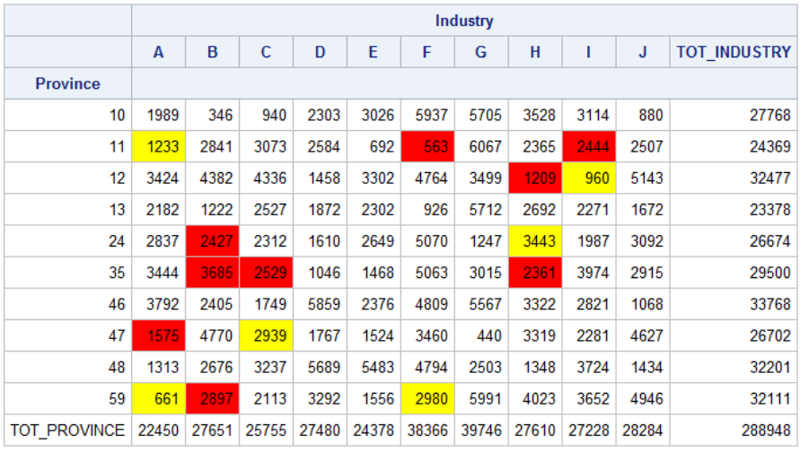
In this case, since we do not have a second phase, we see that a total of 15 cells are suppressed. Nine cells in red are suppressed because they are sensitive and six cells in yellow are selected for complementary suppression.
Example 2A: Favouring suppression of certain cells¶
Using the gconfid.Suppression, it is possible to influence the suppression pattern, and even to force certain cells to be suppressed or published. There are pros and cons of “favouring” versus “forcing” the suppression or publication of certain cells. We will start by focusing on how to use each method in practice. The pros and cons of each method will be discussed at the end of this series of examples (Additional notes section).
Let’s begin by seeing how to favour suppression of certain cells. There may be times when you want to favour the suppression of certain cells without forcing it, for example, if the information in some cells is of lower quality. Let’s assume for the purposes of our example that we would like to favour suppression of cells for industry J, except for the marginal cell that contains the subtotal for industry J.
By default, the suppression pattern is based on the TotalNoise variable. The larger the value in a cell, the more it will “cost” to suppress it. In the gconfid.Suppression, a “cost variable” that is different from the total can be specified. So, if we want to favour suppression of the cells for industry J, we can assign these cells a very low cost and leave the other cells with their default cost (i.e., the cell total). Let’s start by creating our cost variable in the outcell file:
example.outcell['cvar_J'] = example.outcell.apply(
lambda row: 1 if row['Industry'] == 'J' and row['Province'] != 'TOT_PROVINCE' else row['TotalNoise'],
axis=1
)
example.outcell.head(20)
| CellId | NbAnonym | AnonymTotalVar | NbRespondents | TotalVar | Sensitivity | Status | Type | TotalNoise | Province | Industry | cvar_J | |
|---|---|---|---|---|---|---|---|---|---|---|---|---|
| 0 | 1.0 | 0.0 | 0.0 | 5.0 | 1989.0 | -5.25 | V | C | 1989.0 | 10 | A | 1989.0 |
| 1 | 2.0 | 0.0 | 0.0 | 5.0 | 346.0 | -104.10 | V | C | 346.0 | 10 | B | 346.0 |
| 2 | 3.0 | 0.0 | 0.0 | 5.0 | 940.0 | -12.15 | V | C | 940.0 | 10 | C | 940.0 |
| 3 | 4.0 | 0.0 | 0.0 | 5.0 | 2303.0 | -285.25 | V | C | 2303.0 | 10 | D | 2303.0 |
| 4 | 5.0 | 0.0 | 0.0 | 5.0 | 3026.0 | -477.05 | V | C | 3026.0 | 10 | E | 3026.0 |
| 5 | 6.0 | 0.0 | 0.0 | 5.0 | 5937.0 | -1659.50 | V | C | 5937.0 | 10 | F | 5937.0 |
| 6 | 7.0 | 0.0 | 0.0 | 5.0 | 5705.0 | -2863.35 | V | C | 5705.0 | 10 | G | 5705.0 |
| 7 | 8.0 | 0.0 | 0.0 | 5.0 | 3528.0 | -69.15 | V | C | 3528.0 | 10 | H | 3528.0 |
| 8 | 9.0 | 0.0 | 0.0 | 5.0 | 3114.0 | -559.05 | V | C | 3114.0 | 10 | I | 3114.0 |
| 9 | 10.0 | 0.0 | 0.0 | 5.0 | 880.0 | -196.30 | V | C | 880.0 | 10 | J | 1.0 |
| 10 | 11.0 | 0.0 | 0.0 | 5.0 | 1233.0 | -338.65 | V | C | 1233.0 | 11 | A | 1233.0 |
| 11 | 12.0 | 0.0 | 0.0 | 5.0 | 2841.0 | -281.60 | V | C | 2841.0 | 11 | B | 2841.0 |
| 12 | 13.0 | 0.0 | 0.0 | 5.0 | 3073.0 | -621.45 | V | C | 3073.0 | 11 | C | 3073.0 |
| 13 | 14.0 | 0.0 | 0.0 | 5.0 | 2584.0 | -460.75 | V | C | 2584.0 | 11 | D | 2584.0 |
| 14 | 15.0 | 0.0 | 0.0 | 5.0 | 692.0 | -192.50 | V | C | 692.0 | 11 | E | 692.0 |
| 15 | 16.0 | 0.0 | 0.0 | 5.0 | 563.0 | 14.00 | S | C | 563.0 | 11 | F | 563.0 |
| 16 | 17.0 | 0.0 | 0.0 | 5.0 | 6067.0 | -1946.85 | V | C | 6067.0 | 11 | G | 6067.0 |
| 17 | 18.0 | 0.0 | 0.0 | 5.0 | 2365.0 | -428.95 | V | C | 2365.0 | 11 | H | 2365.0 |
| 18 | 19.0 | 0.0 | 0.0 | 5.0 | 2444.0 | 22.45 | S | C | 2444.0 | 11 | I | 2444.0 |
| 19 | 20.0 | 0.0 | 0.0 | 5.0 | 2507.0 | -509.90 | V | C | 2507.0 | 11 | J | 1.0 |
As you can see that less important cells(internal cells that belong to Industry J) were assigned a cost of one.
Now that our cost variable was created in outcell, it can be used in the gconfid.Suppression:
result=gconfid.Suppression(
incell=example.outcell,
inconstraint=example.outconstraint,
cost_function1="digits",
cost_var1="cvar_J" # Specifying the cost variable to use
)
#result.outsuppress.to_excel("Files/output2A.xlsx")
Time zone for log entries: Eastern Daylight Time (UTC-4.0)
Loading input datasets
[TIME] TOTAL load input: 0.000 seconds (WALL), 0.000 seconds (CPU)
Pre Execute
Loading input datasets
[TIME] TOTAL load input: 0.000 seconds (WALL), 0.000 seconds (CPU)
Pre Execute
[TIME] TOTAL pre execute: 0.040 seconds (WALL), 0.031 seconds (CPU)
Execute
====================================================================================================
G-Confid Version : 2.0.0b15
Support Email : statcan.gconfid-gconfid.statcan@statcan.gc.ca
Start Time : Mon Apr 20 10:07:24 2026 (Eastern Daylight Time)
====================================================================================================
Phase 1 iteration: 0 CurrentCell: 58.0 cells_to_treat: 9
Phase 1 iteration: 1 CurrentCell: 71.0 cells_to_treat: 5
Phase 1 iteration: 2 CurrentCell: 42.0 cells_to_treat: 4
Phase 1 iteration: 3 CurrentCell: 53.0 cells_to_treat: 3
Phase 1 iteration: 4 CurrentCell: 19.0 cells_to_treat: 2
Phase 1 iteration: 5 CurrentCell: 16.0 cells_to_treat: 1
****************************************************************************************************
Summary of the suppression process phase 1:
Number Value Percent of total number of cells
=========================== ========== ========== ================================
All suppressed cells 20.00 46044.00 16.53
Suppressed sensitive cells 9.00 19690.00 7.44
Suppressed complements 11.00 26354.00 9.09
Cells suppressed by user 0.00 0.00 0.00
Suppressed aggregates 0.00 0.00 0.00
Published cells 101.00 1109748.00 83.47
****************************************************************************************************
Phase 1 Time: 0:00:00.10
****************************************************************************************************
Summary of the entire suppression process:
Number Value Percent of total number of cells
=========================== ========== ========== ================================
All suppressed cells 20.00 46044.00 16.53
Suppressed sensitive cells 9.00 19690.00 7.44
Suppressed complements 11.00 26354.00 9.09
Cells suppressed by user 0.00 0.00 0.00
Suppressed aggregates 0.00 0.00 0.00
Published cells 101.00 1109748.00 83.47
****************************************************************************************************
====================================================================================================
Total number of cell suppressed: 20
Total value amount suppressed: 46044.0
Total duration: 0:00:00.12
====================================================================================================
G-Confid suppress completed: Mon Apr 20 10:07:24 2026 (Eastern Daylight Time)
====================================================================================================
[TIME] TOTAL execute: 0.135 seconds (WALL), 0.094 seconds (CPU)
Post Execute
[TIME] TOTAL post execute: 0.000 seconds (WALL), 0.000 seconds (CPU)
Free input datasets
[TIME] TOTAL free input: 0.000 seconds (WALL), 0.000 seconds (CPU)
Write output datasets
[TIME] TOTAL write output: 0.000 seconds (WALL), 0.000 seconds (CPU)
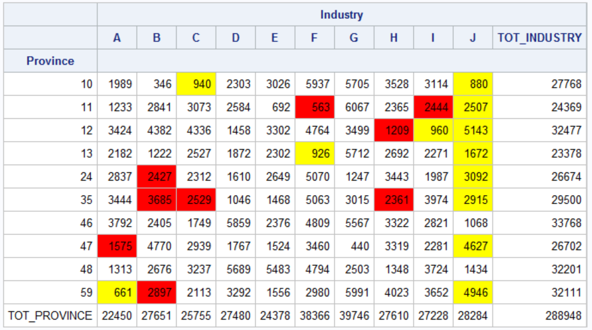
We see that 12 cells were selected for complementary suppression. 8 cells are now suppressed in column J, while no cells were suppressed in this column in our first suppression pattern. Note as well that gconfid.Suppression did not select all cells in column J for suppression, only the ones that could be used to protect sensitive cells.
Example 2B: Favouring publication of certain cells¶
Let’s now assume that we want to favour the publication of certain cells in our table (without forcing it). The idea here is to assign a higher cost to the cells we want to publish. For this example, we’ll assume that we want to favour both suppression of cells for industry J and publication of cells for province 12. There are different ways to give some cells a higher cost, but it is generally recommended that the cost variable not exceed the value of a cell’s smallest margin. For simplicity, we decided to assign a value of 22,000 for the cost variable of cells for province 12 (including J12). The following suppression pattern is generated:
def compute_cvar_J12(row):
if row['Industry'] == 'J' and row['Province'] not in ['TOT_PROVINCE', '12']:
return 1
elif row['Province'] == '12':
return 22000
else:
return row['TotalNoise']
example.outcell['cvar_J12'] = example.outcell.apply(compute_cvar_J12, axis=1)
result=gconfid.Suppression(
incell=example.outcell,
inconstraint=example.outconstraint,
outsuppress="pandas",
cost_function1="digits",
cost_var1="cvar_J12" # Specifying the cost variable to use
)
#result.outsuppress.to_excel("Files/output2B.xlsx")
Time zone for log entries: Eastern Daylight Time (UTC-4.0)
Loading input datasets
[TIME] TOTAL load input: 0.000 seconds (WALL), 0.000 seconds (CPU)
Pre Execute
[TIME] TOTAL pre execute: 0.036 seconds (WALL), 0.047 seconds (CPU)
Execute
====================================================================================================
G-Confid Version : 2.0.0b15
Support Email : statcan.gconfid-gconfid.statcan@statcan.gc.ca
Start Time : Mon Apr 20 10:08:03 2026 (Eastern Daylight Time)
====================================================================================================
Phase 1 iteration: 0 CurrentCell: 58.0 cells_to_treat: 9
Loading input datasets
[TIME] TOTAL load input: 0.000 seconds (WALL), 0.000 seconds (CPU)
Pre Execute
[TIME] TOTAL pre execute: 0.036 seconds (WALL), 0.047 seconds (CPU)
Execute
====================================================================================================
G-Confid Version : 2.0.0b15
Support Email : statcan.gconfid-gconfid.statcan@statcan.gc.ca
Start Time : Mon Apr 20 10:08:03 2026 (Eastern Daylight Time)
====================================================================================================
Phase 1 iteration: 0 CurrentCell: 58.0 cells_to_treat: 9
Phase 1 iteration: 1 CurrentCell: 71.0 cells_to_treat: 6
Phase 1 iteration: 2 CurrentCell: 92.0 cells_to_treat: 5
Phase 1 iteration: 3 CurrentCell: 53.0 cells_to_treat: 4
Phase 1 iteration: 4 CurrentCell: 19.0 cells_to_treat: 3
Phase 1 iteration: 5 CurrentCell: 16.0 cells_to_treat: 2
Phase 1 iteration: 6 CurrentCell: 28.0 cells_to_treat: 1
****************************************************************************************************
Summary of the suppression process phase 1:
Number Value Percent of total number of cells
=========================== ========== ========== ================================
All suppressed cells 21.00 49958.00 17.36
Suppressed sensitive cells 9.00 19690.00 7.44
Suppressed complements 12.00 30268.00 9.92
Cells suppressed by user 0.00 0.00 0.00
Suppressed aggregates 0.00 0.00 0.00
Published cells 100.00 1105834.00 82.64
****************************************************************************************************
Phase 1 Time: 0:00:00.20
****************************************************************************************************
Summary of the entire suppression process:
Number Value Percent of total number of cells
=========================== ========== ========== ================================
All suppressed cells 21.00 49958.00 17.36
Suppressed sensitive cells 9.00 19690.00 7.44
Suppressed complements 12.00 30268.00 9.92
Cells suppressed by user 0.00 0.00 0.00
Suppressed aggregates 0.00 0.00 0.00
Published cells 100.00 1105834.00 82.64
****************************************************************************************************
====================================================================================================
Total number of cell suppressed: 21
Total value amount suppressed: 49958.0
Total duration: 0:00:00.23
====================================================================================================
G-Confid suppress completed: Mon Apr 20 10:08:03 2026 (Eastern Daylight Time)
====================================================================================================
[TIME] TOTAL execute: 0.248 seconds (WALL), 0.156 seconds (CPU)
Post Execute
[TIME] TOTAL post execute: 0.000 seconds (WALL), 0.000 seconds (CPU)
Free input datasets
[TIME] TOTAL free input: 0.000 seconds (WALL), 0.000 seconds (CPU)
Write output datasets
[TIME] TOTAL write output: 0.024 seconds (WALL), 0.000 seconds (CPU)
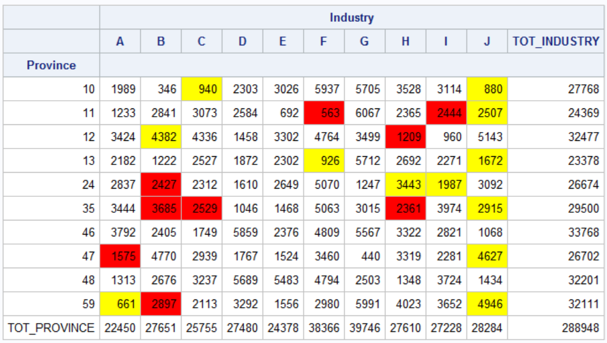
If we look at province 12, we see that the only change is that cell I12 is now published. Cell H12 remains suppressed since it is a sensitive cell, and cell A12, although it has a high cost (22,000), was still selected for complementary suppression.
This shows that changing our cost variable this way does not guarantee that the cells we want to favour for publication will actually be published. We will see later how to force G-Confid to publish certain cells.
Example 3A: Forcing suppression of certain cells¶
In practice, we may absolutely want to suppress certain cells, whether or not they are sensitive. This may be the case, for example, if we know that certain cells will be suppressed anyway due to quality.
We can tell G-Confid that certain cells must be suppressed, even if they are not sensitive. To do this, we simply set the status of the cells that must be suppressed to “X” in our Outcell file. Let’s suppose in this example that the cells of industry A and provinces 46, 47 and 48 must be suppressed. Keeping the same cost variable as in Example 2B generates the following suppression pattern:
example.outcell['Status'] = example.outcell.apply(
lambda row: 'X' if row['Industry'] == 'A' and row['Province'] in ['46', '47', '48'] else row['Status'],
axis=1
)
result=gconfid.Suppression(
incell=example.outcell,
inconstraint=example.outconstraint,
outsuppress="pandas",
cost_function1="digits",
cost_var1="cvar_J12" # Specifying the cost variable to use
)
#result.outsuppress.to_excel("Files/output3A.xlsx")
Time zone for log entries: Eastern Daylight Time (UTC-4.0)
Loading input datasets
[TIME] TOTAL load input: 0.000 seconds (WALL), 0.000 seconds (CPU)
Loading input datasets
[TIME] TOTAL load input: 0.000 seconds (WALL), 0.000 seconds (CPU)
Pre Execute
During validation of incell the following warnings occured:
2026-04-20 10:09:16,821 [WARNING]: DataFrameSchema 'SuppressIncellModel' failed element-wise validator number 0: Some cells have a status of 'V' or 'X' and have a positive sensitivity. Those cells will be treated as sensitive. failure cases: 71.0, 0.0, 0.0, 5.0, 1575.0, 78.99999999999977, X, C, 1575.0, 47, A, 1575.0, 1575.0
[TIME] TOTAL pre execute: 0.060 seconds (WALL), 0.062 seconds (CPU)
Execute
====================================================================================================
G-Confid Version : 2.0.0b15
Support Email : statcan.gconfid-gconfid.statcan@statcan.gc.ca
Start Time : Mon Apr 20 10:09:16 2026 (Eastern Daylight Time)
====================================================================================================
Phase 1 iteration: 0 CurrentCell: 58.0 cells_to_treat: 9
Phase 1 iteration: 1 CurrentCell: 71.0 cells_to_treat: 6
Phase 1 iteration: 2 CurrentCell: 92.0 cells_to_treat: 5
Phase 1 iteration: 3 CurrentCell: 53.0 cells_to_treat: 4
Phase 1 iteration: 4 CurrentCell: 19.0 cells_to_treat: 3
Phase 1 iteration: 5 CurrentCell: 16.0 cells_to_treat: 2
Phase 1 iteration: 6 CurrentCell: 28.0 cells_to_treat: 1
****************************************************************************************************
Summary of the suppression process phase 1:
Number Value Percent of total number of cells
=========================== ========== ========== ================================
All suppressed cells 22.00 56321.00 18.18
Suppressed sensitive cells 9.00 19690.00 7.44
Suppressed complements 11.00 31526.00 9.09
Cells suppressed by user 2.00 5105.00 1.65
Suppressed aggregates 0.00 0.00 0.00
Published cells 99.00 1099471.00 81.82
****************************************************************************************************
Phase 1 Time: 0:00:00.16
****************************************************************************************************
Summary of the entire suppression process:
Number Value Percent of total number of cells
=========================== ========== ========== ================================
All suppressed cells 22.00 56321.00 18.18
Suppressed sensitive cells 9.00 19690.00 7.44
Suppressed complements 11.00 31526.00 9.09
Cells suppressed by user 2.00 5105.00 1.65
Suppressed aggregates 0.00 0.00 0.00
Published cells 99.00 1099471.00 81.82
****************************************************************************************************
====================================================================================================
Total number of cell suppressed: 22
Total value amount suppressed: 56321.0
Total duration: 0:00:00.20
====================================================================================================
G-Confid suppress completed: Mon Apr 20 10:09:17 2026 (Eastern Daylight Time)
====================================================================================================
[TIME] TOTAL execute: 0.217 seconds (WALL), 0.062 seconds (CPU)
Post Execute
[TIME] TOTAL post execute: 0.000 seconds (WALL), 0.000 seconds (CPU)
Free input datasets
[TIME] TOTAL free input: 0.000 seconds (WALL), 0.000 seconds (CPU)
Write output datasets
[TIME] TOTAL write output: 0.019 seconds (WALL), 0.000 seconds (CPU)
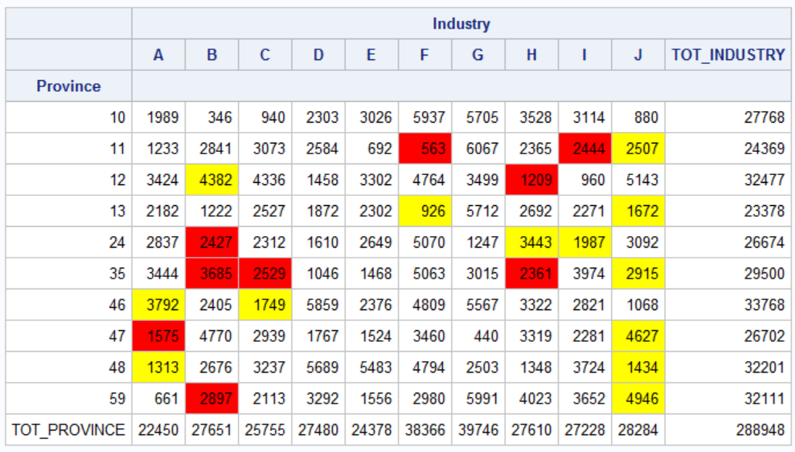
We see that cells A46, A47 and A48 are indeed suppressed. Cell A47 was already sensitive, so it continues to be displayed in red. The rest of the suppression pattern is still trying to favour suppression of cells in column J and publication of in row 12.
3B: Forcing publication of certain cells¶
We may also want to force G-Confid to publish certain cells if, for example, they are considered especially important to publish. Let’s suppose that in addition to forcing suppression of cells A46, A47 and A48, we also want to force publication of the cells in row 13. As in the previous example, constraints can be added to the Outcell file. To force publication of a cell, it is given a status of “P”. This generates the following suppression pattern:
example.outcell.loc[example.outcell['Province'] == '13', 'Status'] = 'P'
result=gconfid.Suppression(
incell=example.outcell,
inconstraint=example.outconstraint,
outsuppress="pandas",
cost_function1="digits",
cost_var1="cvar_J12" # Specifying the cost variable to use
)
#result.outsuppress.to_excel("Files/output3B.xlsx")
Time zone for log entries: Eastern Daylight Time (UTC-4.0)
Loading input datasets
[TIME] TOTAL load input: 0.000 seconds (WALL), 0.000 seconds (CPU)
Pre Execute
During validation of incell the following warnings occured:
2026-04-20 10:29:54,212 [WARNING]: DataFrameSchema 'SuppressIncellModel' failed element-wise validator number 0: Some cells have a status of 'V' or 'X' and have a positive sensitivity. Those cells will be treated as sensitive. failure cases: 71.0, 0.0, 0.0, 5.0, 1575.0, 78.99999999999977, X, C, 1575.0, 47, A, 1575.0, 1575.0
Loading input datasets
[TIME] TOTAL load input: 0.000 seconds (WALL), 0.000 seconds (CPU)
Pre Execute
During validation of incell the following warnings occured:
2026-04-20 10:29:54,212 [WARNING]: DataFrameSchema 'SuppressIncellModel' failed element-wise validator number 0: Some cells have a status of 'V' or 'X' and have a positive sensitivity. Those cells will be treated as sensitive. failure cases: 71.0, 0.0, 0.0, 5.0, 1575.0, 78.99999999999977, X, C, 1575.0, 47, A, 1575.0, 1575.0
[TIME] TOTAL pre execute: 0.051 seconds (WALL), 0.031 seconds (CPU)
Execute
====================================================================================================
G-Confid Version : 2.0.0b15
Support Email : statcan.gconfid-gconfid.statcan@statcan.gc.ca
Start Time : Mon Apr 20 10:29:54 2026 (Eastern Daylight Time)
====================================================================================================
Phase 1 iteration: 0 CurrentCell: 58.0 cells_to_treat: 9
Phase 1 iteration: 1 CurrentCell: 71.0 cells_to_treat: 6
Phase 1 iteration: 2 CurrentCell: 92.0 cells_to_treat: 5
Phase 1 iteration: 3 CurrentCell: 53.0 cells_to_treat: 4
Phase 1 iteration: 4 CurrentCell: 19.0 cells_to_treat: 3
Phase 1 iteration: 5 CurrentCell: 16.0 cells_to_treat: 2
Phase 1 iteration: 6 CurrentCell: 28.0 cells_to_treat: 1
****************************************************************************************************
Summary of the suppression process phase 1:
Number Value Percent of total number of cells
=========================== ========== ========== ================================
All suppressed cells 21.00 56324.00 17.36
Suppressed sensitive cells 9.00 19690.00 7.44
Suppressed complements 10.00 31529.00 8.26
Cells suppressed by user 2.00 5105.00 1.65
Suppressed aggregates 0.00 0.00 0.00
Published cells 100.00 1099468.00 82.64
****************************************************************************************************
Phase 1 Time: 0:00:00.31
****************************************************************************************************
Summary of the entire suppression process:
Number Value Percent of total number of cells
=========================== ========== ========== ================================
All suppressed cells 21.00 56324.00 17.36
Suppressed sensitive cells 9.00 19690.00 7.44
Suppressed complements 10.00 31529.00 8.26
Cells suppressed by user 2.00 5105.00 1.65
Suppressed aggregates 0.00 0.00 0.00
Published cells 100.00 1099468.00 82.64
****************************************************************************************************
====================================================================================================
Total number of cell suppressed: 21
Total value amount suppressed: 56324.0
Total duration: 0:00:00.34
====================================================================================================
G-Confid suppress completed: Mon Apr 20 10:29:54 2026 (Eastern Daylight Time)
====================================================================================================
[TIME] TOTAL execute: 0.420 seconds (WALL), 0.125 seconds (CPU)
Post Execute
[TIME] TOTAL post execute: 0.000 seconds (WALL), 0.000 seconds (CPU)
Free input datasets
[TIME] TOTAL free input: 0.000 seconds (WALL), 0.000 seconds (CPU)
Write output datasets
[TIME] TOTAL write output: 0.026 seconds (WALL), 0.016 seconds (CPU)
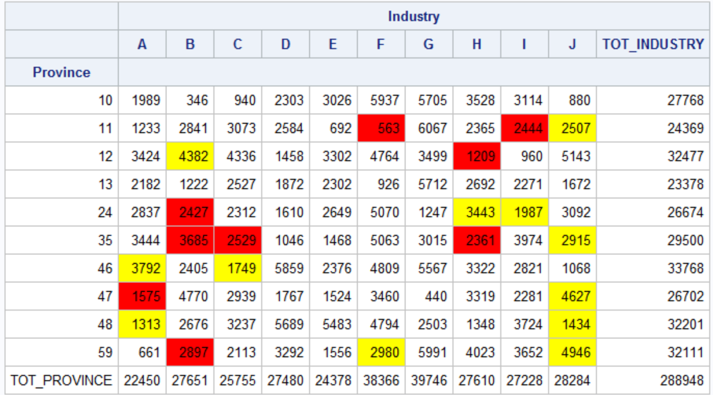
As might be expected, no cell was selected for suppression in row 13. So here we have a suppression pattern that reflects all the following constraints:
- Favour suppression of cells in column J
- Favour publication of cells in row 12
- Force suppression of cells A46, A47 and A48
- Force publication of cells in row 13
Of course, we did not need to go through examples 2A, 2B and 3A to get to this result. We simply did this to show users
how a suppression pattern can be influenced by adding each of our different constraints. In practice, we generally put all
our constraints together in the gconfid.Suppression
Finally, it should be noted that it is impossible to force the publication of a sensitive cell. If this is requested in the
gconfid.Suppression, an error message similar to the one below is displayed:
ERROR: SUPPRESS: Status is 'P' for a sensitive cell
Example 4: Cost functions¶
In the previous example, we saw that the cost variable can be modified to facour the suppression or publication of certain cells. In gconfid.Suppression, we also have the option of choosing a cost function. The following cost function are incluced in G-Confid: size, digits, information, constant, digits. Below is a summary table of the four cost functions.
| Name | Definition | Effect |
|---|---|---|
| Size | CVar | A cell with a high total has a higher cost. This results in further suppressing small cells. |
| Digits | $log_{10}$(𝐶𝑉𝑎𝑟+1) | A variant of SIZE. It also favours suppression of small cells, but tends to produce better suppression patterns than SIZE for the number of suppressed cells. |
| Information | $\frac{log_{10}(CVar + 1)}{(Cvar + 1)}$ | A cell with a small total has a higher cost. This results in favouring publication of small cells. |
| Constant | 1 | All cells cost the same |
| Inverse | 0 when Cvar = 0 $\frac{1}{(1+CVar)}$ when Cvar > 0 |
This has simiar effect as Information, it may be more stable when you have wide range of inputs. |
We generally use SIZE or DIGITS for phase 1 in gconfid.Suppression because we want to favour suppression of small cells, and
therefore give them a lower cost. In general, DIGITS should perform better than SIZE in terms of the number of
suppressed cells, while SIZE should perform better than DIGITS in terms of information loss. Of course, the performance
of each depends on data and constraints. This means that there is no guarantee that SIZE will always lose less
information than DIGITS or that DIGITS will always suppress fewer cells than SIZE.
The INFORMATION cost function is normally used in phase 2 of the gconfid.Suppression (we will see how it works soon).
Finally, the CONSTANT cost function is not particularly useful in the context of magnitude data. It is used more with
counts. Therefore, we will not discuss it in this set of examples.
Inverse are newly added to the python version of G-Confid. It is also normally used in phase 2. It can sometimes be more stable comapred to information cost function.
There are also experimental cost fucntion that added to the python version of G-Confid
- ScaledInformation: multiply the information cost by the mean of CVar, then rounded to 3 decimal points
- RoundedSize: Round the size cost to
P1RoundingBasewhich is one of the optional parameters. For example,size_roundingbase = 2will round to 2 decimal points - ScaledInverse: multiply the inverse cost by the mean of CVar, then rounded to 3 decimal points
Now let’s compare the suppression patterns generated using the DIGITS versus SIZE cost function. We are still using the same four constraints as in Example 3B
result=gconfid.Suppression(
incell=example.outcell,
inconstraint=example.outconstraint,
outsuppress="pandas",
cost_function1="digits",
cost_var1="cvar_J12" # Specifying the cost variable to use
)
#result.outsuppress.to_excel("Files/outputdigits.xlsx")
Time zone for log entries: Eastern Daylight Time (UTC-4.0)
Loading input datasets
[TIME] TOTAL load input: 0.000 seconds (WALL), 0.000 seconds (CPU)
Pre Execute
During validation of incell the following warnings occured:
Loading input datasets
[TIME] TOTAL load input: 0.000 seconds (WALL), 0.000 seconds (CPU)
Pre Execute
During validation of incell the following warnings occured:
2026-04-20 10:30:16,314 [WARNING]: DataFrameSchema 'SuppressIncellModel' failed element-wise validator number 0: Some cells have a status of 'V' or 'X' and have a positive sensitivity. Those cells will be treated as sensitive. failure cases: 71.0, 0.0, 0.0, 5.0, 1575.0, 78.99999999999977, X, C, 1575.0, 47, A, 1575.0, 1575.0
[TIME] TOTAL pre execute: 0.044 seconds (WALL), 0.062 seconds (CPU)
Execute
====================================================================================================
G-Confid Version : 2.0.0b15
Support Email : statcan.gconfid-gconfid.statcan@statcan.gc.ca
Start Time : Mon Apr 20 10:30:16 2026 (Eastern Daylight Time)
====================================================================================================
Phase 1 iteration: 0 CurrentCell: 58.0 cells_to_treat: 9
Phase 1 iteration: 1 CurrentCell: 71.0 cells_to_treat: 6
Phase 1 iteration: 2 CurrentCell: 92.0 cells_to_treat: 5
Phase 1 iteration: 3 CurrentCell: 53.0 cells_to_treat: 4
Phase 1 iteration: 4 CurrentCell: 19.0 cells_to_treat: 3
Phase 1 iteration: 5 CurrentCell: 16.0 cells_to_treat: 2
Phase 1 iteration: 6 CurrentCell: 28.0 cells_to_treat: 1
****************************************************************************************************
Summary of the suppression process phase 1:
Number Value Percent of total number of cells
=========================== ========== ========== ================================
All suppressed cells 21.00 56324.00 17.36
Suppressed sensitive cells 9.00 19690.00 7.44
Suppressed complements 10.00 31529.00 8.26
Cells suppressed by user 2.00 5105.00 1.65
Suppressed aggregates 0.00 0.00 0.00
Published cells 100.00 1099468.00 82.64
****************************************************************************************************
Phase 1 Time: 0:00:00.27
****************************************************************************************************
Summary of the entire suppression process:
Number Value Percent of total number of cells
=========================== ========== ========== ================================
All suppressed cells 21.00 56324.00 17.36
Suppressed sensitive cells 9.00 19690.00 7.44
Suppressed complements 10.00 31529.00 8.26
Cells suppressed by user 2.00 5105.00 1.65
Suppressed aggregates 0.00 0.00 0.00
Published cells 100.00 1099468.00 82.64
****************************************************************************************************
====================================================================================================
Total number of cell suppressed: 21
Total value amount suppressed: 56324.0
Total duration: 0:00:00.30
====================================================================================================
G-Confid suppress completed: Mon Apr 20 10:30:16 2026 (Eastern Daylight Time)
====================================================================================================
[TIME] TOTAL execute: 0.307 seconds (WALL), 0.078 seconds (CPU)
Post Execute
[TIME] TOTAL post execute: 0.000 seconds (WALL), 0.000 seconds (CPU)
Free input datasets
[TIME] TOTAL free input: 0.000 seconds (WALL), 0.000 seconds (CPU)
Write output datasets
[TIME] TOTAL write output: 0.008 seconds (WALL), 0.000 seconds (CPU)
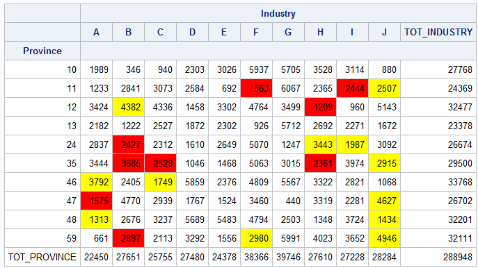
result=gconfid.Suppression(
incell=example.outcell,
inconstraint=example.outconstraint,
outsuppress="pandas",
cost_function1="size",
cost_var1="cvar_J12" # Specifying the cost variable to use
)
#result.outsuppress.to_excel("Files/outputsize.xlsx")
Time zone for log entries: Eastern Daylight Time (UTC-4.0)
Loading input datasets
[TIME] TOTAL load input: 0.000 seconds (WALL), 0.000 seconds (CPU)
Loading input datasets
[TIME] TOTAL load input: 0.000 seconds (WALL), 0.000 seconds (CPU)
Pre Execute
During validation of incell the following warnings occured:
2026-04-20 10:30:29,090 [WARNING]: DataFrameSchema 'SuppressIncellModel' failed element-wise validator number 0: Some cells have a status of 'V' or 'X' and have a positive sensitivity. Those cells will be treated as sensitive. failure cases: 71.0, 0.0, 0.0, 5.0, 1575.0, 78.99999999999977, X, C, 1575.0, 47, A, 1575.0, 1575.0
[TIME] TOTAL pre execute: 0.058 seconds (WALL), 0.016 seconds (CPU)
Execute
====================================================================================================
G-Confid Version : 2.0.0b15
Support Email : statcan.gconfid-gconfid.statcan@statcan.gc.ca
Start Time : Mon Apr 20 10:30:29 2026 (Eastern Daylight Time)
====================================================================================================
Phase 1 iteration: 0 CurrentCell: 58.0 cells_to_treat: 9
Phase 1 iteration: 1 CurrentCell: 71.0 cells_to_treat: 6
Phase 1 iteration: 2 CurrentCell: 42.0 cells_to_treat: 5
Phase 1 iteration: 3 CurrentCell: 53.0 cells_to_treat: 4
Phase 1 iteration: 4 CurrentCell: 19.0 cells_to_treat: 3
Phase 1 iteration: 5 CurrentCell: 16.0 cells_to_treat: 2
Phase 1 iteration: 6 CurrentCell: 28.0 cells_to_treat: 1
****************************************************************************************************
Summary of the suppression process phase 1:
Number Value Percent of total number of cells
=========================== ========== ========== ================================
All suppressed cells 22.00 53872.00 18.18
Suppressed sensitive cells 9.00 19690.00 7.44
Suppressed complements 11.00 29077.00 9.09
Cells suppressed by user 2.00 5105.00 1.65
Suppressed aggregates 0.00 0.00 0.00
Published cells 99.00 1101920.00 81.82
****************************************************************************************************
Phase 1 Time: 0:00:00.50
****************************************************************************************************
Summary of the entire suppression process:
Number Value Percent of total number of cells
=========================== ========== ========== ================================
All suppressed cells 22.00 53872.00 18.18
Suppressed sensitive cells 9.00 19690.00 7.44
Suppressed complements 11.00 29077.00 9.09
Cells suppressed by user 2.00 5105.00 1.65
Suppressed aggregates 0.00 0.00 0.00
Published cells 99.00 1101920.00 81.82
****************************************************************************************************
====================================================================================================
Total number of cell suppressed: 22
Total value amount suppressed: 53872.0
Total duration: 0:00:00.52
====================================================================================================
G-Confid suppress completed: Mon Apr 20 10:30:29 2026 (Eastern Daylight Time)
====================================================================================================
[TIME] TOTAL execute: 0.534 seconds (WALL), 0.078 seconds (CPU)
Post Execute
[TIME] TOTAL post execute: 0.000 seconds (WALL), 0.000 seconds (CPU)
Free input datasets
[TIME] TOTAL free input: 0.000 seconds (WALL), 0.000 seconds (CPU)
Write output datasets
[TIME] TOTAL write output: 0.002 seconds (WALL), 0.000 seconds (CPU)
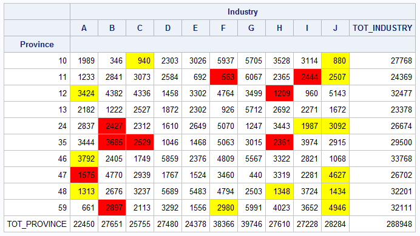
We see that the suppression patterns are quite similar for our two cost functions. However, we observe that there are 22 cells suppressed with SIZE, while there were 21 cells suppressed with DIGITS. Adding all suppressed cells in our tables yields 55765.0 with the DIGITS function and 52960.0 with the SIZE function. As a result, one less cell was suppressed with DIGITS, but less information was suppressed with SIZE
Example 5: Using a second phase¶
In practice, a second phase is generally used in gconfid.Suppression to take another look at the cells selected for secondary suppression and see if it would be possible to avoid suppressing some of them. Typically, it is possible to avoid suppressing small cells. For this reason, the INFORMATION cost function, which favours small cell publication, is
normally used in phase 2. Thus, small cells unnecessarily suppressed in phase 1 can be recovered in phase 2. It is also possible to specify a cost variable in phase 2, but it is recommended to keep the default cost variable, i.e. the cell total. We will now show what happens to the suppression pattern when phase 2 is added. We are going to try it with the
DIGITS and SIZE cost functions so we can compare them with Example 4
result=gconfid.Suppression(
incell=example.outcell,
inconstraint=example.outconstraint,
outsuppress="pandas",
cost_function1="digits",
cost_function2="information",
cost_var1="cvar_J12" # Specifying the cost variable to use
)
#result.outsuppress.to_excel("Files/outputdigitsphase2.xlsx")
Time zone for log entries: Eastern Daylight Time (UTC-4.0)
Loading input datasets
[TIME] TOTAL load input: 0.000 seconds (WALL), 0.000 seconds (CPU)
Pre Execute
During validation of incell the following warnings occured:
2026-04-20 10:30:44,652 [WARNING]: DataFrameSchema 'SuppressIncellModel' failed element-wise validator number 0: Some cells have a status of 'V' or 'X' and have a positive sensitivity. Those cells will be treated as sensitive. failure cases: 71.0, 0.0, 0.0, 5.0, 1575.0, 78.99999999999977, X, C, 1575.0, 47, A, 1575.0, 1575.0
[TIME] TOTAL pre execute: 0.061 seconds (WALL), 0.031 seconds (CPU)
Execute
====================================================================================================
G-Confid Version : 2.0.0b15
Support Email : statcan.gconfid-gconfid.statcan@statcan.gc.ca
Start Time : Mon Apr 20 10:30:44 2026 (Eastern Daylight Time)
====================================================================================================
Phase 1 iteration: 0 CurrentCell: 58.0 cells_to_treat: 9
Phase 1 iteration: 1 CurrentCell: 71.0 cells_to_treat: 6
Phase 1 iteration: 2 CurrentCell: 92.0 cells_to_treat: 5
Phase 1 iteration: 3 CurrentCell: 53.0 cells_to_treat: 4
Phase 1 iteration: 4 CurrentCell: 19.0 cells_to_treat: 3
Phase 1 iteration: 5 CurrentCell: 16.0 cells_to_treat: 2
Phase 1 iteration: 6 CurrentCell: 28.0 cells_to_treat: 1
****************************************************************************************************
Summary of the suppression process phase 1:
Number Value Percent of total number of cells
=========================== ========== ========== ================================
All suppressed cells 21.00 56324.00 17.36
Suppressed sensitive cells 9.00 19690.00 7.44
Suppressed complements 10.00 31529.00 8.26
Cells suppressed by user 2.00 5105.00 1.65
Suppressed aggregates 0.00 0.00 0.00
Published cells 100.00 1099468.00 82.64
****************************************************************************************************
Phase 1 Time: 0:00:00.48
Phase 2 iteration: 0 CurrentCell: 58.0 cells_to_treat: 9
Phase 2 iteration: 1 CurrentCell: 71.0 cells_to_treat: 6
Phase 2 iteration: 2 CurrentCell: 92.0 cells_to_treat: 5
Phase 2 iteration: 3 CurrentCell: 53.0 cells_to_treat: 4
Phase 2 iteration: 4 CurrentCell: 19.0 cells_to_treat: 3
Phase 2 Time: 0:00:00.01
****************************************************************************************************
Summary of the entire suppression process (after phase 2):
Number Value Percent of total number of cells
=========================== ========== ========== ================================
All suppressed cells 19.00 50837.00 15.70
Suppressed sensitive cells 9.00 19690.00 7.44
Suppressed complements 8.00 26042.00 6.61
Cells suppressed by user 2.00 5105.00 1.65
Suppressed aggregates 0.00 0.00 0.00
Published cells 102.00 1104955.00 84.30
****************************************************************************************************
====================================================================================================
Total number of cell suppressed: 19
Total value amount suppressed: 50837.0
Total duration: 0:00:00.61
====================================================================================================
G-Confid suppress completed: Mon Apr 20 10:30:45 2026 (Eastern Daylight Time)
====================================================================================================
[TIME] TOTAL execute: 0.622 seconds (WALL), 0.094 seconds (CPU)
Post Execute
[TIME] TOTAL post execute: 0.000 seconds (WALL), 0.000 seconds (CPU)
Free input datasets
[TIME] TOTAL free input: 0.000 seconds (WALL), 0.000 seconds (CPU)
Write output datasets
[TIME] TOTAL write output: 0.004 seconds (WALL), 0.000 seconds (CPU)
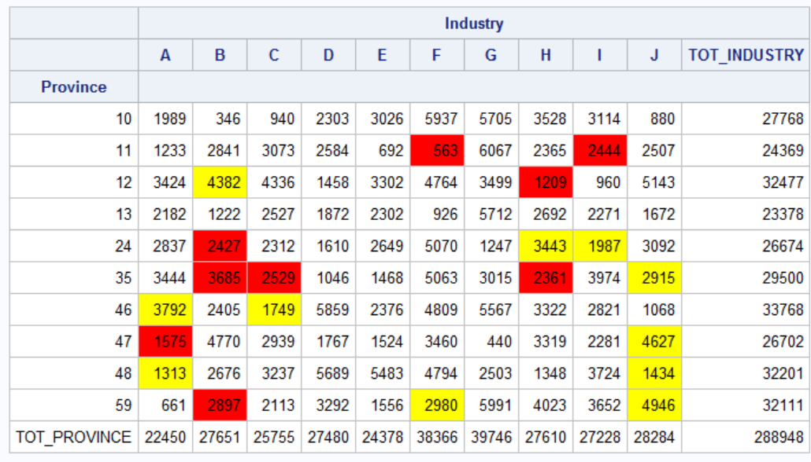
result=gconfid.Suppression(
incell=example.outcell,
inconstraint=example.outconstraint,
outsuppress="pandas",
cost_function1="size",
cost_function2="information",
cost_var1="cvar_J12" # Specifying the cost variable to use
)
#result.outsuppress.to_excel("Files/outputsizephase2.xlsx")
Time zone for log entries: Eastern Daylight Time (UTC-4.0)
Loading input datasets
[TIME] TOTAL load input: 0.000 seconds (WALL), 0.000 seconds (CPU)
Pre Execute
Loading input datasets
[TIME] TOTAL load input: 0.000 seconds (WALL), 0.000 seconds (CPU)
Pre Execute
During validation of incell the following warnings occured:
2026-04-20 10:31:01,805 [WARNING]: DataFrameSchema 'SuppressIncellModel' failed element-wise validator number 0: Some cells have a status of 'V' or 'X' and have a positive sensitivity. Those cells will be treated as sensitive. failure cases: 71.0, 0.0, 0.0, 5.0, 1575.0, 78.99999999999977, X, C, 1575.0, 47, A, 1575.0, 1575.0
[TIME] TOTAL pre execute: 0.048 seconds (WALL), 0.047 seconds (CPU)
Execute
====================================================================================================
G-Confid Version : 2.0.0b15
Support Email : statcan.gconfid-gconfid.statcan@statcan.gc.ca
Start Time : Mon Apr 20 10:31:01 2026 (Eastern Daylight Time)
====================================================================================================
Phase 1 iteration: 0 CurrentCell: 58.0 cells_to_treat: 9
Phase 1 iteration: 1 CurrentCell: 71.0 cells_to_treat: 6
Phase 1 iteration: 2 CurrentCell: 42.0 cells_to_treat: 5
Phase 1 iteration: 3 CurrentCell: 53.0 cells_to_treat: 4
Phase 1 iteration: 4 CurrentCell: 19.0 cells_to_treat: 3
Phase 1 iteration: 5 CurrentCell: 16.0 cells_to_treat: 2
Phase 1 iteration: 6 CurrentCell: 28.0 cells_to_treat: 1
****************************************************************************************************
Summary of the suppression process phase 1:
Number Value Percent of total number of cells
=========================== ========== ========== ================================
All suppressed cells 22.00 53872.00 18.18
Suppressed sensitive cells 9.00 19690.00 7.44
Suppressed complements 11.00 29077.00 9.09
Cells suppressed by user 2.00 5105.00 1.65
Suppressed aggregates 0.00 0.00 0.00
Published cells 99.00 1101920.00 81.82
****************************************************************************************************
Phase 1 Time: 0:00:00.30
Phase 2 iteration: 0 CurrentCell: 58.0 cells_to_treat: 9
Phase 2 iteration: 1 CurrentCell: 52.0 cells_to_treat: 6
Phase 2 iteration: 2 CurrentCell: 42.0 cells_to_treat: 3
Phase 2 iteration: 3 CurrentCell: 19.0 cells_to_treat: 2
Phase 2 Time: 0:00:00.06
****************************************************************************************************
Summary of the entire suppression process (after phase 2):
Number Value Percent of total number of cells
=========================== ========== ========== ================================
All suppressed cells 18.00 48111.00 14.88
Suppressed sensitive cells 9.00 19690.00 7.44
Suppressed complements 7.00 23316.00 5.79
Cells suppressed by user 2.00 5105.00 1.65
Suppressed aggregates 0.00 0.00 0.00
Published cells 103.00 1107681.00 85.12
****************************************************************************************************
====================================================================================================
Total number of cell suppressed: 18
Total value amount suppressed: 48111.0
Total duration: 0:00:00.40
====================================================================================================
G-Confid suppress completed: Mon Apr 20 10:31:02 2026 (Eastern Daylight Time)
====================================================================================================
[TIME] TOTAL execute: 0.411 seconds (WALL), 0.125 seconds (CPU)
Post Execute
[TIME] TOTAL post execute: 0.000 seconds (WALL), 0.000 seconds (CPU)
Free input datasets
[TIME] TOTAL free input: 0.000 seconds (WALL), 0.000 seconds (CPU)
Write output datasets
[TIME] TOTAL write output: 0.007 seconds (WALL), 0.016 seconds (CPU)
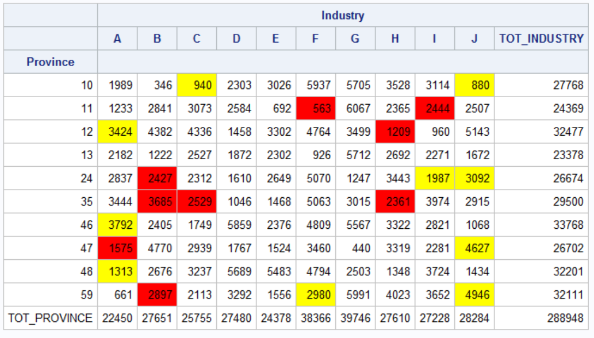
We see that using phase 2 resulted in the release of cells in both tables. In the Size table there are now 19 cells (Was 22) suppressed. In the Digits table, there are 20 cells (was 21) suppressed. This example shows how it may be beneficial to use the INFORMATION cost function in phase 2.
Additional notes¶
avouring or forcing suppression/publication?
One might ask whether it is preferable to force suppression/publication of a cell by modifying the Outcell file or whether it would be possible to simply use the cost variable to favour the suppression/publication of our cells. This decision is at the discretion of the user, but it is important to know the advantages and disadvantages of each method.
Forcing suppression/publication using an “X/P” status in Outcell:
- Advantages:
- There is the certainty that the cells selected for suppression will actually be suppressed.
- There is the certainty that the cells selected for publication will actually be published.
- Disadvantages:
- If there are too many constraints, the
gconfid.Suppressionmay not find a solution for our suppression pattern. - You might end up with a suppression pattern that suppresses more information than necessary if cell suppression is exaggerated.
- If there are too many constraints, the
Using the cost variable:
- Advantages:
- The
gconfid.Suppressionshould be able to find a solution for our suppression pattern because it is free to choose any cell for suppression. - Cells that cannot be used to protect others will not be unnecessarily suppressed, even if they have been given a very low cost.
- The
- Disadvantages:
- Cells that we may prefer to have published will not necessarily be published.
- Same principle for suppressed cells.
Of course, regardless of the situation, it is entirely possible to run the gconfid.Suppression several times by changing certain parameters to find different suppression patterns and to choose the one that best suits our needs
Clarification of forced cell suppression
It is possible to force suppression of a cell using an “X” in the Outcell file, but this does not mean that it will be impossible to deduce this cell from the rest of the table. Indeed, if the suppression of a non-sensitive cell is forced, there is no obligation on G-Confid to protect that cell. For a cell to be protected, it must have positive sensitivity.
Examples 4 and 5 for the SIZE function show that cell A46 is suppressed but can be deduced from the rest of row 46. This means that this cell does not protect any sensitive cells and thus, theoretically, could be published without risk to the confidentiality of other cells in the table. Thus, unless there are other reasons to suppress this cell, it has been suppressed “for nothing” because its suppression does not protect any sensitive cells.
Of course, in a case where this cell would be suppressed anyway for quality reasons, for example, it would be entirely appropriate to force its suppression in the suppression pattern. At best, it may be useful at the complementary suppression stage. And, at worst, it will simply be suppressed, which was already its fate. Thus, there would be nothing to lose by forcing its suppression in this situation.
Should we use DIGITS or SIZE in phase 1 of secondary suppression?
As we saw earlier, DIGITS minimizes the number of cells chosen for suppression, while SIZE focuses on the total amount of information lost. In practice, however, this is not necessarily what is observed. Depending on the data and the constraints specified, one of the two cost functions may be more advantageous for both the number of cells suppressed and the information lost. By default, we recommend using DIGITS, but the two functions can always be tested separately and then the one that gives the best suppression pattern can be used
Using phase 2
Phase 2 is used to release cells suppressed unnecessarily in phase 1. At best, it will find several cells that can be released and, at worst, it will not be able to change anything in the phase 1 suppression pattern. Therefore, its use is highly recommended regardless of the type of problem encountered
2.10 Additive rounding¶
The Python G-Confid offers one modules that round tables of cells so that all segments (rows, columns) are additive. The module gconfid.OptRounding() leverages the PuLP package to find an optimal solution for its mixed integer linear programming problem.
Note that the macro %GCONFIDROUND is not available in the Python G-Confid version. We recommend %GCONFIDROUND to adapt to gconfid.OptRounding().
Creation of a fictitious data file Suppose we have a table containing frequencies by industry (1,2) and region (A, B, C).
data = {
'ID': ['01', '02', '03', '04', '05', '06'],
'Industry': ['1', '1', '1', '2', '2', '2'],
'Region': ['A', 'B', 'C', 'A', 'B', 'C'],
'Freq': [35, 3, 5, 6, 3, 9]
}
df = pd.DataFrame(data)
df
| ID | Industry | Region | Freq | |
|---|---|---|---|---|
| 0 | 01 | 1 | A | 35 |
| 1 | 02 | 1 | B | 3 |
| 2 | 03 | 1 | C | 5 |
| 3 | 04 | 2 | A | 6 |
| 4 | 05 | 2 | B | 3 |
| 5 | 06 | 2 | C | 9 |
We hence have for example a frequency of 35 enterprises in industry 1 and region A.
gconfid.sensitiv()¶
Because these are frequencies, we can use rounding to protect the data. To do this, we will first need to create some input data files that will be used in the macro gconfid.OptRounding(). It is possible to create these files by hand, but that can become tedious in the presence of complex or big data files. We will therefore show here how to use gconfid.Sensitiv() to create the wanted files more easily.
example = gconfid.sensitiv(
indata=df,
outcell = "pandas",
outconstraint= "pandas",
s_rule="arb -1",
hierarchy="""TOT_INDUSTRY 1 2;
TOT_REGION A B C;""",
unit_id="ID",
var="Freq",
dimension="Industry Region"
)
example.outcell
| CellId | NbAnonym | AnonymTotalVar | NbRespondents | TotalVar | Sensitivity | Status | Type | TotalNoise | Industry | Region | |
|---|---|---|---|---|---|---|---|---|---|---|---|
| 0 | 1.0 | 0.0 | 0.0 | 1.0 | 35.0 | -35.0 | V | C | 35.0 | 1 | A |
| 1 | 2.0 | 0.0 | 0.0 | 1.0 | 3.0 | -3.0 | V | C | 3.0 | 1 | B |
| 2 | 3.0 | 0.0 | 0.0 | 1.0 | 5.0 | -5.0 | V | C | 5.0 | 1 | C |
| 3 | 4.0 | 0.0 | 0.0 | 1.0 | 6.0 | -6.0 | V | C | 6.0 | 2 | A |
| 4 | 5.0 | 0.0 | 0.0 | 1.0 | 3.0 | -3.0 | V | C | 3.0 | 2 | B |
| 5 | 6.0 | 0.0 | 0.0 | 1.0 | 9.0 | -9.0 | V | C | 9.0 | 2 | C |
| 6 | 7.0 | 0.0 | 0.0 | 6.0 | 61.0 | -61.0 | V | C | 61.0 | TOT_INDUSTRY | TOT_REGION |
| 7 | 8.0 | 0.0 | 0.0 | 3.0 | 43.0 | -43.0 | V | C | 43.0 | 1 | TOT_REGION |
| 8 | 9.0 | 0.0 | 0.0 | 3.0 | 18.0 | -18.0 | V | C | 18.0 | 2 | TOT_REGION |
| 9 | 10.0 | 0.0 | 0.0 | 2.0 | 41.0 | -41.0 | V | C | 41.0 | TOT_INDUSTRY | A |
| 10 | 11.0 | 0.0 | 0.0 | 2.0 | 6.0 | -6.0 | V | C | 6.0 | TOT_INDUSTRY | B |
| 11 | 12.0 | 0.0 | 0.0 | 2.0 | 14.0 | -14.0 | V | C | 14.0 | TOT_INDUSTRY | C |
Before going further, note that any sensitivity rule could have been used here, since we don’t use gconfid.OptRounding() to evaluate the sensitivity. It’s only the structure of the frequency table that we are interested in (the linear constraints and the total of each cell, including the marginal cells).
Creation of the input files¶
We will now use the files provided by gconfid.sensitiv to produce the input files required by gconfid.OptRounding().
First, we need to identify the constraints from the Outconstraint file. In this case, we only have 7 constraints:
outconstraint2 = example.outconstraint.loc[example.outconstraint['Coefficient'] == -1, ['ConstraintId']]
outconstraint2
| ConstraintId | |
|---|---|
| 2 | 1.0 |
| 6 | 2.0 |
| 9 | 3.0 |
| 12 | 4.0 |
| 15 | 5.0 |
| 19 | 6.0 |
| 23 | 7.0 |
outcell2 = example.outcell.copy()
outcell2['Weight'] = 1
outcell2 = outcell2.rename(columns={'TotalVar': 'Total'})[['CellId', 'Total', 'Weight']]
outcell2
| CellId | Total | Weight | |
|---|---|---|---|
| 0 | 1.0 | 35.0 | 1 |
| 1 | 2.0 | 3.0 | 1 |
| 2 | 3.0 | 5.0 | 1 |
| 3 | 4.0 | 6.0 | 1 |
| 4 | 5.0 | 3.0 | 1 |
| 5 | 6.0 | 9.0 | 1 |
| 6 | 7.0 | 61.0 | 1 |
| 7 | 8.0 | 43.0 | 1 |
| 8 | 9.0 | 18.0 | 1 |
| 9 | 10.0 | 41.0 | 1 |
| 10 | 11.0 | 6.0 | 1 |
| 11 | 12.0 | 14.0 | 1 |
gconfid.OptRounding() result¶
Finally, we use the gconfid.OptRounding(). We need to specify the names of the Outconstraint file and the two updated files (Outcell2, Outconstraint2). We also need to specify the rounding base (here it is 5). Other parameters could have been included in the macro, but they are not shown here to keep the example simple. See 5.7 The gconfid.OptRounding() macro section for more information on the available parameters.
result = gconfid.OptRounding(
incell = outcell2,
additive_bound = outconstraint2,
additive_con = example.outconstraint,
outround="pandas",
base = 5
)
result.outround
Time zone for log entries: Eastern Daylight Time (UTC-4.0) Loading input datasets [TIME] TOTAL load input: 0.000 seconds (WALL), 0.000 seconds (CPU) Pre Execute [TIME] TOTAL pre execute: 0.022 seconds (WALL), 0.016 seconds (CPU) Execute ==================================================================================================== G-Confid Version : 2.0.0b15 Support Email : statcan.gconfid-gconfid.statcan@statcan.gc.ca Start Time : Mon Apr 20 11:10:16 2026 (Eastern Daylight Time) ==================================================================================================== CellUB was not present on the input dataset incell, assuming all values are to be missing CellLB was not present on the input dataset incell, assuming all values are to be missing ConstraintLB was not present on the input dataset additive_bound, assuming all values are to be 0 ConstraintUB was not present on the input dataset additive_bound, assuming all values are to be 0 Start solving LP... Status: Optimal The objective value is: 16.0 Total duration: 0:00:00.38 ==================================================================================================== G-Confid opt_round completed: Mon Apr 20 11:10:16 2026 (Eastern Daylight Time) ==================================================================================================== [TIME] TOTAL execute: 0.391 seconds (WALL), 0.031 seconds (CPU) Post Execute [TIME] TOTAL post execute: 0.000 seconds (WALL), 0.000 seconds (CPU) Free input datasets [TIME] TOTAL free input: 0.000 seconds (WALL), 0.000 seconds (CPU) Write output datasets [TIME] TOTAL write output: 0.004 seconds (WALL), 0.000 seconds (CPU)
| CellId | UpperResidual | PositiveShiftIndicator | PositiveBaseShift | PositiveShift | LowerResidual | NegativeShiftIndicator | NegativeBaseShift | NegativeShift | ResidualIndicator | Shift | AbsoluteShift | Total | RoundedTotal | CellLowerBound | CellUpperBound | Weight | |
|---|---|---|---|---|---|---|---|---|---|---|---|---|---|---|---|---|---|
| 0 | 1.0 | 0.0 | 1.0 | 0.0 | 0.0 | 0.0 | 0.0 | 0.0 | 0.0 | 0.0 | 0.0 | 0.0 | 35.0 | 35.0 | NaN | NaN | 1.0 |
| 1 | 2.0 | 2.0 | 1.0 | 0.0 | 2.0 | 3.0 | 0.0 | 0.0 | 0.0 | 5.0 | 2.0 | 2.0 | 3.0 | 5.0 | NaN | NaN | 1.0 |
| 2 | 3.0 | 0.0 | 1.0 | 0.0 | 0.0 | 0.0 | 0.0 | 0.0 | 0.0 | 0.0 | 0.0 | 0.0 | 5.0 | 5.0 | NaN | NaN | 1.0 |
| 3 | 4.0 | 4.0 | 0.0 | 0.0 | 0.0 | 1.0 | 1.0 | 0.0 | 1.0 | 5.0 | -1.0 | 1.0 | 6.0 | 5.0 | NaN | NaN | 1.0 |
| 4 | 5.0 | 2.0 | 0.0 | 0.0 | 0.0 | 3.0 | 1.0 | 0.0 | 3.0 | 5.0 | -3.0 | 3.0 | 3.0 | 0.0 | NaN | NaN | 1.0 |
| 5 | 6.0 | 1.0 | 1.0 | 0.0 | 1.0 | 4.0 | 0.0 | 0.0 | 0.0 | 5.0 | 1.0 | 1.0 | 9.0 | 10.0 | NaN | NaN | 1.0 |
| 6 | 7.0 | 4.0 | 0.0 | 0.0 | 0.0 | 1.0 | 1.0 | 0.0 | 1.0 | 5.0 | -1.0 | 1.0 | 61.0 | 60.0 | NaN | NaN | 1.0 |
| 7 | 8.0 | 2.0 | 1.0 | 0.0 | 2.0 | 3.0 | 0.0 | 0.0 | 0.0 | 5.0 | 2.0 | 2.0 | 43.0 | 45.0 | NaN | NaN | 1.0 |
| 8 | 9.0 | 2.0 | 0.0 | 0.0 | 0.0 | 3.0 | 1.0 | 0.0 | 3.0 | 5.0 | -3.0 | 3.0 | 18.0 | 15.0 | NaN | NaN | 1.0 |
| 9 | 10.0 | 4.0 | 0.0 | 0.0 | 0.0 | 1.0 | 1.0 | 0.0 | 1.0 | 5.0 | -1.0 | 1.0 | 41.0 | 40.0 | NaN | NaN | 1.0 |
| 10 | 11.0 | 4.0 | 0.0 | 0.0 | 0.0 | 1.0 | 1.0 | 0.0 | 1.0 | 5.0 | -1.0 | 1.0 | 6.0 | 5.0 | NaN | NaN | 1.0 |
| 11 | 12.0 | 1.0 | 1.0 | 0.0 | 1.0 | 4.0 | 0.0 | 0.0 | 0.0 | 5.0 | 1.0 | 1.0 | 14.0 | 15.0 | NaN | NaN | 1.0 |
The Outround table contains several variables. We can see the original total and the rounded one in the two last columns of the table. The variable Shift simply shows by how much the original value was changed due to rounding.
The variable CellId in the Outcell file tells us where each value should go in the tables. We therefore obtain the following “before” and “after” tables. We can see in the rounded table that the cell in Region=’A’, Industry=1 has a value of 40 and that every cell in the table has a value that is a multiple of 5.
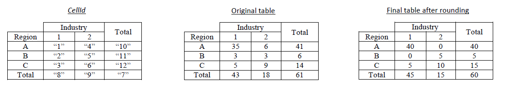
3. Details¶
The purpose of this section is to provide users with additional information that might be useful in understanding certain concepts associated with G-Confid and the protection of tabular data. We recommend that users refer to this section as needed, but it is not necessary to read the entire section.
3.1 Common error and warning messages¶
G-Confid users often come across certain error and warning messages. We will try to list a few of them and provide a possible solution for each one. This is a partial list only, and we welcome any suggestions regarding messages that should be added.
Omission of a statement or a mandatory option¶
Certain statements and options are mandatory in PROC SENSITIVITY. Forgetting to specify them can result in the following error messages:
| Omitted statement/option | Error message |
|---|---|
| VAR | ERROR: VAR is mandatory. |
| ID | ERROR: ID is mandatory. |
| DIMENSION | ERROR: The number of dimensions (2) in HIERARCHY statement does not match the number of variables (0) in the DIMENSION statement. ERROR: DIMENSION is mandatory. |
| HIERARCHY | ERROR: HIERARCHY is mandatory. |
| SRULE | ERROR: SRULE is mandatory. |
| DATA | example = gconfid.sensitiv( indata=df, outcell = "pandas", outconstraint= "pandas", s_rule="arb -1", hierarchy="""TOT_INDUSTRY 1 2; TOT_REGION A B C;""", unit_id="Entid;", var="Profit;", dimension="Industry Region" When G-Confid cannot find the variable specified in the input data, it will print: GConfidInputDatasetValidationError: COLUMN_NOT_IN_DATAFRAME: Field 'Variable Name' was not found in the data set. ) |
The var, unit_id, dimension, hierarchy, s_rule and indata options and statements must be specified in order for gconfid.sensitiv to work.
Incorrect data filename or variable¶
If the user makes a mistake in the name of the data file or the variable, the following error messages may appear. The fix is to correct the name of the data file or the variable.
ERROR: File WORK.MYDATA2.DATA does not exist.
ERROR: Variable PROVINCE not found.
Using the wrong type of variable¶
Some variables must be either numeric or character-based in order for gconfid.sensitiv to accept them. If the wrong type of variable is entered, the result is a message such as the following:
ERROR: Variable Profit in list does not match type prescribed for this list.
U sing an invalid sensitivity rule¶
In the SRULE option, the user must specify a valid sensitivity rule. If the rule is deemed invalid by gconfid.sensitiv, an error message beginning with “ERROR: Sensitivity rule parser:” is displayed in the log. The user will also see a warning message when attempting to use a Duffett rule since it is no longer recommended (we normally recommend using the C2 rule at Statistics Canada). Using the NK rule with a parameter of $𝑘<50$ also generates a warning message, because it does not make sense to use such a parameter for an NK rule and it could lead to unexpected results.
| Error message |
|---|
| ERROR: Sensitivity rule parser: Invalid PQ parameter (15.000000). It must be strictly between 0 and 1. |
| ERROR: Sensitivity rule parser: Invalid NK parameter (80). N must be an integer between 1 and 5 inclusively. |
| ERROR: Sensitivity rule parser: NK needs at least 2 parameters. |
| ERROR: Sensitivity rule parser: NK needs a maximum of 3 pairs of parameters. |
| ERROR: Sensitivity rule parser: NK needs an even number of parameters. |
| ERROR: When using the NK rule with the WEIGHT statement and a WEIGHTPROTLEVEL other than EXACT, a maximum of 2 nk rules can be specified. |
| ERROR: Sensitivity rule parser: C2 does not need parameters. |
| ERROR: Sensitivity rule parser: ARB needs 1 to 4 parameters. |
| ERROR: Sensitivity rule parser: Invalid sensitivity rule (CAKE). |
| WARNING: Sensitivity rule parser: Duffett is not recommended. You should use another sensitivity rule. |
|WARNING: Sensitivity rule parser: NK k (40) parameter is lower than 50.000000.|\
Incorrect hierarchy¶
Specifying the hierarchy is one of the most complex steps in using gconfid.sensitiv. We recommend referring to examples on 2.3 Hierarchies to fully understand hierarchies. Below are a few common errors that occur when specifying the hierarchy:
| Error type | Error message |
|---|---|
| Omission of semi-colon at the end | ERROR: Hierarchy parser: Looking for 'Colon' but found 'Done' instead. Error at or before: TOT_REGION A B; Industry 1 2 |
| Hierarchy and dimension do not have the same number of variables | ERROR: The number of dimensions (2) in HIERARCHY statement does not match the number of variables (1) in the DIMENSION statement. |
| Multiple roots | ERROR: Hierarchy parser: The hierarchy contains multiple roots while only one is permitted. |
| The observation is missing a dimension | WARNING: There were 1 observations dropped from DATA data set because one of the DIMENSION variables is missing. WARNING: These observations will not be used for sensitivity calculation. WARNING: Reading microdata: A code is missing for dimension dimvar. The observation is dropped. |
| Values are suppressed because they do not exist in the hierarchy | WARNING: Reading microdata: Microdata file contains a code that is either a parent in the hierarchy or a code that is not in the hierarchy/range for the dimension Region, code 'B'. Only children codes will be processed WARNING: There were 7 observations dropped from DATA data set because one of the DIMENSION variables is not in the hierarchy. WARNING: These observations will not be used for sensitivity calculation. |
| The hierarchy and dimensions do not specify the variables in the same order | WARNING: Reading microdata: Microdata file contains a code that is either a parent in the hierarchy or a code that is not in the hierarchy/range for the dimension Industry, code '1'. Only children codes will be processed WARNING: Reading microdata: Microdata file contains a code that is either a parent in the hierarchy or a code that is not in the hierarchy/range for the dimension Industry, code '2'. Only children codes will be processed WARNING: There were 14 observations dropped from DATA data set because one of the DIMENSION variables is not in the hierarchy. WARNING: These observations will not be used for sensitivity calculation. WARNING: No valid observations in DATA data set. |
It is important for the hierarchy and dimensions to match, which means that they need to have the same number of variables and the variables must be in the same order.
It should also be noted that any values not specified in the hierarchy or range are excluded from the sensitivity calculations. It is therefore important that the user indicate all the values to include in the hierarchy (or range, where applicable). It is not a problem if the hierarchy or range includes values that are not in the data file (e.g., specifying the province of Ontario even if it is not a value in the data file).
The error involving multiple roots occurs when there are somehow two (or more) grand totals in the hierarchy. G-Confid assumes that the hierarchy adds up to one grand total. This grand total may be produced in different ways, as in the case of multiple decompositions, but there can be only one grand total per dimension. Most of the time, the user’s intent was not to put multiple totals, but it was interpreted that way by G-Confid because the specified hierarchy is incomplete. In complex hierarchies, it is useful to prepare a diagram that visually represents the hierarchy, in case a multiple roots error message is encountered. Most often, by having a diagram, the user becomes aware that there are missing links between certain cells, or that certain cells are completely orphaned, i.e., they are not connected at all to others in the hierarchy. In that case, the user needs to specify how these cells are connected to others, making sure not to miss any link, to solve the problem.
Missing or negative values¶
If there are negative or missing values, PROC SENSITIVITY displays the following warnings by default: WARNING: There were 4 observations dropped from the DATA data set because the variable Profit is negative.
WARNING: These observations will not be used for sensitivity calculation.
WARNING: There were 1 observations dropped from the DATA data set because the variable value is missing.
WARNING: These observations will not be used for sensitivity calculation.
If a user wants G-Confid to consider negative values in the sensitivity calculations, the option accept_negative can be specified.
Using the WAIVER statement instead of the PWAIVER statement¶
A situation may arise where an enterprise provides us with a partial waiver, i.e., it authorizes us to disclose its information for some cells, but for not all. In such a case, the PWAIVER statement rather than the WAIVER statement must be used. The WAIVER statement displays a message such as the one below if one or more enterprises are found with a partial waiver:
ERROR: Contributor 'S01' has a waiver flag for some but not all contributions. Please verify the consistency of the waiver flag and rerun.
ERROR: Unable to update waiver flags lists
However, the WAIVER statement can be used to ensure that all waivers are complete in our data set. If we know that all waivers should be complete in the data set, an error message can help to identify which enterprises contain an incorrect value for their waiver variable.
3.2 Sensitivity rules¶
The general formula for linear sensitivity (Cox and Sande, 1979) is described as follows:
General formula¶
$$S = \sum_{i=1}^{N} \alpha_ix_i,$$
Where
- $S$ is a cell sensitivity
- $N$ is the number of contributors in a cell
- $x_i, i = 1, 2, \dots, N$ is the value of the $i^{th}$ contributor to a cell, with contributions in decreasing order ($x_1 \ge x_2 \ge \dots \ge x_N \ge 0$)
- $\alpha_i, i = 1, 2, \dots, N$ are the standard coefficients for the sensitivity rule chosen.
Note: The PTN framework does not make use of this form of the linear sensitivity measure.
PQ rule¶
According to the PQ rule, a cell is considered sensitive if the second largest respondent can estimate within $\pm(pq)\%$ the contribution of the first largest respondent to the cell. In fact, according to this definition, it can be shown that a cell is sensitive if and only if, after the publication of the table, it is possible for some respondent to estimate the contribution of another respondent to within $\pm(pq)\%$ of its original value. The PQ rule can be expressed as follows:
$$S = (pq) \cdot x_1 - \sum_{i \ge 3} x_i \text{ where } 0 \le pq \le 1$$
NK rule¶
According to the NK rule, a cell is considered to be sensitive if the sum of the largest $n$ contributions account for more than $k$ percent of the total cell value. Therefore, we define sensitivity as:
$$S = \frac{100}{k} \sum_{i=1}^{n} x_i - \sum_{i=1}^{N} x_i$$
Where $n \ge 1, N \ge 1$ and $50 < k \le 100$.
Usually, a small value is taken for the parameter $n$, at most up to 5, while $k$ is taken to be large, such as 80. The main idea behind this rule is the following. One tries to avoid that $n-1$ respondents can make a good estimate of the contribution of the $n^{th}$ respondent by pooling their own values and by comparing this sum with the total cell value. The larger $n$ is, the less likely that $n-1$ respondents will cooperate. Therefore, the parameter $n$ should be chosen to be larger than the maximum size of an (imagined) coalition of respondents.
Duffett rule¶
This rule is a mixture of NK rules, with different values of $n$ and $k$ being used for different numbers of cell respondents. This rule was created by and for Statistics Canada, and so only the internal version of G-Confid offers this functionality. Sensitivity is defined as follows:
$S = \max(S_1, S_2)$, where
- $S_1$ is calculated using a rule ($n=1, k=k_1$)
- $S_2$ is calculated using a rule ($n=2, k=k_2$)
where parameters $k_1$ and $k_2$ are confidential.
It should be noted that the Duffett rule is no longer regularly used, as since 2009 Statistics Canada's C2 rule is instead recommended for use.
C2 rule¶
The C2 rule, also created by and for Statistics Canada, can only be used internally. This is the recommended rule for economic data at Statistics Canada. Sensitivity is defined as follows:
$S = \max(S_D, S_P)$, where
- $S_D$ is calculated using a rule similar to the Duffett rule
- $S_P$ is calculated using a p-percent rule
The details of the parameters used in the C2 rule are confidential.
Arbitrary rule¶
This rule is a special case of the linear sensitivity rule in which the first four coefficients are specified by the user and other coefficients are set to -1:
$$S = \alpha_1x_1 + \alpha_2x_2 + \alpha_3x_3 + \alpha_4x_4 - \sum_{i=5}^{N} x_i.$$
3.3 Suppression methodology¶
The main objective of the gconfid.suppression() is to provide the desired protection level to the sensitive cells while minimizing the loss of information. Using thegconfid.suppression(), G-Confid identifies the set of cells to suppress that provide the desired protection level.
Underlying the gconfid.suppression() is the PuLP linear and mixed integer programming modeler written in python, which solves a linear programming problem for each sensitive cell. The solution to each linear programming problem is a circuit of suppressed cells within the table. To define the linear programming problem, there is an optimization function and a set of constraints. The set of constraints is represented by the structure of the table, and how the cells are related to one another in segments (such as rows and columns).
The optimization function minimizes the amount of protection demanded from other cells in order to protect the sensitive cell.
The cost variable represents the importance of publishing or suppressing each cell. A sensitive cell must be suppressed and therefore G-Confid assigns it a cost of zero. For all other cells, we may specify a cost variable of our choosing.
The cost variable has three components: (i) a variable on the Outcell file that represents the informational value of the cell, (ii) pre-defined cost functions that adjusts this variable, and (iii) one of three pre-defined scaling factors that adjusts this variable.
By default, G-Confid applies the values of TotalNoise to represent the informational value of each cell. TotalNoise is a reflection of the size and importance of the cell. We can always add a variable to Outcell after running gconfid.sensitiv() and prior to running the gconfid.suppression(), for example, a variable that represents the absolute value of TotalVar. To override the default, we specify this added variable using the parameters cost_var1= and cost_var2= when calling the gconfid.suppression().
We can apply one of seven functions: SIZE, ROUNEDSIZE, DIGITS, CONSTANT and INFORMATION, SCALEDINFORMATION, INVERSE. The SIZE function is an identity function and does not change the values. The ROUNDEDSIZE applies rounidng to the identifiy function.The DIGITS function applies a logarithmic transformation to the values. The CONSTANT function yields values of one for all cells. The INFORMATION function applies a reciprocal logarithmic transformation, so the cells with the smallest informational value obtain the largest values and vice versa.the SCALEDINFORMATION function scale the cost by the mean and rounded to three digits to the right of the decimal. The INVERSE applies a reciprocal transformation.
We can apply one of three rescaling factors: NONE, MEAN or SCALE. The NONE factor is an identity function and does not change the values. The MEAN factor rescales relative to a mean value. The SCALE factor is more complex and is defined in the syntax of 5.2 The gconfid.suppression(). Rescaling may lead to oversuppression in terms of the informational value that is suppressed, although rescaling tends to reduce substantially the runtime of the gconfid.suppression().
Usually, there is more than one sensitive cell to be protected in a table. G-Confid processes sensitive cells sequentially, one at a time, starting with the sensitive cell that requires the largest amount of ambiguity. In the process of protecting a particular sensitive cell, G-Confid may partially or fully protect other sensitive cells. The cells that are suppressed to protect a particular sensitive cell form an optimally selected circuit of suppressed cells. Across all sensitive cells that require protecting, we cannot be sure to obtain an optimal solution. To reduce the potential oversuppression that may have occurred, a second residual suppression may be run with the intent of liberating redundant suppressions.
3.4 Dimension variables, the hierarchy and the range¶
The dimension variables, the hierarchy and the range are three closely related concepts. Dimensions are the variable names presented in our tables (e.g., region); hierarchy indicates the structure and makeup of each dimension in the table (e.g., the table may include the following region categories: Pacific, Prairies, Ontario, Quebec and Atlantic). If the original data do not specifically contain the categories described in the hierarchy, a range can be used (e.g., it could indicate which provinces are included in each region if the province variable is available on the input microdata file).
Dimension variables¶
Each dimension variable is categorical and consists of levels or classes. The combinations of the levels of the dimension variables define the table of results. Typically for business surveys, dimension variables include:
- The geographic location of the contributor
- The (primary) industry in which the contributor operates
- The category of firm size to which the contributor belongs
- The (primary) activity or type of product the contributor produces
- The geographic location in which the economic activity takes place or to which a good or service is sold
Using the DIMENSION statement of gconfid.sensitiv() we specify the names of the dimension variables that appear in the input microdata file.
Hierarchy¶
Using the HIERARCHY option we define the hierarchical groupings of cells in the table of results. For each dimension variable that we specify in the DIMENSION statement, we must specify the hierarchy pertaining to that dimension variable. For information pertaining to the structure and the syntax of the hierarchy, please see the 5.1 PROC SENSITIVITY section and also the examples on 2.3 Hierarchies.
Range¶
Using the RANGE= option we relate the values of the dimension variables on the input microdata file to the most detailed levels of the dimension variables that appear in the table of results.
Although the range is optional, we need to specify the range if the input microdata file provides information at a more detailed level then we intend to produce in the table of results, and for which no confidentiality vetting is needed. For each dimension variable that we specify in the DIMENSION variable, we must specify the range pertaining to that dimension variable. For information pertaining to the structure and the syntax of the range, please see the 5.1 gconfid.sensitiv() section and also the examples on 2.3 Hierarchies.
3.5 The unit_id variable¶
With respect to Statistics Canada’s classification of business entities, we consider an individual respondent to be an enterprise (as opposed to an establishment or location). Consequently, each row of microdata represents a single record within an enterprise, and the respondent ID variable identifies records belonging to the same enterprise. Although it is quite typical for a vast majority of enterprises to be represented by a single record in the microdata table, it is possible to have multiple records per enterprise that carry the same respondent ID.
We strongly believe that an enterprise with several establishments is better protected when we calculate sensitivity at the enterprise level rather than at the establishment (or location) level. Using contributions at the establishment level underestimates the sensitivity of our cells and increases the risk of publishing sensitive cells. Basically, it is best to base contributions at the enterprise level for the ID variable!
Now, let’s briefly consider anonymous respondents. G-Confid recognizes two types of respondents: identifiable respondents and anonymous respondents. Rows of microdata corresponding to identifiable respondents have an identification character in the respondent ID field, while rows corresponding to anonymous respondents have a space character in the respondent ID field. In particular, anonymous respondents in a cell could represent values contributed by a large number of respondents. It is assumed that an intruder cannot estimate these small values overly accurately; in other words, an anonymous respondent will never cause a cell to be sensitive. Note that cells containing anonymous respondents can still be sensitive. In fact, for a particular cell, sensitivity is positive when, for at least one non-anonymous respondent in a cell, the estimate of the respondent’s value based on the total cell value is too accurate.
3.6 The Shadow variable¶
The shadow variable is an optional variable for which G-Confid calculates the totals at the cell level. These totals appear in the TotalShadow variable of the Outcell file. If we specify a WEIGHT statement, then TotalShadow includes weighted totals, otherwise the totals are unweighted. Using versions of G-Confid prior to v1.07, we could only specify non-negative, unweighted contributions when assessing the sensitivity. In order to obtain the weighted totals, net of positive and negative contributions, we used to create a pre-weighted variable to serve as the shadow variable. As of version 1.07 we can specify the ACCEPTNEGATIVE option and use a WEIGHT statement so that TotalVar calculates the weighted net totals per cell of the variable that we specify in the VAR statement.
3.7 Aggregates¶
An aggregate is a set of two or more cells within the same segment (row, column), and includes at least one sensitive cell. A sensitive aggregate has a positive sensitivity and meets one of two criteria:
- The same contributor contributes to two or more of the cells that comprise the aggregate
- The contributor that is the adversary in the aggregate is also the target in one of the cells that comprise the aggregate
As part of the functionality of gconfid.sensitiv(), G-Confid automatically detects aggregates and creates cells that represent sensitive aggregates. These cells are included on the Outcell file with Type=”A”. Please see the examples on 2.4 Aggregates for more details.
An aggregate may include non-sensitive cells. In order to limit the set of non-sensitive cells that G-Confid may add to an aggregate, we set the parameter options M, X, Y and Z (see 5.1 gconfid.sensitiv()). We can adjust these parameters to reduce the number of aggregates and also the runtime of the gconfid.Suppression(), although we also reduce the confidentiality protection.
3.8 The accept_negative parameter option¶
gconfid.sensitiv() may include negative values of the analysis variable. If this parameter is specified then G-Confid does not exclude any observation on the input microdata file that has a negative value. If accept_negative is not specified then the default is False, where negative values are excluded from the analysis.
3.9 Using a Proxy Variable¶
Purpose¶
The purpose of using a proxy variable is to represent the magnitude of a contributor which has a negative contributed value. We choose to rely on a function of this measure of magnitude instead of relying on a smaller and/or negative value that was actually observed.
Suppose for a given industry, typically the profit is about 3.5% of gross revenue, so a business enterprise with one billion dollars of revenue is expected to make about 35 million dollars. Suppose instead the business enterprise loses $700. We might conclude that this value does not reasonably reflect the magnitude of this business enterprise. Instead, we might prefer to rely on 0.035 times the gross revenue as a better representation of the magnitude.
Method¶
In order to use a proxy variable, the accept_negative parameter option must be specified.
We identify a non-negative numeric variable that serves as an indicator of magnitude of the business enterprises. We include this variable on the input microdata file in skinny format going to gconfid.sensitiv(). In the call to gconfid.sensitiv() we specify the name of this variable using the proxy_size statement. In a survey of business enterprises, we might choose a variable such as total revenue, total assets or the number of employees as being a suitable indicator of magnitude.
Next, we specify the proxy_ratio, which is the proportion of the proxy_size variable that reflects the comparable magnitude of the analysis variable. Continuing with the example, we set the parameter option proxy_ratio=0.035 to indicate the proportion of total revenue to use as the minimum value in place of the absolute value of profit.
As part of gconfid.sensitiv() G-Confid then generates the proxy variable, defined as the maximum of (i) the absolute value of the original variable and (ii) the proxy_ratio times the proxy_size variable. If the proxy_size variable and the proxy_ratio parameter are specified, but for certain observations in the microdata file the proxy_size has a missing value, the absolute value of the original value is used as the proxy. We can observe the microdata values of the proxy variable in the outlargest file for the five largest contributors.
Instead of specifying the value of proxy_ratio, we can let G-Confid choose the proxy ratio based on a specified percentile of the ratios of the absolute values of the analysis variable to the proxy_size variable. G-Confid calculates the proxy ratio of each observation, ranks the ratios from smallest to largest, and selects the proxy ratio corresponding to the proxy_percentile value that we specified.
If we specify a proxy_size variable without specifying either proxy_ratio or proxy_percentile, by default G-Confid applies proxy_percentile=0.10.
In practice (from Wight, 2017)¶
To make use of a proxy variable, let $X$ denote the original variable and let $Y$ denote a non-negatively valued variable that is representative of the relative magnitude of each business. The variable $Y$ should be judiciously chosen from among the variables that correlate strongly with the amount of protection that $X$ would ordinarily require. For a given business enterprise $r$, let $Z_r = \max\{|X_r|, \delta Y_r\}$ denote the variable that will be analyzed for sensitivity, with parameter $0 \le \delta \le 1$. For example, if $X$ represented the profit (or loss) of a business enterprise, the total gross revenue might serve as the auxiliary variable $Y$. The definition of $Z$ was proposed by Tambay and Fillion (2013) who recommended using a small value of $\delta$ suitable for data scenarios in which $|x_r|$ was very much smaller than $|y_r|$. Applying the PQ rule to proxy variable $Z$ would lead to protecting the ratio $|X/Y|$ to within $\delta p \times 100\%$.
A suitable choice of the value of $\delta$ may not be obvious. With that in mind, a data-driven approach is proposed to determine its value: among cells at the most detailed level of the table, the ratio $|x_r|/y_r$ for the $r^{th}$ contributor to a cell is calculated. The resulting values are ranked in ascending order. The percentile of the ranked distribution ($\pi$) at which $\delta$ is to be selected may then be specified. As a consequence, the term $\delta y_r$ is used in place of contributions with the smallest $\pi\%$ of ratio values, and $|x_r|$ otherwise.
The utility of the proxy variable becomes evident over the course of multiple cycles. The use of a proxy variable removes some of the fluctuation associated with variables such as profit that can be positive or negative, and vary in magnitude, across cycles. This approach stabilizes the protection demanded or offered by a contributor, in terms of the magnitude of the contribution. Across cycles, this approach helps to stabilize the suppression pattern, which serves to meet the expectation of the users who seek to obtain results for the domains across cycles.
3.10 The MINRESPW parameter option¶
If a weight variable is specified, MINRESPW permits us to identify the minimum weighted count of contributors to a cell, below which we want the cell to be considered sensitive and require protection. If the weighted count of contributors is below the value that we specified using MINRESPW, G-Confid sets the sensitivity to the maximum of 1 and the sensitivity as calculated using the sensitivity rule. Just as with the MINRESP parameter option, the use of MINRESPW is recommended particularly for use with frequency count data instead of magnitude data.
4. Strategies¶
The purpose of this section is to provide users with tools and information to deal with real problems that they might encounter. The section is divided into two categories:
- Publishing more and better
- Specific cases
In Publishing more and better, we discuss different methods to promote the publication of a larger number of cells, or specific cells chosen by the user. In Specific cases, we present a few ideas on what to do in less obvious situations, e.g., how to protect frequency counts. Note that the Strategies section is under development and could be updated based on user needs. Suggestions are welcome!
4.1 Publishing more and better¶
4.1.1 Deciding which data not to protect¶
Customarily we protect the data of enterprises, consistent with our legal and moral obligations to our data providers. G-Confid implements data-driven, evidence-based methodology that was developed over many years and is applied at statistical agencies worldwide. Even so, it may be argued that some data do not need protecting.
Data not requiring protection by law: The Statistics Act, a law of Canada, specifies certain industries that may not need protecting, such as statistics available to the public by law (including some Government sector statistics), and information relating to a carrier of persons or of commodities.
Data that may not need protecting due to the inaccuracy of the data value: A value that does not necessarily reflect the contribution of an enterprise may not need protecting. This decision rests with the senior manager who is responsible for ensuring the implementation of the confidentiality policy of the organization (the director, at Statistics Canada). The decision to protect or not to protect imputed data depends in part on the method of imputation. Deterministic imputation, historical imputation, and imputation using administrative data generally lead to a value that reflects exactly or closely the value of the contributor. Allocation by proportions, imputation by parameterized models and donor imputation generally lead to a value that may differ non-negligibly from the value of the contributor. This assessment requires care to make an informed decision. Please consult your confidentiality advisor or the G-Confid team for assistance.
Data that may not need protecting to the non-sensitive nature of the variable: Surveys of enterprises typically include data of a sensitive nature, such as financial variables (most notably revenue and expense variables). Other data may be of a less sensitive nature, such that in the opinion of the director they do not need protecting, all the while mindful of the legal and moral obligations to the data providers.
The value zero customarily does not need protecting. Although for a non-negative variable the value zero in itself is disclosing, i.e., every business enterprise contributed the value zero, there is no measure of economic activity that demands or offers protection. For this reason, National Statistical Institutes (NSIs) generally exclude domains with the value zero from the set of domains to be protected by reason of confidentiality.
Even so, the value zero discloses information that may be to the detriment of the business enterprise, and may be inappropriate for the NSI to reveal this information, such as the expenditure spent on legal requirements (e.g., compliance with waste management laws) or ethical operations (e.g., funding employee health and safety initiatives), or indicators of business viability (e.g., undertaking research and development).
4.1.2 Using waivers¶
To apply waivers when using G-Confid, create a {0,1} binary numeric variable on the input microdata where 1 indicates that a waiver has been obtained, 0 otherwise.
Full waivers¶
Suppose a full waivers data file exists and includes the identifiers of the business enterprises. Suppose also the input microdata file for use by G-Confid also includes these identifiers. Merge (e.g., using a PROC SQL join) these two files on the identifiers, and set the binary numeric variable to 1 if the business enterprise is on the waiver data file.
Partial waivers¶
A partial waiver applies to an internal or marginal cell that is generated by PROC SENSITIVITY, but not necessarily the parent cells related to that cell. Partial waivers that apply to internal cells, and every parent cell to which these internal cells contribute, can be identified by merging a waiver data file by both the identifiers of the business enterprises and the dimension variables.
Partial waivers that apply in any other way cannot be specified prior to running PROC SENSITIVITY. Instead, the Sensitivity and Status of the specific cell to which a partial waiver applies may be altered so long as the G-Confid user is confident that the cell does not need protecting due to partial waivers.
The waiver functionality may also be used to identify enterprises that do not need protecting due to another reason, such as according to law or decided by the responsible senior manager. As an alternative to using the waiver functionality, if an entire set of domains are known not to require protection, these domains may be excluded from the hierarchy and therefore from the confidentiality process. These domains will be used neither in the process of checking for sensitivity (as they are deemed not to be sensitive) nor serve to protect other cells. In Canada, certain provisions of the Statistics Act enable the publication of results related to the government sector. As these domains are publicly available by statute, these data neither demand protection nor offer protection. For this reason, these domains may be excluded altogether from the confidentiality process.
For more information on using waivers in G-Confid, see the 2.5 Waivers section in the examples.
4.1.3 Favouring specific cells for publication¶
We can favour the publication of non-sensitive cells by creating a cost variable on the Outcell file. To favour publishing a specific cell we specify an elevated cost, for example the value of the grand total of the table of results. For the other cells we set the value of the cost variable equal to TotalNoise.
Example: suppose we want to favour the publication of Cell 123, and the grand total of the table of results is 654000. After running gconfid.Sensitiv(), we create the variable CostVar on the Outcell file.
outcell['CostVar'] = np.where(outcell['Cellid'] == 123, 654000, outcell['TotalNoise'])
The choice of cost value affects the suppression pattern. If we do not create a cost variable, by default G-Confid uses TotalNoise as the cost. That way, cells with larger values are more likely to be published, while cells with smaller values are more likely to be selected for complementary suppression. This has for effect to maximize the total informational value of the published results. By creating a customized cost variable, we may favour the publication of cells that we want to publish, at the risk of publishing less informational value.
The choice of value affects how G-Confid selects a circuit of cells to suppress. For example, if a segment of cells sums to a marginal cell, and we set the value of the cost of one of these cells higher than the TotalNoise of the marginal cell, then the marginal cell is more likely to be suppressed. NSIs do not generally favour publishing a particular cell more than the marginal cell to which it belongs. To favour a particular cell within a segment, a better option may be to set its cost slightly less than the TotalNoise of its marginal cell. This approach takes additional manual work.
4.1.4 Reducing the Protection¶
Using G-Confid we can reduce the protection in several ways. However, not all of these approaches are recommend and may conflict with legal or ethical requirements regarding the protection that we offer to our data providers.
Including take-none data¶
Data representing the contributions of sampling units in take-none strata, should be included in the input microdata file. The preferred approach is to include observations at the level of the microdata for each take-none contributor including its identifier within the variable representing the ID and its contribution within the variable representing the VAR. These observations are treated just like any other contributions in the microdata. Given that take-none contributions tend to pertain to enterprises of smaller size, these units usually provide protection to larger enterprises and thereby serve to reduce the sensitivity of the cell. If a weight variable is used, typically the weight of a take-none contribution is set to one.
The alternative approach is to create a single observation in the input microdata file that represents the collective net contribution at the cell level of the set of take-none enterprises that contribute to that cell. Using this approach, we anonymize the collective contribution by setting the value of the ID variable to missing (blank).
Caution: this alternative approach may underestimate the sensitivity of a cell in which a take-none contributor serves as either the target or the adversary.
Changing the sensitivity rule¶
We can release more data by changing the sensitivity rule that we apply. For example, setting SRULE from “PQ 0.2” to “PQ 0.15”, or from “NK 1 80” to “NK 1 70”, serves to reduce the value of the Sensitivity of the cells, so that the cells demand less protection.
Caution: this approach may contravene the legal or ethical requirements regarding the protection offered to our data providers.
When choosing the sensitivity rule, we may consider the inherent sensitivity of the variable. Some NSIs may prefer to adhere to a single sensitivity rule to apply to all of its confidentiality assessments. Other NSIs may offer the latitude to choose a sensitivity rule that depends on the variable being assessed. Financial variables and measures of economic activity are generally held to a more stringent sensitivity rule. Non-financial variables (e.g., surface area, number of company vehicles) may be held to a less stringent sensitivity rule if the NSI permits.
Seeking waivers¶
As discussed previously, waivers can help reduce the amount of protection needed.
Using weights¶
If our survey includes estimation weights, we should include the weight variable on the input microdata file. Applying the PTN framework (Gray, 2016), the weights provide protection against disclosure. See 4.2.2 Using a weight variable for more information.
Using only a minimum count rule¶
Caution: this approach leads to the disclosure of sensitive data.
This approach involves using a minimum counts rule in place of a sensitivity assessment. See “A note on using MINRESP with magnitude data” within 4.2.3 Protecting frequency counts. This approach ignores the methodology of assessing the sensitivity. Instead, we assume that external users of our results are unable to identify the largest contributors to a cell. Effectively we assume that industry analysts, financial investment experts and even business rivals do not know the identity of the largest enterprises that contribute to a cell.
Assuming a waiver¶
Caution: this approach leads to the disclosure of sensitive data.
Caution: this approach may contravene the legal and ethical requirements of the NSI to protect its data providers.
This approach involves treating a contribution as if a waiver had been supplied for it, and therefore G-Confid does not protect it. A possible application of this approach is when the contributed value was derived from a probabilistic method such as a parametric model or donor imputation, such that the derived value has a reasonable probability of not reflecting the uncollected or unused value of the contributor.
See 4.1.2 Using waivers for more information.
4.2 Specific cases¶
4.2.1 Working with negative values¶
With the introduction of version 1.07 of G-Confid, it is now possible to work with negative values. In the past, G-Confid rejected negative values and they were not taken into account in sensitivity calculations. In order to have negative values included in calculations, the user simply needs to specify the accept_negative option in the gconfid.sensitiv().
By default, when accept_negative is specified, G-Confid uses the additive_noise option to handle marginal cells. It is, however, possible to specify additive_noise = False, where sensitivity is calculated independently at the marginal level. To better understand the difference between these two options, see the examples on 2.7 Negative values
In addition to specifying accept_negative and choosing how to handle marginal cells (additive_noise = True or
additive_noise = False), it is possible to provide G-Confid with a proxy. This may prove useful if the user has an auxiliary variable that accurately reflects the size of our contributors. For more information on the subject, see the 3.8. The accept_negative parameter option section and the examples on 2.7 Negative values.
4.2.2 Using a weight variable¶
To use a weight variable, (1) specify the name of the variable using the weight option of gconfid.sensitiv(), and (2) specify the weight_prot_level option of gconfid.sensitiv(). By default, the weight protection level is set to LINEAR.
For all sensitivity rules supported by PTN and using G-Confid v1.07 or later, the weight protection level specifies the protective function that is applied to the microdata. Recommended levels include LINEAR and STEP.
By specifying LINEAR, G-Confid reduces the amount of protection demanded by a target as its weight differs from one, and no protection is required if its weight is -1 or less. The LINEAR approach is consistent with the view that weighted data is inherently protective, so long as the weights are not known to the users of the results.
By specifying STEP, G-Confid maintains the amount of protection demanded by a target if its weight lies between 1 and 3-p, where p is the value of the PQ parameter (or $p = \frac{100-k}{k}$ for an NK rule) Some protection is demanded between 3-p and p and no protection is demanded for a weight greater than 3. The STEP approach is consistent with the view that subsampling is inherently protective, so long as the units selected into sample are not known to the users of the results.
By specifying EXACT, the weights are considered to be known to the users of the results and provide no protection. For example, EXACT would be appropriate if external users were told that all units in a particular domain received a weight of 1.25 because 80% of the units were selected into the sample. Ordinarily a NSI would not reveal the weights.
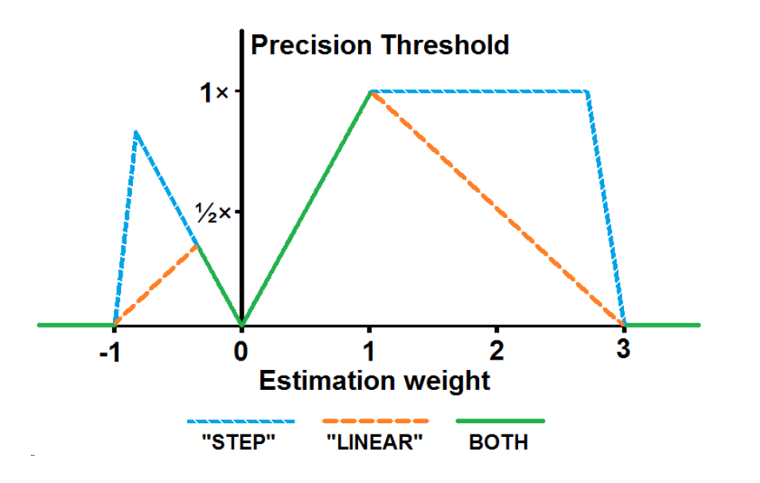
Chart: Factor by which the precision threshold (PT) is reduced for a target contributor (STEP function in blue, LINEAR function in orange, both in green)
Although LINEAR leads to more publishable cells than STEP, it provides less protection to the data providers. It also increases the risk of perceived disclosure, particularly as doubleton cells become publishable in certain data scenarios. Where a doubleton is known to exist, i.e., there are only two business enterprises in the population that operate in that domain and both were included in sample, but due to weight adjustments their weights are well above one, by using LINEAR the cell is deemed not to be sensitive. The two business rivals in the domain are perceived to be able to determine each other’s contribution, given that the NSI published the total value of the domain. In tables of results with substantial numbers of cells representing the contributions of only two business enterprises, STEP is the preferred weight protection level to guard against perceived disclosure.
Reweighting due to nonresponse or calibration¶
Even if we obtained our input microdata from a census or from administrative sources, data may be unavailable for certain units in the population of study. Consult your survey methodologist about creating estimation weights as a function of nonresponse. Macro-level results may also be calibrated to known totals, and we may create estimation weights that account for the adjustment due to calibration.
4.2.3 Protecting frequency counts¶
The protection of frequency counts involves a different disclosure control methodology from the assessment of the confidentiality of magnitude data. Each contributor represents a single unit and contributes the value 1, instead of contributing a value that represents the level of economic activity (e.g., revenue measured in dollars). G-Confid offers a choice of two approaches to protecting the confidentiality of frequency counts: rounding or suppression.
Creating frequency counts from microdata using gconfid.sensitiv()¶
To begin, we set up and run gconfid.sensitiv() and we specify a minimum count rule. Suppose for example we want to
protect any frequency count less than five. Using gconfid.sensitiv() we set the parameter option MINRESP=5. This
setting indicates to G-Confid to set the Sensitivity equal to 1 if the cell has fewer than five distinct contributors. In order to prevent G-Confid from assessing the dominance or precision of the contributions, we set the SRULE to “ARB -1”. The arbitrary rule with all coefficients equal to -1 ensures that G-Confid never calculates a positive value of Sensitivity using the analysis variable that we specify in the var option. gconfid.sensitiv() produces the Outcell and Outconstraint table that we use as inputs to the rounding module.
Supplying a cell-level data file prior to rounding¶
We may also supply a data file at the cell level, similar to the Outcell file that PROC SENSITIVITY would have produced. We must also supply a file of constraints that describe the linear relationships between the cells, making reference to a CellId variable.
Rounding¶
To round the cell-level data, we can use the gconfid.OptRound().
We specify a rounding base (such as 5), and G-Confid will round the cell totals to multiples of that base (e.g., 0, 5, 10, 15,…).
Suppression¶
To suppress the cell-level data, we use the gconfid.Suppression(). Because any cell that is sensitive due to low counts has Sensitivity=1, any non-zero cell in the same segment can serve as a complementary suppression.
A note on using MINRESP with magnitude data¶
The use of MINRESP is not a recommended approach for protecting magnitude data. For example, MINRESP=3 ensures that a count of 1 or 2 results in Sensitivity=1, which means the cell demands protection of the value 1, so any other cell in the segment with a frequency count of at least 1 can offer protection. For example, suppose a segment includes cells A, B, C and D where the total of D equals the sum of totals of A, B and C. In cell A,
Enterprise 1 contributes $1,000,000
Enterprise 2 contributes $100,000
Suppose we do not assess dominance or precision and just rely on MINRESP=3. Given that only two enterprises contribute to the cell, the Sensitivity is set to 1, which equates to demanding protection of $1 (because we are protecting magnitude data measured in dollars, and not count data measured in units). Suppose cell B has a total value of $3,000. Because 3,000 is at least as large as 1, G-Confid chooses cell B as a complementary suppression for cell A.
| A | B | C | D |
|---|---|---|---|
| X | X | 80,000 | 1,183,000 |
Enterprise 2 calculated 1,183,000 minus 80,000 minus its own contribution 100,000, and so its best guess of the contributed value of Enterprise 1 is $1,003,000. Using MINRESP we only offer protection to Enterprise 1 as if we had used a p=0.003 rule.
We can use MINRESP in conjunction with a sensitivity rule to protect magnitude data. However, for any NK rule where N ≥ 2 or any PQ rule, the Sensitivity will already be positive if fewer than three enterprises contribute to a cell, because the value of Sensitivity is the maximum of 1 (due to MINRESP) and the result calculated using the sensitivity rule. For example, suppose three enterprises contribute to a cell:
- Enterprise 1: $20,000 and weight=1.2
- Enterprise 2: $2,200 and weight=1.5
- Enterprise 3: $1,000 and weight=2
Suppose MINRESP=5 and the SRULE=”PQ 0.2”. The value of Sensitivity is at least 1 because fewer than five enterprises contribute to the cell. However, the Sensitivity takes the value $S = \left(\frac{3 - 1.2}{2}\right) \cdot 0.2 \cdot 20000 - 0.5 \cdot 2200 - 2 \cdot 1000 = 500$ according to the SRULE, applying WEIGHTPROTLEVEL=”LINEAR” by default.
4.2.4 Producing revised results after the microdata have changed (including historical revisions)¶
After releasing preliminary results, some surveys update their microdata and prepare a set of revised tables of results. Confidentiality protection must then be offered to the enterprises that contribute to the revised set of data. Providing external users with two sets of results, preliminary and revised, may facilitate the disclosure of revised results that we intended to protect. To prevent this occurrence, we should favour the suppression pattern of the preliminary results when the gconfid.Suppression() seeks a suppression pattern for the revised results.
To illustrate the peril of generating the suppression pattern of the revised results independently from that of the preliminary results, consider an example in which the suppression patterns of the preliminary table and the revised table were generated independently. In the preliminary table the cell in the first row and first column was sensitive and required protecting. In the revised table, the cell in the second row and third column requires protecting.
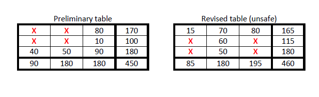
Users with both tables will likely guess (correctly) that in the third row the values remained 40, 50 and 90 because the sum remained 180. Therefore the newly sensitive cell has the value 15, up from 10 in the preliminary release.
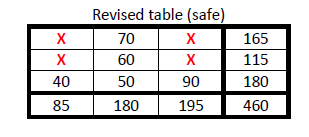
Users are unsure exactly how many cells saw their values change between the preliminary and revised results, and by how much. Users might assume that the cell in the first row and third column remained 80, but maybe it is 80 no longer.
Notice that we re-used some of the same suppressions in the revised table, but only to the extent that we needed to protect the revised results, and we published the rest.
To favour a suppression pattern, first we include the Outstatus variable from the Outpattern of the preliminary results (called in the example below outpattern_old) on the Outcell of the revised results. We only include from the old pattern the cells where the Type=”C”, not the aggregates. Then, we specify a cost variable for the gconfid.Suppression() and assign cost equal to 1 for cells that are suppressed in preliminary result, which that encourages but does not force the same suppression pattern to be used with the revised results. That variable is called here cost_var. Then include the cost_var1 = cost_var when running gconfid.Suppression()
Detailed example can be found in 2.9 Influencing a suppression pattern in Suppression
4.2.5 Using macro-level adjustments¶
We can represent a macro adjustment by including an anonymous observation in the microdata input file that represents the value of the adjustment. If the macro adjustment has a negative value, we must specify the accept_negative parameter option of gconfid.sensitiv().
A macro adjustment should never represent an adjustment to the contribution of an enterprise. We can adjust the contribution of an enterprise in one of two ways:
- Adjust the contributed value of an existing microdata observation that represents the contribution of that enterprise
- Create another observation in the microdata file that represents the adjustment
Using either approach, the variable that indicates the enterprise ID must identify the enterprise.
4.3 Tips on Solver issue¶
Tips and Tricks for Suppression¶
In practice, tables can be complex and filled with extreme values that make it difficult for the solver to find a suppression pattern. When you run into solver issues such as infeasibility or [solver error], this section provides adjustments and tips on how to effectively use parameters built within G-Confid to find a suppression pattern.
Before making any adjustments, the first thing to do is check your inputs in the outcell table. There are three inputs used in the formulation of the complementary cell suppression problem that need to be checked: TotalNoise, Sensitivity, and the cost variable (if specified). Verify that there are no values that are unusually small or large given your dataset, especially tiny positive values that are very close to zero, such as $1e^{-12}$. When such tiny values exist due to numerical errors from previous steps or macro adjustments, you should review your process or set the values to zero. The ideal range of values for the solver is within six decimal places. However, in practice, values usually fall outside of this range.
If the error remains after ensuring all inputs are reasonable, here are a few things you can try:
- Switch the solver
- Scale the microdata
- Set tolerances
- Set the cost function
Switch the solver¶
The default solver in the Python version of G-Confid is HiGHS. While it is fast, it can be unstable when dealing with a wide range of input values. We recommend trying the SCIP solver if you encounter problems with HiGHS. Although SCIP may take significantly longer to complete, it is more robust and stable for complex tables. Since this requires only one line of code and does not change the problem formulation, it should be your first troubleshooting step.
To use SCIP, you will need to install pyscipopt via pip. Once installed, SCIP_CMD should appear in the solver_list, as shown below:
import pulp
# This prints the list of available solvers
solver_list = pulp.listSolvers(onlyAvailable=True)
print(solver_list)
# Using the default solver (PULP_CBC_CMD) but with some options changed
# my_solver = pulp.PULP_CBC_CMD(mip=False, logPath="c:/temp/cbc.log", timeLimit=600)
# SCIP_PY is another open-source solver that could be used, if it is installed in your environment
my_solver = pulp.SCIP_PY(msg = False, logPath="c:/temp/scip.log", timeLimit=600)
res = gconfid.suppression(
incell=df,
incontraint=table,
custom_solver=my_solver, # Provide the solver we want to use instead of the default
... # etc. (parameters, output tables)
)
Scale the microdata/changing the unit¶
For most surveys, individual cells may be in dollars, while aggregated cells can reach billions of dollars. However, the ideal range for the solver is within six digits to the left or right of the decimal point. In practice, it is often impossible to keep all values within that range. Through testing, we have found that dividing the microdata values by 100,000 can help in cases with extremely large values. This scaling is equivalent to changing the table's units from dollars to hundreds of thousands of dollars.
By applying this scaling to the microdata, all variables involved in the suppression problem including sensitivity, cell totals, and the cost variable (unless specified otherwise) will shift into a more reasonable range. Additionally, while the optimal suppression solution remains unchanged by scaling, the values in the outsuppress table will be shifted. If you prefer to keep dollars as the unit, you will need to reverse the scaling applied at the beginning.
microdata["Value"] = microdata["Value"]/100000
Setting tolerances¶
G-Confid includes two tolerance parameters: Tolerance in Sensitive() and Ambiguity Tolerance in Suppression(). Both are useful for helping the solver find a solution. The Tolerance parameter in Sensitive() specifies an upper bound; any sensitivity value below this threshold is deemed too small and is set to zero. For example, if tolerance=0.05, any sensitivity value between 0 and 0.05 will be treated as zero. This value must be between 0 and 1,000. If you are working with dollar values and the smallest cell value in your table is one dollar, it makes sense to set the Tolerance parameter to 0.01. In this context, anything below one cent is insignificant. However, when working with other types of data, you should apply this parameter with caution, as it determines whether or not a cell is considered sensitive. You must select a threshold that ensures it is truly safe to ignore values below that limit.
gconfid.sensitiv(
...
tolerance= 0.01
)
Ambiguity tolerance serves as a threshold for the solver's solution. The default value is 0.00001. It works as follows: if a cell has a sensitivity score of 19.3394939, the solver will attempt to find that exact amount of protection. However, if the solver lacks sufficient precision, it may produce a solution that provides only 19.33949 in protection. Since the difference (0.0000039) is below the default ambiguity tolerance of 0.00001, G-Confid will accept the solution. In practice, problems arise when sensitivity values reach the billions. For example, if an aggregated cell has a sensitivity value of 19,394,858,323, an open-source solver might only provide 19,394,858,300 in protection due to precision limits. The default ambiguity tolerance would reject this solution, causing errors later in the process. In such cases, you can increase the ambiguity tolerance to 100, which instructs G-Confid to ignore discrepancies below that value.
gconfid.Suppression(
...
ambiguity_tolerance = 0.0001
)
Setting cost function¶
As you may have noticed, it is important to avoid a wide range of inputs and extremely small positive values. If you successfully complete Phase 1 but encounter solver issues in Phase 2, this often indicates a problem with the cost function used in the second phase.
In the Python version of G-Confid, we provide a scaled information cost function for Phase 2. The standard Phase 2 information cost can produce values that are extremely small for certain cells. By using the scaled version, the cost is multiplied by the average cell total, shifting the values into a more ideal range for the solver.
gconfid.Suppression(
...
cost_function2="SCALEDINFORMATION"
)
5. Syntax¶
The Syntax of each G-Confid function is included in our user guide here: https://gitlab.k8s.cloud.statcan.ca/gensys/g-confid/-/blob/main/docs/EN/user_guide.md?ref_type=heads
6. Reference¶
Boudreau, J.-R., Filep, K., Liu, L. (2004) Iterative Rounding for Large Frequency Tables. Proceedings of the American Statistical Association, Joint Statistical Meeting: Government Statistics Section, Toronto.
Cox, J.L. and Sande, G. (1979). Techniques for Preserving Statistical Confidentiality. Proceedings of the 42nd Session of the International Statistical Institute, Manila.
Elliot, M., Hundepool, A., Schulte Nordholt, E. et al. (2009) Glossary on Statistical Disclosure Control. CASC Project, Statistics Netherlands.
Gray, D. (2016). Precision Threshold and Noise: An Alternative Framework of Sensitivity Measures. In: Domingo-Ferrer, J. and Pejić-Bach, M. (Eds.) Privacy in Statistical Databases, LNCS 9867, Dubrovnik. 15-27
INSEE (2010). Guide to Statistical Confidentiality. Tambay, J.-L. and Fillion, J.-M. (2011) New business survey confidentiality software G-Confid. Joint UNECE/Eurostat Work Session on Statistical Data Confidentiality, Tarragona, Working Paper 12
Tambay, J.-L. and Fillion, J.-M. (2013) Strategies for processing tabular data using the G-Confid cell suppression software. Proceedings of the Survey Methods Research Section, American Statistical Association Joint Statistical Meetings, Montreal.
Willenborg, L. and De Waal, T. (2001) Elements of Statistical Disclosure Control. Springer Verlag Lecture Notes in Statistics.
Wright, P. (2017) Disclosure control that accounts for survey realities: assessing the risk using G-Confid. Joint UNECE/Eurostat Work Session on Statistical Data Confidentiality, Skopje, Macedonia (FYROM), 20-22 September 2017